| 壱級天災の極めて不本意な名推理 01 | |
| 鳳乃一真 | |
| KADOKAWA / エンターブレイン (2014) | |
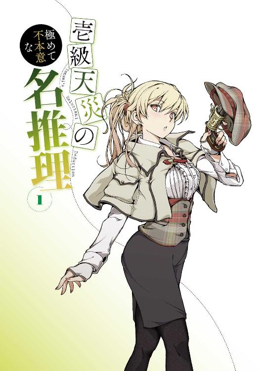
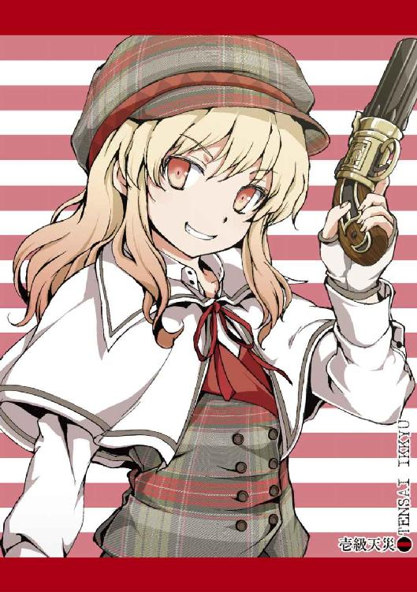
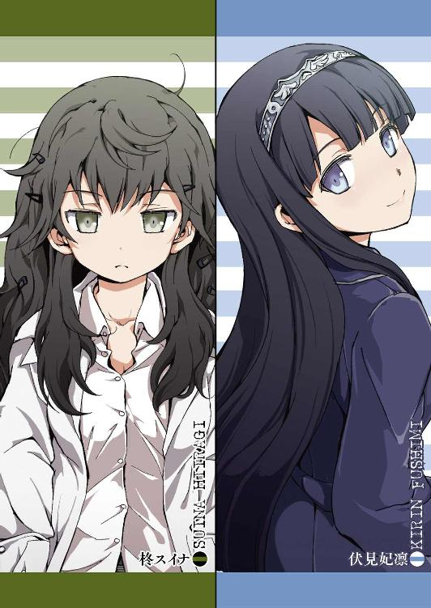
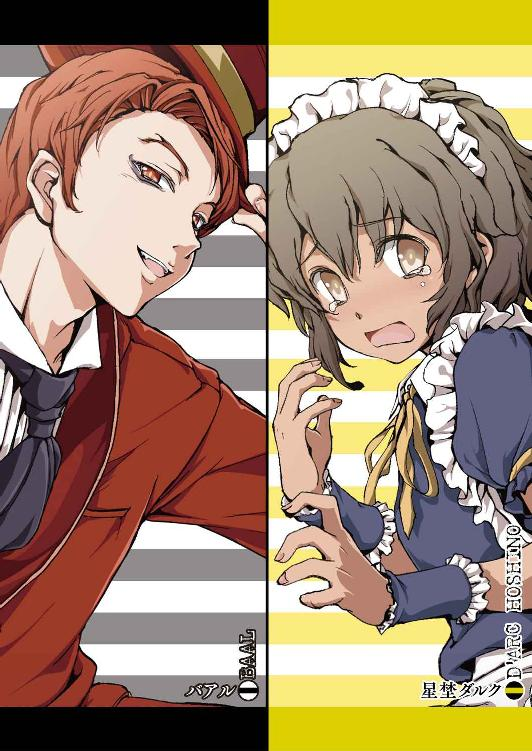
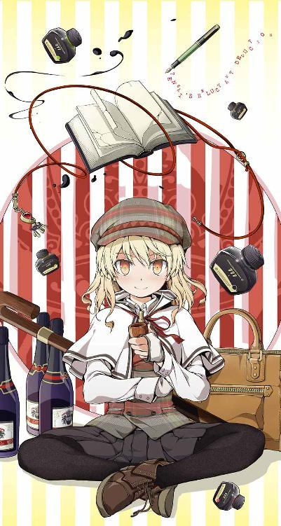
本作品の全部または一部を無断で複製、転載、配信、送信したり、ホームページ上に転載することを禁止します。また、本作品の内容を無断で改変、改ざん等を行うことも禁止します。
本作品購入時にご承諾いただいた規約により、有償・無償にかかわらず本作品を第三者に譲渡することはできません。
本作品は本文縦組で制作されております。ごらんになるリーディングシステムにより、表示の差が認められることがあります。
今よりおよそ一〇年前――
欧州のとある山中、四方を険しい山々に囲まれた窪地に広がる針葉樹林の中に、その建造物はあった。
どこか神秘的な雰囲気を漂わすその空間は、秘術を駆使して張られた結界により、外界と完全に隔絶されており、この厳しい環境下にあって、朽ちることも変わることもなく、そこに存在し続けている。
そこはさる宗教組織が極秘裏に管理している書庫だった。書庫の場所とそこに保管されている曰くつきの書物たちを知る者は、限られたごく一部の人間だけ。その存在は決して表に出ることはない。
そんな特別な書庫に、吹雪が吹き荒れる雪山を乗り越え、招かれざる者を拒むはずの結界を難なくすり抜け、一人の侵入者が足を踏み入れた。
公式の記録でも、この書庫に誰かが立ち入ったのは実に一〇年ぶりのことであり、非公式ともなれば、もしかしたらその侵入者が最初の一人だったのかもしれない。
書庫の中は、身体の芯まで凍りつきそうだった外とは違い、まったく寒さを感じさせなかった。むしろ防寒具を着込んでいる侵入者には暑いくらいである。
侵入者は、雪を払いながら、身に着けていたものを一つ一つ外してゆく。荷物を下ろし、上着を脱ぎ捨てる。そして次に外したダブダブの帽子と大きめのゴーグルの下から出てきたのは、可愛らしい少女の顔だった。
大きくて円らな瞳、ぷるんとした唇。帽子から解放された黒髪が背中まで流れ落ちる。
「ふぅ」とひと息吐いた少女は、最後に首に巻いていたマフラーを外すと、その端を両手で摘んで勢いよく振った。
するとそのマフラーは、水滴を飛ばしながら「うにっ、うにっ」と妙な鳴き声を上げ、少女が手を離すと、空中でクルクルと回転し、四本の足で見事に床に着地した。
「もう、乱暴だな、七々々は」
マフラーだと思われたモノ、それは一匹の小動物だった。
一見すると白に近い銀色の毛並みの小柄なキツネ。どこかふてぶてしく可愛げのない表情と妙にモコモコと大きな尻尾が目を引く。だが、そのキツネは、ただのキツネではない。なぜなら間違いなく人の言葉を喋ったからだ。
「ケテケテが冬眠しちゃうのが悪いんでしょ？」
「生憎とオイラはこんな寒い土地とは無縁の生活をしてきたんでね。七々々が引っぱってこなければ、一生来るつもりもなかったよ」
自らがケテケテと呼んだキツネに、その少女・龍ヶ嬢七々々はにやりと意地悪く笑う。
「それは悪かったわね。だけどしょうがないでしょ？ ここに入るにはケテケテの力が必要だったんだから」
そうしゃがんで頭を撫でてくる七々々に、ケテケテはくすぐったそうな仕草と共に、どこか気持ちよさそうな表情を向ける。
「それで、ここにあるのかい？ その悪魔が封印されているっていう本は？」
七々々はコクリと頷くと、書庫の奥へと目を向ける。
「その悪魔は歴史的な文献に少なくとも三回登場している。ある時は死を振りまく存在として、ある時は勇者に倒される存在として、そしてある時は富と栄光を与える存在として」
「ふーん、それにしてもまた、その時その時によって随分と解釈が違うみたいだね。まったく、本当に人間って連中は、昔っから自分勝手に物事を決めつける奴等だよ」
呆れたようなため息を吐くケテケテの人間批評に、七々々はクスクスと笑う。
「確かにね。でも、もしかしたら本当にそういう存在だったのかもしれないよ」
意味深な言葉を呟く七々々は、そのまま建物の奥へと歩きだした。ケテケテも黙ってその後に続く。
そこは秘蔵の書庫だけあって、数多の歴史的文献や蔵書、それに希少な魔術書などが収められていたが、七々々はそれらには見向きもせず、どんどん書庫の奥へと足を進めていく。途中、様々なトラップが侵入者である七々々の行く手を阻もうとしたが、世界各地で多くの秘宝を獲得し、気に入った精霊魔獣を片っ端から従えてきた七々々を止めることは、物理的にも精神的にも魔術的にも、ほぼ不可能。結局、それらのトラップは、どれ一つとして七々々の侵攻を止めることなどできはしなかった。
ほどなく地下へと続く隠し階段を発見した七々々とケテケテは、臆することなく階段を降りてゆく。
「それで？ その悪魔っていうのはどんなヤツなんだい？」
「文献では色々と表現されてはいたよ。曰く、その吐息一つで森をなぎ払い、その拳の一撃は大地を砕く。その英知は全ての絶望を知り尽くし、その口より紡がれる声を聞いた者は、発狂し、自らの命を絶つという」
「それはまた随分と物騒な悪魔だね」
「本当に怖いよね。いったいどんな悪魔なんだろう」
そう言いながらも、七々々の表情はワクワクしているようにしか、ケテケテには見えなかった。
階段を降りると同時に、またぞろ多くの仕掛けが七々々に襲いかかったが、七々々はそれをあっさりと黙らせる。そのまま何事もなかったかのように通路を進み、ついに封印の間の入り口へと辿り着いた。
「ところで、七々々。その本を見つけていったいどうするつもりだい？」
「そんなの決まっているじゃん」
にっこりと笑う七々々の笑顔に、ケテケテはため息を吐く。
「聞いたオイラが間違いだったよ。どうせ七重島に持って帰るって言うんだろ」
「そういうこと。もっとも本当にそうするかは、これからその悪魔に会ってから決めるけどね」
そこでケテケテのモコモコ尻尾がピンと立った。
「......もしかして、その悪魔の封印をこれからここで解くってことかい？」
「当たり前でしょ」
七々々の笑顔の回答に、ケテケテは無言で踵を返した。その尻尾を、七々々が思いっきり引っ摑む。
「だって、外で封印を解いたら大変でしょ、万が一のときに」
「ま、万が一ってなんだよ！ つまりとっても危険だってことじゃないか！ イヤだよ、オイラはこんな場所で死にたくない！」
「私だって死にたくないよ」
「だったら......」
「だからガンバって悪魔をやっつけよう」
「ちーがーうーだーろ！ こういう時は、逃げるんだろ！」
「そんなのダメに決まっているじゃん」
「な、なんで、ダメなんだよ！」
「だって、逃げるなんてつまらないもん」
にっこりと笑う七々々の本心に、ケテケテはジタバタと抵抗する。
「ヤダ、ムリ、オイラは悪魔なんかと会いたくなんかない！」
「ええい、ここまで来たら観念せんか！」
暴れるケテケテを担ぐと、七々々は封印の間の扉を開いた。
目的の書は、すぐに七々々の視界に入ってきた。
光り輝く魔法陣の中心で、壁から伸びる幾重もの鎖に縛られ、厳重に保管されている分厚い一冊の本。その表紙は、気味が悪いくらい真っ暗な黒革。文字は書かれてはいないが、代わりに不可思議な紋章が黄金色の刺繡で刻まれている。
それを目の当たりにし、七々々の瞳は、まるで新しいおもちゃを見つけた子供のように好奇心に彩られた。
「やーめーろー！」
小脇に抱えた小動物の言葉など無視してズンズンと魔法陣へと侵入した七々々は、悪魔の書の前に立つ。
期待に満ちた瞳を向け、悪魔が封印されている本に手を伸ばす七々々は、臆することなくそれに触れた。
瞬間、本を縛りつけていた全ての鎖は弾け飛び、本がひとりでにパラパラと捲れ始める。それと同時に本から膨大なエネルギーが放たれ、七々々たちはその衝撃に吹き飛ばされそうになった。
「......ぅぉぉぉおおおおおっ！」
そして大気を切り裂くような咆哮と共に、ついに悪魔が姿を現した。
その後、龍ヶ嬢七々々はこの書庫から数冊の本をパク......こっそりと持ち出した。
にこにこ笑顔の七々々が七重島へと持ち帰った戦利品の中には黄金の刺繡が施された黒革の本も含まれていたという。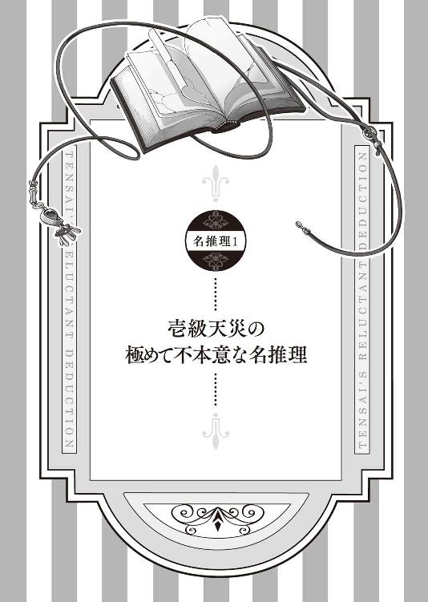
１
その場は異様な緊張感で満たされていた。
五人の人間が集まる洋館のダイニング。昨夜から続く豪雨が窓ガラスを激しく叩き、薄暗い照明が集まった者たちを不気味に照らす。
どの表情も焦燥と猜疑心で淀みきっている。
それも仕方がないこと。
なぜなら今現在、この洋館では連続殺人事件が起こっているからだ。
昨夜からの嵐を待っていたかのように始まった猟奇殺人により、すでに二人の人間が冷たい軀となっていた。
嵐によって外部から完全に孤立した洋館の中で、誰もが誰もを疑う極限状態。
そんな状況下で、一同がこうして集まったのには理由があった。
呼び出されたのである、そのウチの一人に、こう言われて......
「ふむ、犯人が分かったぞ」
生き残っている五人の中で、そう推理を語りだしたのは、一人の少女だった。
偶然にも恐怖の一夜に付き合うこととなったその少女は、一六歳とは思えないモデル顔負けの長身とプロポーション。ウェーブのかかった金色の髪はキラキラと輝き、力強くそれでいてまっすぐ相手を射抜く瞳はどこか魅力的で蠱惑的。不敵な笑みを湛える唇は愛らしく、見ていると吸い込まれてしまいそうになる。
何よりその格好が目を引く。
服のコーディネートと頭の帽子、口に咥えたパイプ。
それら全てが、彼女がいったい何者であるのかを、見る者全てに物語る。
名探偵。
少女は集まった大人たちにこの洋館で繰り広げられた巧妙な殺人トリックをスラスラと語ってゆく。シニカルな笑みを浮かべ、時にユーモアを交えながら。
そんな名探偵の推理はやがてある一人の人物の奇妙な行動に辿り着く。
そのことを指摘された男は、額に脂汗を浮かべ、みっともない言い訳を始める。
だが、そんな無駄な言い逃れを、少女は決して許さない。
辛辣なまでに徹底して男の弁明を潰してゆき、男の逃げ道を次々と塞いでゆく。
ついに言葉を失い、たじろく男の前で、少女は美味そうにパイプの煙を吸い込むと、ビシッとその男を指さし、そして叫んだ。
「犯人は貴様だ！」
静寂の後、男はその場に崩れ落ち......なかった。
なぜなら、それを少女が望まなかったからだ。
「ふむ、何か違うな」
口元に手を当て、その場をグルグルと歩きながら今の決めポーズについて考察する少女。
「やはりありきたりか？ もっとこう、オリジナリティを入れた方が？ だが奇をてらい過ぎるのもどうだろうか？」
ちなみに少女が考えている間、その他の登場人物は一切動かない。
なぜならこれは全て少女の妄想だからだ。
「よし、決めた」
そして少女は再び男を指さし（といっても先ほどより手の位置を高くし、指の角度をやや下向きに修正しているが）、アゴを上げて、反対の手を腰に当てクネらせながら、もう一度叫んだ。
「犯人は貴様でぅるぁぁぁ！」
若干巻き舌を利かせながらの叫びに、今度こそ犯人はその場に膝をついて観念した。
それを見て、少女は満足そうな笑顔を浮かべる。
さて、もう一度繰り返すが、これは全て少女の妄想である。
妄想であるのだから、当然その妄想と現実の情景はまったく違うわけである。
そこは殺人事件が起こった嵐の中の洋館などではないし、彼女のプロポーションも、その......残念というかなんというか、現実ではかなり下方修正が必要な仕様である。
かと言って、少女の行動は全て架空の行動であるかと言えばそうでもない。
少女は自らが妄想していた、今後遭遇する可能性がある凶悪事件のシミュレーション（または都合の良い妄想）通りに、現実に置いてもきっちりと自分が考えたカッチョイイポージングをキメていた。
そんな、妄想の中では見事犯人を黙らせた少女が現実において指さした相手は、たまたまその時やってきたパンツスーツの女性だった。
背筋がピンと伸びたスレンダーな美人。頭の後ろで綺麗に髪を纏めあげ、清潔感がある。
「誰が犯人ですって？」
鉄格子の向こうにいるその女性に、少女は不敵な笑みを浮かべる。
「これはこれは、葉奈ちゃんではないか」
鉄格子の向こうで呆れた表情を浮かべている顔見知りに、少女は妄想とは違い実に慎ましやかな胸で踏ん反り返った。
「私のことを名前で呼ぶのはよしなさい」
「ふん、今更知らない仲でもなかろう」
今現在、自分が置かれている状況などまったく気にしていないと言わんばかりに、妙にデカい態度を取る少女に、葉奈ちゃんと呼ばれた女性は大きなため息を吐く。
「それがどれだけ不名誉なことか、あなた分かっているの？ いいから、私のことはきちんと不動明さんと呼びなさい」
「それは失礼した、不動明警部殿」
「それで不審者少女Ａちゃん、あなたは牢屋の中でいったい何をしているのかしら？」
現在勾留中の少女は、「ふん」と鼻を鳴らした。
「知れたこと。無実の罪で捕らえられているとはいえ、時間を無駄にするのは惜しかったのでな。イメージトレーニングをしていたのだ」
「イメージトレーニング？」
「どう犯人を追い詰めるのが、一番カッチョイイか、という研究とも言うな」
「......」
「まあ、昨今はやりの言葉で言うならば」
「言うならば？」
「エア名推理だ！」
目力全開で吠える少女に、七重島警察署・特別青少年犯罪二課の美人警部と称される不動明葉奈警部は、実に白けた表情を浮かべながら、ガチャガチャと鉄格子の鍵を弄り始めた。
「釈放よ、常連の不審者少女Ａちゃん」
不動明警部の言葉に、少女は「やれやれ」と肩を竦めた。
「まったく、何度間違いを起こせば気が済むのだろうな、ここの警察は？ 未成年を誤認逮捕で牢屋にぶち込むなど、本土だったら大問題だぞ」
「だったら毎回毎回事件現場の近くで不審な行動取るんじゃありません！ それにお生憎様。この七重島では未成年だろうが学生だろうが関係ない。そんなくだらない線引きはこの島には存在しないのよ。罪を犯したものは大人と等しい基準で裁かれる。まあ、あなたに今更言う必要もないでしょうけどね」
確かにそんな説明を受けることなく、少女はこの島のそんなシステムをキチンと理解していた。なぜなら少女もまたこの島の学生の一人であるからだ。
牢屋から出た少女は、不動明警部の前に立つ。
「さて、改めて言っておくぞ、葉奈ちゃん」
「だから私を名前で呼ばない」
「だったら私のことも不審者少女Ａと呼ぶな。私は不審者少女などではない。名探偵だ、名探偵・壱級天災だ」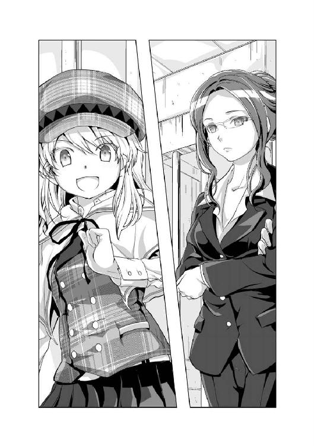
その少女・壱級天災は、ビシリと自分を指さした。
２
日本本島のはるか南に、七重島という名の人工島がある。
独自の教育システムと多岐に渡るカリキュラム、それを可能にする多くの施設と最新の研究設備が揃うその島は、「夢を追い求める多くの学生たちのために」という願いと共に、今からおよそ一二年前に誕生した。
島を統治する機関とそれに属する多くの卒業生たちの功績により、七重島は大きく発展、それにあわせて人工島の規模も拡張してゆき、今では一〇万人が生活するまでになっていた。
人口のおよそ八割が学生、多くの特例措置法と特殊な運営スタイルによって成り立つその島は、別名《学生特区》と呼ばれていた。
「やはり娑婆の空気は美味いな」
警察署を出て一日ぶりに浴びる日の光に、天災は大きく伸びをした。
「そういうことを言うからあなたは不審者少女Ａなのよ」
「知っているか、葉奈ちゃん？ 『娑婆』とは苦しみに耐える自由のない世界という仏教用語からきているそうだな」
「ええ、知っているわよ。『娑婆の空気』とはそこから派生して江戸時代の吉原で使われていた言葉よね。酒池肉林に彩られた吉原を極楽と見立てて、その外は何もない娑婆ってね」
それを聞いた天災の頰が赤くなる。
「そ、そうか。それにしても、まさかそこで吉原を引き合いに出してくるとは。さすがは大人の女性だな」
「ちょ、変な言い方止めなさいよ！」
「や、やっぱりあれなのか？ 身体の火照りをもてあましたら、その辺の活きのいい男子学生をしょっ引いて、大人の事情聴取と銘打って、色々と恥ずかしいことしちゃっているのか？」
「するかぁー！ 顔を真っ赤にしてモジモジしながら変なこと聞くんじゃありません！ それとそこの守衛、ヒソヒソ話しない！」
警察署入り口で「やっべ、マジで？」「俺も事情聴取してほしい」とヒソヒソ話をしていた警官たちは「ビシッ」と敬礼をして自分の持ち場に戻っていく。
「ほらっ、不審者少女Ａはさっさと帰りなさい！ お迎えも来ているから！ もう来るんじゃないわよ！」
不動明警部が指さした方を見ると、可愛らしい子が笑顔で手を振っているのが見えた。
「だったらもう誤認逮捕するなよ、葉奈ちゃん」
そうきっちりと言い返した天災は、不動明警部に背を向け、迎えにやってきた星埜ダルクの元へと歩き出す。
星埜ダルクは、天災の身の回りの世話役を務めている。肩口辺りまでの長さの黒髪と浅黒い肌が特徴的な外国人の子で、女の子っぽい可愛らしい笑顔を浮かべ、どこかほわほわしていて危なっかしい雰囲気を持っている男の子である。......決して間違いではないので、もう一度繰り返すが、男の子である。いくらどこからどう見ても愛らしい女の子であったとしても、天災の命令で女の子の服を着ることを強要されていたとしても、星埜ダルクは天災の助手を務めるれっきとした男の子である。
「迎えにきたよ、天災」
にこにこ笑顔で近づいてくるダルク。そんなダルクのふやけた頰を、天災は怒り任せに思いっきり抓りあげた。
「ひ、ひはいよ、へんはい」
「ダルク、貴様！ 昨日はよくも私を置いて逃げ出してくれたな！」
それは昨日、天災が警察に捕まった時のことである。
こちらの言葉にまったく耳を傾けようとしない警官たちに取り囲まれ、今まさに連行されそうになっていた天災は、少し離れた場所に隠れていたダルクが一目散に逃げるその後ろ姿をしっかりと目撃していた。
「ああいう場合は、主である私と一緒に捕まるのが道理だろうが！」
「だ、だって、二人とも捕まったら、すぐに釈放されないでしょ？ 『たとえ一人を見捨てることになったとしても、もう一人が生き残れば手の打ちようがある』」
「どこでそんな小ざかしい知識を覚えた！」
「この前、天災の代わりにボクが捕まった時、天災が言ったんじゃないか」
「......」
確かに以前、警察に捕まりそうになった時、ダルクを身代わりに逃げ出したことがあり、かつすぐに釈放されたダルクに対してそんなことを言った気がしなくもなかった。
結局、それ以上追及できずに「むむむ」と唸る天災の手から解放されたダルクは、仄かに赤くなった頰を摩る。
「実際、すぐに手を回せたから今回はすぐに釈放されたでしょ？」
「ま、まあ、確かにな」
「とにかく、えっと、お務めご苦労様でした」
ペコリと頭を下げるこの外国人は、どこでそんな言葉の使い方を覚えたのだろうか？
「お腹空いたでしょ？ サンドイッチ作ってきたよ」
ダルクが持っていたバスケットを翳すと、天災のお腹の音が「ぎゅるるるぅぅ」と盛大に鳴り響いた。
そのまま近くにある公園のベンチに腰を下ろした、二人。ダルクがバスケットの蓋を開けると、中から美味しそうなサンドイッチが顔を覗かせる。
「はい、おしぼり」
にこにこと笑うダルクに差し出されたおしぼりを、仏頂面で受け取り手を拭いた天災は、さっそくサンドイッチに手を伸ばす。最初に手に取ったのはレタスとベーコンのサンドイッチ。お腹を空かせていた天災は即座に「はむ」とかぶりつく。途端に口の中にダルク特製のハニーマスタードソースの味が広がる。さらにシャキシャキしたレタスとカリカリのベーコンの食感もたまらない。
「はい、コーヒー牛乳もあるよ」
サンドイッチを口に詰め込み過ぎて、ちょっと飲み物が欲しいと思った絶妙のタイミングで、笑顔のダルクが紙パックのコーヒー牛乳を差し出してくる。もちろんストローも差されている。
それを不機嫌そうに受け取った天災は、「ちゅるちゅる」と口の中のサンドイッチを喉の奥へと流し込む。
「口の端に付いてるよ」と言われ、「ん」と口を向けるとダルクがハンカチでそれを拭い、すぐに「はいもう一つどうぞ」とバスケットのサンドイッチを差し出してくる。
そんな至れり尽くせりのダルクの対応に、天災は内心舌打ちをしていた。
おのれ、ダルク。釈放されたら絶対に泣くまでグチグチと文句を言ってやろうと思ったのに、これでは文句を言う暇がないではないか。
そう内心思いながらも、まあいつでも泣かせられるから今回はよしとするか、と次のサンドイッチに手を伸ばす天災は、まんまとダルクの《天災の怒りを回避する作戦》に引っかかっていた。
食事を終えて満足したところで、片付けをするダルクに天災は尋ねる。
「それで？ もちろん今回も、例の方法を使ったんだな、ダルク？」
ダルクはコクリと頷く。
「そりゃそうだよ。そうじゃなきゃ、天災が簡単に釈放されるわけがないでしょ？」
事件が起こるたびに高確率で出没し、現場近くで不審な動きをしている怪しい不審者少女Ａとして警察にマークされている天災が、毎回あっさりと釈放されるのには訳がある。まあ簡単に言えば、天災を釈放するように警察に圧力をかけた存在がいるのだ。
その人物の名前は、一鶴春秋。一二年前にこの七重島を作った七人の学生・別名ＧＲＥＡＴ７の一人にして、現トップとしてこの島を支配している男である。
実を言うと天災は、この一鶴春秋と個人的な繋がりがあり、何かあった時はそれなりに便宜を図ってもらうことができる関係だったりする。
もっとも力を借りるのはタダではないし、何より天災自身が極力一鶴春秋の世話にはなりたくないと思っている。故に一鶴春秋の力を借りるのはあくまで奥の手、どうしようもなくなった時の最終手段と考えている。
だが今回、それを使ったダルクを責める気は天災にはなかった。
なんだかんだで警察を黙らせるには権力者に圧力をかけてもらうのが一番手っ取り早いからだ。
しかしその結果、権力に頼ったツケを払わされることとなる。
「プップー」というクラクションの音が聞えたのは、その時だった。そちらに目を向けると、公園の前に黒塗りの高級車が停車しているのが見えた。
「ぐっ」
まるでこちらの行動を見計らったように現れた高級車の登場に、思わず身構える天災。だが降りてきた人物が、自分の想像していた一鶴春秋ではないことにホッとした。
車から降りてきたのはスーツ姿の若い男、その名を一ツ橋悠也という。
悠也は、去年まで七重島中央大学で経営学を専攻、主席で卒業したエリートであり、現在はこの七重島の中枢である七重島統括理事会において、一鶴春秋の片腕として働く人物である。
そして何より、天災とは実に近しい間柄でもある。
「お務めご苦労様です」
そう極道っぽく頭を下げる悠也、どうやらダルクに妙な知識を吹き込んだのはこの男であるらしい。
「ふん、まさか悠也が来るとはな」
「一鶴さんの代理だよ。一鶴さんは何かと忙しいからね」
そう微笑む悠也に促されるまま、天災とダルクは高級外車の後部座席へと乗り込む。中は広々とした空間に向かい合うような二つのシート。天災とダルクが片側に、その向かいに悠也が腰を下ろす。
ふと運転席に目を向けると、バックミラー越しに運転手の女性と目が合った。
厳しい目つきと眉辺りで綺麗に切り揃えた前髪の持ち主の名は、石神霧夜。悠也の秘書兼ボディーガードを務める有能な女性である。
霧夜が天災から視線を外すと、車はゆっくりと走り出した。
「それで？ 今回はどうして捕まったんだい？」
すぐに悠也による事情聴取が始まり、天災は窓の外に目を向けながら不機嫌そうに語りだした。
「街を歩いていたら不審な学生を見かけた。妙に周りを気にしたり同じ場所をウロチョロしたりしていたので、しばらく観察していた」
「つまり、何かしらの犯罪を起こすと思ったわけだね」
天災の説明を先読みする悠也に、天災は無言で頷く。
「それでなんで捕まったんだい？」
「学生が犯行に及ぶことは容易に予想がついた。だから一番目立つ場所で捕まえてやろうと考えた。犯行後、学生が使うであろう逃走ルートを割り出し、もっとも人通りの多い場所で華麗に取り押さえようとスタンバイしていた。ただ......」
「ただ？」
「予想外だったのは、学生の手際があまりにも悪く犯行に時間がかかった上、通報を受けた警察が予想以上に早く到着したことだ」
「その結果、天災が待ち受けている場所の手前で犯人が警察に捕まり、その様子をこっそり観察している格好になった天災が、いつものように挙動不審な人物、あるいは捕まった犯人との関係を疑われて逮捕された、という訳だね」
天災は「むすっ」とした表情で頷く。
「ちゃんと説明すればいいのに」
「ちゃんと説明している。何者かと聞かれれば『私は名探偵だ！』と答えている。だが、なぜここにいたのかという理由を説明すれば説明するほど、『なんでそんなに詳しく知っているのか』と犯人との関係を問い詰められるのだ。それ以上は説明するだけ無駄、むしろドツボだ。相手は端からこちらを共犯者であると疑っているのだからな」
「なるほどね、話はだいたい分かったよ。まあ後で一鶴さんからも言葉があるだろうけど、僕からも天災にひと言言わせてもらおうかな？」
「言ってみろ」
「やり方が上手くないし、効率的でもない。それだけ状況が見えているのに、目的にとらわれすぎて結果に繋げられていない。判断材料は十分に揃っているのだから、もっと確実な方法があるだろ？」
「違うかい」という悠也の微笑みに、天災は唇を尖らせそっぽを向く。
「そんなことは分かっている」
「だけどできていない以上、分かっているとは言えないな」
「だから、そういう理屈ではないのだ！ 名探偵とは、もっとこう......とにかく特別な存在でなければならないのだ！」
まるで駄々っ子のような的を射ない天災の発言。だがそれを聞いても悠也は呆れることはなかった。天災が、自分が思い描くイメージに従い行動していることをキチンと理解しているからだ。もちろん、それを他人に伝えることがひどく不器用であり、その結果、まったく成果に繋げられていないという事実も含めて。
「『イメージは大事だ。何もイメージできない者は、何を成すこともできない。だがそれを伝えることができなければ、それは単なる妄言に過ぎない』」
「そんなのは戯言だ」
「だけど真実だよ」
「ふん」とつまらなそうにそっぽを向く天災。
「まあ、僕はとやかくいうつもりはない。天災がやりたいのなら好きなようにやってみるといい」
そんな悠也の微笑みに、天災はあまり良い気分はしなかった。
不機嫌そうな天災に悠也は続ける。
「だけど、あまり感心できない行動であることも事実だね。犯罪に及ぶと分かっている人間を放置して、犯罪が起こるまで見て見ぬ振りをするというのは」
悠也の語る正論に、天災はそっぽを向いたまま語り出す。
「犯人の学生は、嫌々盗みを働こうとしていた。おそらく脅されていたのだろう。右足を引き摺るような動きをしていた。犯行前にも暴力を振るわれていた可能性がある。一度身体をチェックしてみたほうがいい。身体のあちこちに痣がある可能性がある。すれ違う他人を気遣う素振りがあった。他者を傷つけるタイプではない。おそらく警察の事情聴取では、自らの罪を素直に認める自供をするだろうが、それは真実ではない。あの犯人の身辺を調査してみるといい。何か出てくるぞ」
天災がつらつらと語った話は、脈絡を捉え辛いものだった。だが悠也は、すぐに「霧夜」と自らの秘書の名を口にする。
「了解しました、不動明警部に連絡しておきます」
「これで貸し借りはなしだ、一鶴春秋に言っておけ」
「何かが出てきてからね。そうでなければ一鶴さんへの借りはなくならないよ。『成果なくして、結果なし』」
「まったく、あの男は本当に性質が悪い」
一鶴春秋への不満を漏らす天災。
そんな天災を見つめる悠也が表情を引き締めた。
「さて話を戻すけど、つまり天災は、怪我人が出るような大きな犯罪になる可能性が少ないと思ったからこそ、犯罪が起こることを黙認したと？」
「そういうことだ」
「だが、それは可能性であって決してゼロではない」
「故に分かっているのであれば未然に犯罪を防げと？」
「僕はそう思う」
「ふん、だったら名探偵に出番などないではないか。事件が発生しそれを華麗に解決してこその名探偵。事件が始まる前に事件を終わらせることは名探偵のするべきことではない、それは警察の仕事だ」
「その発想は合っているかもしれない、ただし正論ではないと僕は思う。天災はそこまでして目立ちたいのかい？」
「目立つのが目的ではない、名探偵になるのが目的だ」
その天災独特の言い回しに、悠也は苦笑する。
「ならもし、僕の暗殺計画を事前に知ることがあったとしても、天災はそれを放置するのかい？」
「悠也が殺される直前に助けてやる。それが一番目立つからな」
そう答えた瞬間、車が荒々しくカーブを曲がった。
反動で、天災は隣に座るダルクの膝の上に倒れ込んだ。
「大丈夫かい、天災？ 霧夜、何かあったかい？」
「いえ、何でもありません、失礼しました」
そう答えは返ってくるが、バックミラー越しに霧夜が自分を思いっきり睨んだのを天災は見逃さなかった。
「ふん、悠也がありえないもしも話をするからそこの護衛に睨まれたではないか」
その告げ口にまた睨まれるが、天災は知らん顔してそっぽを向いた。
「それでさっきの質問だけど、本当に助けてくれないのかい？」
天災は重たいため息を吐いた。
「くだらないことを何度も聞くな。......私は兄を見捨てるほど落ちぶれたつもりはない」
そんな「むすっ」とそっぽを向く天災の頭に悠也は思わず手を伸ばした。
「本当に可愛いな、天災は」
「ええい、鬱陶しい、頭を撫でるな、このバカ兄貴が！」
「結婚しよう、天災」
「アホか、貴様は！ 何を真顔で世迷いごとを言っている！」
そして何もない道で車は急回転し、裕也は窓に頭を思い切り打ちつけた。
ダルクをクッションに難を逃れた天災は、車が平坦な道で横滑りした理由を推理する必要はなかった。なぜなら思いっきりバックミラー越しに睨まれているからだ。
車はほどなくして、七重島統括理事会の本部ビル・セブンスビルの前で停車した。
「それじゃ僕はこれで。後は霧夜に全て伝えてあるから、しっかりと罰を受けるように」
聳え立つようなビルの前で車を降りた悠也の言葉に、天災は「ん？」と目を向ける。
「罰だと？ おい、どういうことだ、悠也？」
「当たり前だろ？ これだけ周りに迷惑をかけたんだから。『少しは反省するように』との一鶴さんのお達しだよ」
「本当にあの男の指示か？」
「まあそうなるように進言したのは僕だけどね」
そうにこやかに笑う悠也を残し、車はゆっくりと走り出す。
「おのれ、覚えていろよ、悠也！」
「がんばってね。愛しているよ、天災」
「五月蝿い、黙れ！」
窓から顔を出して文句を言う天災を、悠也はにこやかな笑顔で見送った。
３
天災を乗せた車がやってきたのは、島の中心部に程近い場所に位置する一鶴春秋の邸宅だった。自動で開いた大きな正門を潜り、広々とした敷地を抜けると、その洗練されたデザインの屋敷が姿を現す。
隣接する大きな駐車場で車を降りた天災とダルクは、改めて眼の前の邸宅を見上げる。
「ふん、相変わらずデカい屋敷だ」
島を一望できる高台に建てられた三階建ての建物は、まさに豪邸といって差し支えないだろう。
「こちらです」
そう先導する霧夜について天災とダルクが向かったのは、目の前に聳える屋敷の入口......ではなく、屋敷から大分離れた場所にポツンと建っている倉庫だった。
「まさかこんな所にこんなモノがあったとは......」
周りの木々に隠れるようにして庭の隅に申し訳程度に建っている倉庫は、向こうに見える屋敷と見比べると、掘っ立て小屋みたいでみすぼらしく見える。
霧夜はポケットから取り出した鍵で、扉を「ガラリ」と開く。
すると倉庫の中から「もわん」とした埃っぽい空気が漏れ出してきた。
「今からあなたには、ここの整理をしてもらいます」
埃の臭いに眉を顰めていた天災は、驚いて倉庫の中を覗き込む。
学校の教室ほどの広さを持つ倉庫には整然と棚が並んでいるものの、それを上手く使うつもりがまったくないと言わんばかりに、多くの物が乱雑に詰め込まれ、入りきらない物に関しては床の上に無造作に転がっている。まさに持ってきた物を片っ端から倉庫に詰め込んでいった、という様子だ。
「なぜ私がこんなことをしなければならない？」
「これが一鶴社長の下した判断だからです」
「ふざ......」
「『もし従わないようなら取引は不成立、もう一度ブタ箱に放り込め』とも言われています」
その言葉に天災は口を噤むしかなく、最終的には不機嫌そうに頷いた。
「分かった、やる！ やればいいのだろう！ ほら、ダルク、さっさと終わらせるぞ！」
「いえ、あなた一人でやってもらいます」
「なんだと？」
「星埜くんが一緒では、全てを彼に押しつけてあなた自身は何もしないのは分かっていますから」
図星をつかれ、口をへの字に曲げる天災に、霧夜は淡々と指示を続ける。
「掃除をひと通り終えたら、倉庫の物は必要なものと不要なものに分別して綺麗に棚に並べるように。その判断は、全てあなたに任せるそうです。......星埜くん、あなたは私についてきてください。手伝ってほしいことがあります」
霧夜の指示に「えっ、でも」とダルクがオロオロとしだす。
「あなたが私の手伝いをするのも取引の一つです」
「ダルク、霧夜殿の手伝いをしろ」
天災がそう言うと、ダルクは渋々といった感じで頷いた。
「それでは、頼みましたよ。終わったら邸宅にある事務室に来るように」
それだけ言い終えると、霧夜は屋敷に向かって歩き出す。ダルクもまた「がんばってね、天災」と微笑みを残し、小走りに霧夜の後を追いかけて行ってしまった。
一人倉庫前に残された天災は、改めて倉庫の中に目を向け、顔をしかめる。
「いったいいつから放置されているのだ、この倉庫は？」
倉庫に足を踏み入れた天災は、埃臭い空気を掻き分け、目についた窓をとりあえず開けてゆく。だが、そのたびに埃が舞い上がり、「けほっけほっ」と咳き込み、どんどん気持ちがゲンナリしてゆく。
「くっ、面倒だ、逃げるか？」
しかしここで逃げ出すと、約束を反故にしたとして、一鶴春秋の私兵に冗談抜きで追いかけられ、最後には警察に突き出されるのは目に見えている。結局「やるしかないか」と作業を再開した天災だったが、一〇分もしないうちに全てが嫌になった。
息を切らし、フラフラと倉庫の片隅に置いてあった埃だらけの赤いソファーに腰を下ろし、ぐったり。
「ぜぇぜぇ、な、なぜ名探偵がこんなことをしなければならない。こんなのは絶対に名探偵の仕事ではない。もっと名探偵には名探偵らしい名探偵としての役割があるはずなのだ」
自分がやりたくないことはとことんやりたくない自堕落体質の天災が、一人倉庫で不平不満を漏らす。
――もしかしたら、その一言が聞かれていたのかもしれない。
自称名探偵の少女がその違和感に気が付いたのは、その灰色の脳細胞を『いかにしてこの場から脱出するか？』というテーマに使いだしたところで、だった。
「ん？」
何かが聞こえたような気がして辺りを見回す。
誰かの声のようだ。囁き声である。地の底から響いてくるような男の声。何かをブツブツと呪文のように唱えているのだが、声が小さいせいか上手く内容が聞き取れない。
辺りを見回すが、この倉庫の中にはもちろん天災しかいない。では外から？ そう思い、外に出てみるが、むしろ囁き声は聞こえなくなってしまった。
つまり、倉庫の中から聞こえるのか？
原因を突き止めるべく、再び倉庫の中へ。囁き声を頼りに、乱雑に転がっているガラクタたちを避けながら進んでゆくと、倉庫の一角に辿り着いた。
耳を澄ませながら、棚に無造作に置かれた小物をどけてゆくと、その下から一冊の本が姿を現した。
変わった本だ。図鑑ほどの大きさと分厚さがあり、表紙には不気味なほど暗い黒革が使われている。だが奇妙なことに、本のタイトルらしき文字は表紙のどこにも記されている様子がなく、代わりに金色の糸で何かの紋章が刺繡されている。
そしてその本から囁き声は響いてくる。
まるで、天災に向かって「触れろ、触れろ」と言っているかのようだ。
なんとも不気味な本である。普通の人間だったら躊躇するか、気味悪がって逃げ出すだろう。
「ふむ」
しかし、壱級天災は、なんの躊躇もなくその本に思いっきり触れた。
なぜなら、「触れたらどうなるのか？」というのが、とても気になったからだ。
結果、いきなりそれは起こった。
触れた瞬間、破裂したと勘違いするほどの衝撃が本から発せられたのだ。
その衝撃で天災はひっくり返り、倉庫の中は尋常じゃない埃が舞い上がった。
「げほっ、げほっ、げほっ......」
舞い上がる埃に咳き込みながら、急いで近くの窓から顔を出す天災。とりあえず本に触れた手を確認するがなんともない。
「な、なんだ、今のは？」
そのまま倉庫の中を振り返った天災は、本に目を向ける。
すると、風もないのに本は勝手に開いていて、パラパラとページが捲れている。
だが、そんな現象すらどうでもよくなるようなことが、天災の目の前で起こっていた。
埃が収まっていく倉庫の中に、人影があったのだ。
そこに忽然と現れたのは、長身細身の男だった。しかもただの男ではない。
突然降って湧いたかのように現れた男は、全てが赤かったのだ。赤い髪に赤い瞳、赤いシルクハットに、赤い生地で仕立てられたスーツ、そして真っ赤な革靴。
男は天災と目が合うと、その切れ長の目を細め、にっこりと笑った。
「いやー、よくぞ我輩の声を聞き、本に触れてくださいました、お嬢さん。まずはお礼を言わせてください、感謝感謝。いや、それにしても人間の、しかもこんな可愛らしいお嬢さんと話すのなんてかれこれ一〇年ぶりくらいですから、シャイな性格の我輩としてはドキドキですなぁ」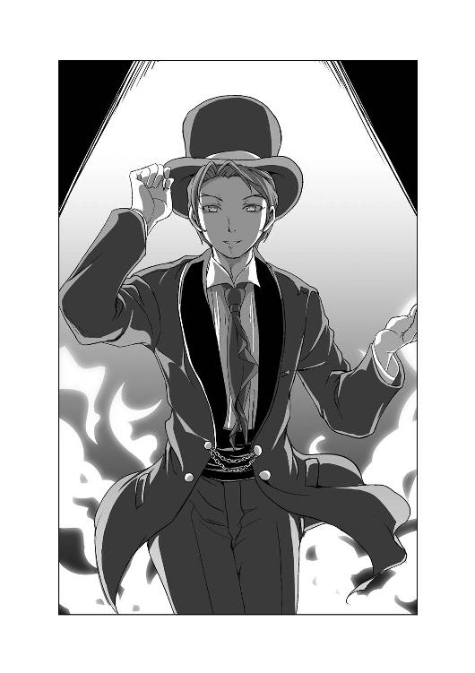
ニコニコしながら陽気な口調で近づいてくる男に、天災は思わず身構える。
「何者だ、貴様？」
「えっ、我輩？ 見て分かりません？ 結構見たまんまなのですが？」
「真っ赤すぎる変なヤツにしか見えんぞ」
「そうですか。いや、やはり我輩の種族のテーマカラーといえば、黒か赤。ですが黒はもうありきたりな感じがするので、赤で統一してみたのですが、似合いませんか？」
「だから、貴様は何者だ!?」
そんな警戒心を強める天災に、赤い男は満面の笑顔と共に胸ポケットから取り出した白いカードを差し出した。
「これは申し遅れました。我輩はこういうものです」
差し出された白いカードには『悪魔』と書かれていた。しかもその文字の隣に書かれていた尻尾と羽が生えた悪魔の絵が「がぉーっ」と白いカードの中で吠えた。
「あ、悪魔？」
「イエス、我輩は悪魔である」
男はにっこりと笑顔を浮かべた。
４
倉庫の中で奇妙な本に触れたら、全身真っ赤な男が現れ、自分は悪魔だと名乗った。
そんな悪魔をうさん臭そうに見つめる天災に向かって、悪魔はにっこりと微笑む。
「そうですな、我輩のことはバアルとでもお呼びください」
シルクハットを取り、恭しく頭を下げる悪魔バアルに、天災は「ふん」と鼻を鳴らす。
「不審者が何を言うか。貴様、いったいどこから入ってきた？ この一鶴邸のセキュリティは万全だ。並大抵のことでは突破することなど不可能なはずだぞ」
「まあどこからと聞かれれば、『その本の中からだ』と答えるべきでしょうな」
バアルが指さしたのは、先ほど天災が触れた妙な本だった。
本当に？ だが、確かに男の現れたタイミングと天災が本に触れたタイミングはほぼ合致する。
だが、しかし......
「掃除は進んでいますか？」と、入り口の方から声がしたのはその時だった。
倉庫に入ってきたのは天災の罰を監視するお目付け役である石神霧夜。どうやら天災がきちんと掃除をしているか見回りにきたらしい。
霧夜は倉庫の状況を見回しながら、天災たちのところまでやって来た。
「とりあえず手はつけているようですね。何か掃除に必要なものはありますか？」
「いや、そんなことより、霧夜殿！ この不審者が問題だろう！」
まるで何事もないかのように振る舞う霧夜に、天災は慌ててバアルを指さす。
「不審者？ いったい何を言っているのですか？」
「それはこっちの台詞だ！ 今、霧夜殿の隣で妙な踊りを踊りながらセクハラ行為を働いているではないか！」
叫ぶ天災が指さした先には、霧夜の隣で「ほらほらーっ、我輩のことを無視していると我輩の凄いモノを見せびらかしちゃうぞぉ」と服を脱ぎ始めるセクハラ悪魔の姿があった。
「相変わらず、あなたの言っていることは私には理解できませんね」
「だから私の話を......」
「これ以上あなたのくだらない話など聞きたくありません」
その冷たい瞳に、天災の言葉が途切れる。
「いい加減なことを言って逃げようなどとは考えないことです。私が監視を任されたからにはあなたには徹底して罰を受けてもらいます。分かったらさっさと掃除の続きをしなさい」
そう言い残して、霧夜は倉庫から出て行こうとした。
その後ろ姿に無性にイラついた天災は、床に転がっていた手のひらサイズくらいのぬいぐるみを摑むと、それを思いっきり霧夜の後頭部目がけて投げつけた。
パン
直後、天災近くの壁にそのぬいぐるみは叩きつけられた。
「どうやら棚の荷物が落ちてきたようですね。あなたも気を付けて作業してください」
背後から投げつけられたぬいぐるみを振り向きざまに蹴り返すという、ありえない行動をしてみせた霧夜に睨みつけられ、天災は「了解した」と不機嫌そうに両手を上げた。
霧夜がそのまま倉庫から出て行ったのを見計らい、天災は転がったぬいぐるみを思いっきり蹴り飛ばした。
「おのれ、あの冷徹女めぇ」
霧夜の態度にイライラする天災。
だが、問題とすべきはそんなことではない。
問題なのは、霧夜がこの不審者を完全に無視していたことだ。
気付かなかったとは思えない。こんなに目立つ男がすぐそばにいるのだ。ということは？
「本当に見えなかったのか？」
「でしょうね。なにせ今のところ、我輩の姿を認識できるのは、本に触れたお嬢さんだけでしょうから」
バアルがさらりと答える。
信じたくはないが、霧夜の反応を見る限り間違いないのだろう。
「これで少しは納得していただけました？ 我輩が悪魔だと」
「分かったから、とりあえず服を着ろ」
赤いボクサーパンツと赤いネクタイオンリーというセクハラ悪魔は、「これは失礼」と服を着始めた。
そんな悪魔を見ながら天災は冷静に考えた結果、ある結論に辿り着いた。
「この奇妙な現象、貴様......いやその本《七々々コレクション》か」
「ほほぅ、七々々コレクションのことを知っているとは話が早くて助かります。いかにも我輩が封印されたその本を、七々々は《悪魔と対決できる呪い本》と命名しておりましたな。我輩としては七々々のずば抜けた才覚は認めていましたが、ネーミングセンスだけは残念で仕方がないと、常々思っておりました」
龍ヶ嬢七々々とは、この七重島を作ったＧＲＥＡＴ７のかつてのトップであり、一〇年前に謎の死を遂げた少女のことである。その龍ヶ嬢七々々が残したとされる行方不明の遺産・龍ヶ嬢七々々の埋蔵金。その莫大な埋蔵金の一部に七々々コレクションと呼ばれるモノたちが存在する。それらは、生前の龍ヶ嬢七々々が世界中からパク......収集してきた世紀の秘宝の数々のことであり、それら全てには不思議な力が備わっている。
天災にも少なからず縁のあるモノであり、他の七々々コレクションを天災は実際に見たこともある。
だがそんなことより、天災には気になったことがあった。
「悪魔と対決だと？」
先ほどこの悪魔はそう言った。
「イエス。その本に触れ我輩を喚び出した者は、我輩と対決する宿命を背負うのです」
「なんだそれは？ 随分と他の七々々コレクションと勝手が違うようだな」
天災の知る限り、七々々コレクションとは、それぞれに備わっている特殊能力を自由に扱うことができるモノだったはずだ。
「この本をそんじょそこいらの七々々コレクションと一緒にしないほうがよろしいですよ、お嬢さん。この本は、言わば災厄の七々々コレクションなのですよ」
「災厄だと？」
頷く悪魔がパチンと指を鳴らすと、黒革の本はフワフワと浮き出し、宙を飛んで悪魔の手の中へと収まった。
「この本に手を出した者は、何を得られるわけでもなく、何か特別な力を使えるようになるわけでもない。ただ絶望をばら撒かれ、それを回避するだけ。それがこの七々々コレクションなのですよ」
にっこりと笑う悪魔に、天災は眉を顰める。
「確かに妙な能力だな。だがそうなると......」
「お嬢さんの御想像通り、我輩がこうして現れた時点で、この本の中から無数の呪いが解き放たれました。すでに島のあちこちに飛び散っていることでしょう」
「呪い、だと？」
「さよう、それこそがこの書が撒き散らす絶望を指します」
「具体的にそれはなんだ？」
「死を生み出す《刻印の呪い》。その呪いが刻まれたモノは、必ず死を一つ生み出します」
「つまり呪いにかかった人間が死ぬということか？」
「その可能性もありますが、そうとも限りませーん」
「ではその人間が何かしらの事件を起こし、誰かを殺害するということか？」
「その可能性もありますが、そうとも限りませーん」
ニタニタとあやふやな回答を連発する悪魔。だがつまりは、その呪いは間違いなくそういった凶悪事件を発生させる、と言いたいらしい。
「ふむ、確かに性質の悪そうな七々々コレクションだな。だがそれだけではないのだろう？」
「と申しますと？」
「先ほど貴様はこう言ったな、『ただ絶望をばら撒かれ、それを回避するだけ』と。すでにばら撒かれたモノを回避するという言い回しを使ったのだ。それはつまり、この状況を打開する何かしらの方法もまた、その本の能力である、ということだな？」
そう天災が尋ねた途端、悪魔は「ぱぁ」と嬉しそうな笑顔を浮かべる。
「いや、素晴らしいお嬢さんだ。まさか説明もなしで、いきなりそこまで見抜かれるとは思ってもみませんでした。まさしくそれこそが、本題なのですよ、お嬢さん」
「というと？」
「お嬢さんはこれからこの島に飛び散った呪いを探し出し、この本を使って我輩と勝負するのです。そして我輩に勝利することにより呪いを打ち消し、呪われた人間を救うのです」
説明しながら、「イェーイ、盛り上がるぅ！」と妙にハイテンションな悪魔。
「なるほど、つまりそれこそが、七々々コレクション《悪魔と対決できる呪いの本》の能力というわけか」
「その通りであります！ 我輩をこうして喚び出してしまったことにより、お嬢さんは我輩と全身全霊を掛けた勝負をする使命を帯びてしまったのです！ さあ、お嬢さん、この島の愛と平和のために、我輩といざ尋常に勝負ぅぅぅ！」
「断る」
胸を張る壱級天災の言葉に、その場の時は止まった。
「......へっ、なんですと？」
「聞こえなかったか、『断る』と言った」
「......い、いやいや、ちょっと待ってくださいよ、お嬢さん。えっとあれですか？ 話が突拍子もなさ過ぎて理解できなかった感じですか？ 分かりました、ではもう一度最初から説明しましょう。今度はあれですね、伝説の勇者風の寸劇で......」
「その必要はない。ある程度は理解した。つまり貴様をこのまま放置すれば、凶悪な犯罪がこれからこの島でわんさかと起こるということだろう？」
「まあ、簡単に言えばそういうことになりますね。......っていうか、ちゃんと理解しているじゃないですか。だったら我輩と勝負を......」
「だから断る」
「いや、だからそうするとこの島はえらい大変なことに」
「だからそれでいいのだ」
「......はい？」
「素晴らしいではないか」
「なんですと？」
思わず聞き返したバアルに、天災は「ふっふっふっ」と悪魔もビックリするくらい邪悪な笑みを浮かべた。
「素晴らしいと言ったのだ。つまり今現在この七重島は、死の呪いによってあちらこちらで凶悪事件が頻発する可能性を秘めた極めて危険な状態にある、というわけだ」
「そ、そうですね」
「ということは、私の活躍するチャンスで溢れかえっているということではないか」
「チャ、チャンス？」
「凶悪事件ある所に名探偵の出番アリ！」
「えっ、あの......」
「くっくっくっ、いや素晴らしいぞ、悪魔。よくぞ復活した。これからは心置きなく凶悪事件を量産するがいい」
「えっ、あれ？ おかしいな、なんでそうなるのかな？」
「なに安心しろ。事件が起こった端から私が全て解決してやる」
「いや、ですから、それが起こらないように、我輩と勝負を......」
「ふん、馬鹿か、悪魔？ せっかくの凶悪事件を事前に回避してしまったら事件が起こらないではないか。それでは私が名探偵として活躍できん。よって私はそんなことは絶対にするつもりはない」
ニヤリと不敵な笑みを浮かべる名探偵・壱級天災は堂々と言い切った。
そこで悪魔バアルはようやく、今回自分を復活させた女の子が若干ズレた感性の持ち主であるということに気がついた。
「えーっと......よし、分かりました、お嬢さん。お嬢さんがちょっと性格に難点がある残念な子であることは理解したので、ちょっと我輩と命の尊さというテーマでお話ししましょう。アナタハー、神ヲー、信ジマスカー、アーハン？」
「人を勝手に残念な子扱いするな。というか、悪魔が神を信じさせようとするな。まあもっとも私は神など信じていないがな。名探偵が信じるのは己の頭脳のみ！」
破天荒な性格とは正反対に、非常におしとやかな胸を突き出す名探偵は、ビシッとポーズまで決める始末。その姿には悪魔もドン引きである。
「うわっ、なんだか凄い子と対決することになっちゃったな。我輩、どうしよう？」
「そんなことより悪魔よ。何の因果か知らないが、この私が復活させてやったのだ。私の代わりにこの倉庫の掃除くらいするのが礼儀だぞ」
終いには訳の分からないことを言われて、いよいよバアルは焦りだした。
「えっ、掃除って、我輩がするんですか？ 悪魔なのに？」
「掃除に悪魔も人間も関係ない」
「いやそうかもしれないですけど......我輩、いちおう悪魔界ではそれなりの地位にいる上位悪魔なんですけど？」
「掃除に上位も下位も関係ない。礼節を重んじ、感謝の気持ちを示すことこそ、貴様が今やるべきことだ」
「マジっすか？」
「マジだ。それとも何か？ 貴様は、先ほど私に感謝するとか言っていたくせに、あれは口から出任せか？」
「そういうわけじゃないですが......」
「だったら、その感謝の気持ちを態度で示して見せろ。それとも自分を上位悪魔とか言っているくせに、貴様は人に礼もできないのか？ 階級というのは品性で決まるのではないのか？ まさかお偉い上位悪魔さまが、そんなこともできんとはな」
「い、いや、ですからそうじゃ......」
「ふん、口ではどうとでも言えるがな」
なんだか話がおかしな方向に転がりだし、テンパった悪魔は腕を組んで考え始めた。
「......あー、分かりました。ではこうしましょう。我輩、がんばってここの掃除をします。ですからその代わり、お嬢さんは我輩と勝負をする、これでどうでしょう？」
「だから私は貴様と勝負をするつもりはない、と先ほどから言っているだろうが」
「いや、ですから、この際やる気とか、実際に対決するしないというのは置いておいて、一応そういう体裁だけは保っていただけないかと。正直、呪いもばら撒いちゃいましたし、このままやっぱり対決しないってことになると、我輩としても何かと困るのですよぅ。ですからとりあえずお嬢さんには、我輩と勝負するという契約書にサインをしてもらって、あとはお嬢さんの気分で勝負をしてもしなくてもいい、みたいな流れでいかがでしょう？」
腰を低くし両手を擦り擦り、愛想笑いを浮かべながら、思いっきり下手に出てくる上位悪魔に、天災は思いっきり白い目を向ける。
「なんだか貴様、変な書類にサインさせようとしている悪徳業者みたいだな」
「いやいや、あんなちゃっちいカス連中と一緒にしないでくださいって。なにせ我輩、血統書つきの悪魔ですから、いやマジで。我輩結構凄いんですよ。その気になれば巨神兵なしで火の七日間とか再現できちゃうレベルですから」
その割にはまったく威厳ゼロの悪魔に、天災は「やれやれ」と踏ん反り返りながら頷いた。
「ふん、そこまで言うのならサインしてやろう」
途端、引きつっていた悪魔の表情が「ぱぁ」と華やかになる。
「本当ですか！ ありがとうございます！ いや、マジで助かりますよ。このままだと、我輩、本当に何もできないんで」
「それで？ どこにサインすればいいのだ？」
胸ポケットから自分の万年筆を取り出した天災に、バアルは手に持っていた黒革の本の裏表紙を捲ると、恭しくそれを差し出した。
「あっ、そうしましたら、その一番下に名前書いてくれますか？」
悪魔が指し示した箇所には、幾つかの文字列が並んでいた。
「これは......誰かの名前なのか？」
「はい。ここにサインされているのは、かつて我輩と勝負した人間たちの名前ですね」
「ジャ......ヌ」
「ちょ、前の人とかの名前見るのとかやめましょう！ そういうのはエチケットに反しますって！」
「というか、この上の方に書いてあるハンニバルというのは、あのハンニバルか？」
「違う、違う、レクターの方ですって！ 羊たちの沈黙の方！」
「というか、なんで貴様はそんなに現世のネタに精通している？」
「そりゃまあ、七々々に色々と......ゲッフンゲッフン」
「ふん、まあいい」
なんだか色々と隠していそうだが、天災は構わず、名義の一番下にペンを走らせる。
実はこっそりとサインの練習なんかもしている名探偵は、自分で考えたカッチョイイデザインのサインを慣れた手つきでサラサラと書き終えた。
「ふむ、こんなモノか」
【壱級天災】
そのサインを確認して、悪魔はニタリと笑う。
「これで契約完了ですな」
満足そうな悪魔が「パタン」と本を閉じる。その途端、再び本を中心に爆発が起こった。
倉庫の中に埃が勢いよく舞い上がり、天災は再びひっくり返った。
「げほっ、げほっ、げほっ」
「あっ、大丈夫ですか、天災ちゃん？」
バアルに手を差し伸べられ、天災はその手を摑む。
「すまん」
「いえいえ、こちらこそ説明不足でしたね」
引き起こしてもらい礼を言う天災に、バアルはにっこりと微笑む。
「ところで一つ聞きたいのだが？」
「うん？ なんですか、天災ちゃん？」
「なぜ貴様と対決した人間の名前の中に七々々殿の名前がないのだ？」
天災が書いた名前の上には、英語綴りで『ジャンヌ』と書かれていた。
つまりこのバアルと前に対決したのはジャンヌなる人物であり、この本を七重島に持ち込んだと思われる龍ヶ嬢七々々ではない。
これはどういうことなのか？
「簡単な話ですよ、天災ちゃん」
バアルはどこか残念そうな表情を浮かべ、そして言った。
「七々々には我輩と戦う資格がなかっただけの話です」
資格がない、それは天災にとって意外な答えだった。
生前、先頭に立ってこの七重島を作り、その後も世界中を駆け回り、世紀の宝を集めきった龍ヶ嬢七々々が持っていない資格。
そんなものが本当にあるのだろうか？
天災はふと、自分の住んでいる部屋の隣の部屋に取り憑いてプリンを食べている地縛霊の姿を思い浮かべた。
「......ふむ。むしろ、いずれ名探偵として世界に名を轟かす私に、そのような特別な資格があった、と考えるのが妥当ということか」
踏ん反り返る名探偵は、ニヤリと笑いながら、そう結論づけた。
なんにしてもこれで話は終わりだ。
「では悪魔、しっかりとこの倉庫を綺麗に整頓するのだぞ」
「了解しました、天災ちゃん。天災ちゃんも気が変わったらいつでも我輩と勝負しにきてくださいね」
「ふん、残念ながらそんな機会は一生ないだろうがな」
そう悪役みたいな笑みを残し、壱級天災は、倉庫を後にした。
一人その場に残った悪魔は、手に持った本に書かれた名前に目を落とす。
「いやいや、それにしても今度の相手はとんでもないお嬢さんですなぁ。他人の命より自らの活躍の場を優先する。なるほど面白い発想をする子だ。では実際に選んでもらいましょうか。他人を犠牲にして得られる活躍の場というモノを」
悪魔はニヤリと邪悪な笑みを浮かべ、パチンと指を鳴らした。
５
悪魔に全てを押しつけた天災は、倉庫を出ると意気揚々と一鶴邸へと向かった。
途中、広い屋敷の廊下で何人かの使用人とすれ違いながら、一階にある事務室に到着し、扉をノック。「どうぞ」という返事を聞いてから扉を開く。
事務室の中はそれなりの広さがあり、机が三つ並んでいる他、来客用のソファー、大きな窓の横には観葉植物と、実に綺麗で洗練された空間になっている。
この事務室は、一鶴邸に勤務する特定の人物に用意された部屋ではなく、七重島統括理事会で働く人間が一鶴邸を訪れた際に使用する臨時の仕事場である。備えつけのパソコンも準備されているが、使われることはあまりない。霧夜もまた、自前のノートパソコンを開き、机の一つで作業していた。
「掃除は終わったのですか？」
キーボードを叩いていた手を止めた霧夜が冷たい声で、天災に尋ねてくる。
「ああ、バッチリ終わったぞ」
「いいでしょう、今は忙しいので後で見に行きますが、もし片付いていなかったらどうなるか分かっているでしょうね？」
「ふん、名探偵に二言はない」
睨む霧夜にそう答えながらも、天災はちょっと心配になった。
大丈夫だろうな、あの悪魔？
「ところでダルクはどこだ？」
「あれ？ 天災、もう終わったの？」
振り返ると、可愛らしいエプロン姿のダルクが、お盆を持って事務室に入ってきた。どうやらこの屋敷の中にあるレストランの厨房も顔負けのキッチンで、お茶の準備をしていたらしい。四角い銀色のトレーの上には白い陶器のティーポットとカップ、それにお皿に載った桃と果物ナイフが載っている。
「さて、霧夜殿。責務も全うしたことだし、そろそろ私たちはお暇するがいいかな？」
「ええ、かまいません」
霧夜に冷たい視線を向けられ、天災は踵を返す。
「いくぞ、ダルク」
「待って、天災。霧夜さんに紅茶だけ出させて」
テキパキと準備するダルクはティーポットからカップに紅茶を注ぎ、霧夜の机に置いた。
「はい、どうぞ、霧夜さん」
「ありがとう、星埜くん」
優しく微笑む霧夜の表情は、天災から見ても綺麗だと思えるものだった。
自分に向けられたものとはまったく違うその笑顔に背を向けた天災は、ダルクを待たずにそのまま事務室を後にした。
「あっ、待ってよ、天災」
ダルクは、お礼とともにエプロンを霧夜に返すと、慌ててその後を追った。
一鶴邸の本邸から出た天災とダルクは、正門に向かって歩きだす。
「それで、ダルク。貴様は何をさせられていたのだ？」
「うーん、書類の整理とかお茶くみとか、かな？」
「なんだか随分と簡単そうな仕事だな」
「うん、霧夜さんは優しいから。仕事も丁寧に教えてくれたし、全然大変じゃなかったよ」
そうにっこり笑うダルクの足を、天災は思いっきり踏みつけた。
あまりの痛さに蹲るダルク。
「な、なにするのさ、天災」
「五月蠅い、黙れ」
ズンズンと先を歩くご立腹な主を、ダルクは慌てて追いかけ、その隣に並ぶ。
「天災の方こそどうだったの？ 思ったより早かったみたいだけど？」
「ああ、妙な悪魔が現れたのでな、そいつに掃除を押しつけてきた」
「......なんだか、悪魔に掃除を押しつけるって、すごい発想だと思うんだけど......その前に悪魔ってなに？」
「なんでも呪いをばら撒いて、この島を......」
と、そこで天災の足は自然と止まった。
「？ どしたの、天災？」
ダルクもすぐに立ち止まり振り返る。
「おい、ダルク。その左頰はどうした？」
呆然とした面持ちの天災に指さされ、ダルクはきょとんとした表情で自分の頰に触れた。
「？ 頰っぺたに何か付いている？」
「鏡を見てみろ」
「鏡って言われても」と辺りを見回したダルクは、庭にあった池へと向かい、その水面を覗き込む。
「何もついてないよ」
そんなダルクに詰め寄る天災は、ダルクの頰に手を添えると、親指でその左頰を強く擦る。
「い、痛いよ、天災」
「なんだ、これは？」
ダルクの左頰に付いて......いや、刻まれていたのは何かの刻印だった。それは不気味な黒い紋章。何より奇妙なのは、その中に並ぶ六つの数字。
そしてその数字の存在こそが、その刻印がただの刻印ではないことを示していた。
「くっ、なんだ、この数字は？」
数字が変動しているのだ、ダルクの肌の上で。
刻一刻と減り続ける数字、その数字が六〇進法で示されており、かつその減る速さを考えれば、それが時間を表していることは容易に想像がついた。
問題は、それがいったい何のタイムリミットを示しているのか、ということだ。
「て、天災、こんなところで......は、恥ずかしいよぅ」
天災に真剣な眼差しで頰に触られモジモジしだしたダルク。その頰を抓りあげ、天災はダルクの後頭部を引っ摑むと、池の水面ギリギリまでダルクの顔を近づける。
「もう一度聞くぞ、ダルク。本当にその左頰の奇妙な刻印は見えないのだな？」
「だ、だから何のこと？ 刻印？ そんなのあるわけないでしょ？」
いよいよ天災は頭痛がしてきた。
ダルクには見えていない。いや、違う。私にしか見えていないとしたら？
すぐに天災の頭の中に、先ほど出会った悪魔の顔が浮かんだ。
『その呪いが刻まれたモノは、必ず死を一つ生み出します』
「くそっ！」
苛立つ天災がそう叫んだ瞬間、勢い余ってダルクの顔面を水面に突っ込んでしまった。
「あっ」
水面をブクブクさせながら両足をばたつかせるダルクを慌てて解放すると、「ぷはっ」とダルクが勢いよく顔を出す。
「コホッ、コホッ、ひ、ひどいよ、天災」
髪や服の胸元をびしょびしょに濡らしてしまったダルクは、むせながら今にも泣きだしそうな表情をしている。その左頰に刻まれた刻印は『01：58：16』。数字は時間の経過と共にどんどんと減り続けている。
そんなダルクの顔を見ていた天災は、ギリッと奥歯を嚙み締める。
「ダルク、貴様はしばらくここで待っていろ」
「えっ？」
「私がいいと言うまで絶対にこの場を動くなよ！ いいな、一歩もだからな！」
「そ、そんなぁ、こんなにたくさん濡れちゃっているのにぃ」
「いいから黙って言うこと聞け！」
その怒鳴り声に、ビクリと驚いたダルクは、コクコクと何度も頷いた。
天災は、ポケットから取り出したハンカチをダルクに投げ渡すと、すぐに倉庫に向かって走り出した。
「これはこれは、天災ちゃん。随分とお早いお帰りで」
勢いよく倉庫の扉を開いた天災が目にしたのは、さきほどまでの埃っぽく物が散乱していたのとは打って変わり、綺麗に整理整頓されたピカピカに輝く倉庫内だった。
その中心には、真っ赤なソファーに腰掛けて足を組み、どこから持ってきたのか分からない豪華なテーブルを前に、王侯貴族が使っていそうなティーセットでお茶を楽しむバアルの姿があった。
だが、そんなツッコミどころ満載の状況はそっちのけで、天災はバアルに詰め寄った。
「あれは貴様の仕業か？」
「あれとはどれのことですかな？」
「ダルクの頰の刻印のことだ！」
紅茶を楽しむバアルがクスクスと笑う。
「なるほど、さっそく一つ目の呪いを見つけた訳ですか。これは僥倖、今度の我輩のお相手は、なかなかの幸運の持ち主でいらっしゃるようだ」
それはつまり、ダルクの頰に刻まれたのが《刻印の呪い》であることを意味していた。
「あれはどうやって解除する？」
「おや、さっきとはまるで態度が違いますね。どういう心境の変化です、天災ちゃん？ 我輩との勝負などどうでもよかったのではないですか？ だったらそんなモノは放っておけばいい。そうすれば、ほどなくダルクちゃんを中心に事件が起こりますから。どうかそれまで、じっくりとお待ちください」
小馬鹿にするようにニタニタと笑う悪魔の口ぶりに、怒りの表情を浮かべる天災は俯き、そして......
「くっくっくっ、にゃーはっはっはっ」
妙な声で笑い始めた。
その予想外の笑い声に戸惑うバアルを、一頻り笑い終えた天災が見据えた。
「なるほど、どうやら私は貴様を侮っていたようだ。さすがは悪魔というところか。なかなか手の込んだ仕掛けをしてくるではないか」
「仕掛け？ なんのことですかな？」
「ふん、まあいい。貴様が言う《刻印の呪い》は、ある程度貴様が自由に操ることもできるというのが分かったからな。今後に役立つ良いデータだ」
「ということは？」
興味深そうにこちらを眺める悪魔、その正面の椅子へと腰を下ろした自称名探偵の少女は、不敵な笑みを浮かべた。
「気が変わった、勝負してやろう。そして完膚なきまでに貴様を叩きのめしてやる」
少女の宣言に、悪魔はニタリととても楽しそうに笑った。
「結構」
バアルはパチンと指を鳴らす。
するとひとりでにティーセットが動き出し、天災の前にカップが置かれ、ティーポットから良い香りの紅茶が注がれる。
「まずは一杯」
カップの取っ手を持った天災は、香りを堪能する。
「アールグレイか」
「我輩のお気に入り産地で取れたモノです。安心してください、人間が飲んでも大丈夫ですから」
天災は臆することなくそれを口にする。
「ふむ、甘くないからまったく美味くない」
しかめっ面でカップを置きながらの堂々としたお子様発言をする天災に、バアルは楽しそうに笑った。
「それでは改めて勝負の詳しい説明をさせていただきます」
６
悪魔バアルは、まずテーブルの上に黒革に金の紋章の刺繡が施された本を置いた。
それはバアルが出てきた本であり、先ほど天災がサインした本である。
「この本の正式名称は《イゾルデの封印書》、この魔書こそが我輩を封じるモノであり、我輩の領域にして力の根源であり、我輩をこの世界に繋ぎとめているモノでもあります」
そう語る悪魔によって開かれたページを見て、天災は眉をひそめる。
「白紙？」
一枚、一枚捲られてゆく上質な羊皮紙。しかしそこには文字はおろか、染み一つ付いてはいない。
「元々ここには、我輩に関する全てのことが記されていました。しかし先ほど天災ちゃんが触れたことで、ここにあった全ての文字は消え去りました。さて、それらはどうなったでしょうか？」
バアルの問いに、天災は思ったことを口にする。
「その文字こそが呪い、ということか？」
「正解です。つまり《刻印の呪い》の正体とは、我輩自身について説明された文字、という訳です」
「そんなモノが呪いになるというのか？」
「それが悪魔というものなのですよ、天災ちゃん。その存在自体が毒。ましてや我輩クラスになると、認識しただけの人間を狂わせてしまうほどの猛毒になりえるのです」
「ふむ、とりあえず納得しよう。話を続けろ」
悪魔は頷く。
「飛び散った《刻印の呪い》が、この本に帰ってくる方法は二つあります。一つは《刻印の呪い》が発動し、それによって誰かが死に至った時。人の死に触れることで満足した文字たちは、自ずとこの書に戻ってくる」
「つまり、何もしなければ呪いの数だけ人が死ぬ、という訳か。それで、呪いの数は？」
「それは内緒、というか我輩も把握していません。この本に書かれている文字は、一六万三四二六文字。最高でそれだけの人間が死ぬ可能性があります。ですが呪いの数とは単純に文字の数ではありません。文字というものは、集まれば単語となって意味を持ち、文章を構築する。それらがさらに集まり節となり、やがて章を形成する。ここに記載されていた文字たちが、どう区切られ、どう分かれているかは、我輩にも分からない。ただ一つ言えることは、文字が集まり意味が大きくなればなるほど、その呪いは強大になってゆき、より高度でより難解な事件を生み出す、ということです」
「なるほど。では貴様が言うところの《刻印の呪い》をこの書に戻すもう一つの方法というのは、『私がその謎を解く』ということで間違いはないかな？」
天災の推測に、悪魔は楽しそうに頷く。
「その通りです。さすが天災ちゃん。これは勝負が楽しみだ」
「ふん、何が勝負だ。そもそも今の方法には大きな矛盾があるではないか」
「ほう、なんでしょう？」
「もし仮に《刻印の呪い》によって殺人事件が起こり、私が事件を推理し始めたとしよう。だがその時にはすでに殺人に満足した《刻印の呪い》は本の中に帰ってしまっていることになる。つまり事件を解決する前に、事は全て終わってしまっているということだ。これでは勝負もへったくれもない。本末転倒ではないか」
「確かに、その通りです。現実世界ではそうなりますね」
「？ どういう意味だ？」
いぶかしむ天災を見ながら、バアルはトントンとテーブルを指で叩く。
「つまりこういうことですよ、天災ちゃん。天災ちゃんには、《刻印の呪い》によって今後間違いなく現実世界で引き起こされる殺人を、殺人が起こった後の未来に行って解決してもらう、ということです」
「意味が分からないぞ？」
「まあ説明するより見てもらったほうが早いですね」
そしてバアルは、開かれた本の白紙のページに手を置いた。
変化はすぐに起こった。
「なっ！」
天災は思わず椅子から腰を上げた。
先ほどまでは確かに綺麗に整頓された倉庫の中にいた。しかし今、天災たちの周りに広がっているのは、見渡す限り続く灰色の荒野、そしてそれらを覆い尽くす血のように赤い空。
灰色と赤、その二色だけの世界に、天災たちの座るテーブルがあった。
「こ、ここは？」
「イゾルデの封印書の中に我輩が作り出した、《惨劇の未来》です」
「《惨劇の未来》だと？」
「《刻印の呪い》に感染した人間によって引き起こされる、本来ならばありえない死が存在する未来、と言っておきましょう。ここで起こった事件は、《刻印の呪い》を解かない限り必ず現実世界で訪れる未来。そしてこの場所こそが我輩と天災ちゃんの勝負の舞台でもある。ここで天災ちゃんが《刻印の呪い》の謎に挑戦し、全ての謎を暴いた時、謎を暴かれた《刻印の呪い》は、現実世界で誰を殺すこともなく、大人しく本へと戻る、という訳です」
スラスラと奇天烈なことを語るバアルに、天災が「ふん」と鼻を鳴らす。
「未来の情景だと？ 貴様は未来すら見通すことができるというのか？」
「あくまで、《刻印の呪い》によって引き起こされる未来だけです」
そこで天災は不機嫌そうに椅子に腰を落とした。
「惨劇の起こる未来を先取りして事件の謎を解き、現実で起こるはずの悲劇を回避する、か。まったく、頭の痛い話だ。なぜ名探偵の私がこんな非現実的な体験をしなければならないのか」
「不服ですかな？」
「不服だな。なにせ目立たない」
「......というと？」
「考えてもみろ。私がいくらこの赤と灰色の世界で名推理をしたとしても、それを知るものは誰もいない。誰の目にも触れず、誰に知られることもなく、その名推理は消えてゆく。私にとってこれほど腹立たしいことはない。まさに極めて不本意な名推理だな」
「やれやれ」とため息を吐く天災に、悪魔はクスクスと笑いだした。
「なるほど実に天災ちゃんらしい発想ですね。さて、ではどうしますかな、名探偵のお嬢さん？ それでも我輩と勝負しますか？ それとも本意に従い、自分のやりたくないと思うことはしませんか？」
「不服だが、今回だけは特別に相手をしてやろう、単なる暇つぶしの余興としてな。一応断っておくが、特に深い意味はないからな」
「素直に、あの子のためだと言えばいいのではないですか？」
ぷいっ、とそっぽを向く、天災。
「冗談はよせ、私は別にダルクがどうなろうと知ったことではない。たまたま今、そういう気分なだけだ」
「誰もダルクちゃんのためとは言っていませんが？」
「五月蠅い黙れ、私の揚げ足を取ろうとするな、悪魔」
バアルを睨みつけ、天災は続ける。
「この勝負の内容は大方把握した。つまり貴様との勝負における私の最終目的は、貴様が生み出した《刻印の呪い》によって引き起こされる殺人事件を全て看破し、《刻印の呪い》を全てその本に戻す、ということだな」
「その通りです」
「では逆に尋ねるが、この勝負において私の敗北とは何を指す？ 一つでも呪いを取りこぼし、呪いによって誰かを殺してしまった時か？ もし敗北した時、貴様は私に何をさせるつもりだ？」
その指摘に、バアルはクスクスと笑いだした。
「本当に頭がキレるお方ですね、天災ちゃんは。まさかいきなりそんなことを聞かれるとは思いませんでした。ですがその推測は半分正解で半分間違っています」
「なんだと？」
「そもそもこの勝負に天災ちゃんの敗北条件など存在しないのです」
「負けがない、だと？」
「パーフェクトを狙う必要なんてない、ということです。完璧以外認めないなんて、教育ママ的な発言をするつもりもありません。いくら推理を間違って失敗してもらっても一向に構いません。何もしないことで、呪いを発動させまくってもらっても何の問題もない。ただその結果、天災ちゃんのミスのせいで誰かが死ぬだけの話です」
不敵に笑う悪魔に、天災は「ふん」と口をへの字に曲げた。
「つまり、それが貴様の目的か？ 呪いを回避できなかったことにより、私が苦しむ姿を見ることが？」
「そこはご想像にお任せします。天災ちゃんのその推理はあながち間違ってもいませんから。まあもっとも、これまで天災ちゃんと話をした限りでは、天災ちゃんは他人の命に関してそれほど関心はなさそうですから、別に心を痛めることもなさそうですけどね」
「ふん、確かにそうだな」
「それがどこまで天災ちゃんの本心なのか。暴かれるのが今から楽しみです」
まさに悪魔の笑みを浮かべるバアルに、天災は鼻を鳴らす。
「そんな機会が訪れることを精々祈っているといい。勝負をする以上は、この私に負けはないのだからな」
「ではそうしておきます」
「次に尋ねるが、実は先ほどからかなり気になっていることがある」
「なんですか、天災ちゃん？」
「なぜそこに一鶴邸がある？」
真っ赤な空の下に広がる地平線まで続く灰色の荒野。そんな空間で対峙する天災とバアルが座るテーブルのすぐ傍に、見覚えのある建物が建っている。
それは先ほどまで天災がいた一鶴邸だった。
「本来この《惨劇の未来》には、何もありません。ですがここに何かが現れたということは、それは天災ちゃんが《惨劇の未来》の起こる可能性を知った、ということです」
「つまり、私がダルクに刻まれた《刻印の呪い》を見つけたから、この場所に一鶴邸が現れた、ということか？」
「その通りです。現実での天災ちゃんによる《刻印の呪い》発見こそが、この《惨劇の未来》での変化であり、同時に発見した《刻印の呪い》を回避するチャンスを得たということでもあります」
それはつまり......
「現れた場所こそが《惨劇の未来》の現場、つまり今回の殺人事件の舞台が一鶴邸であるということか？ ではダルクはどう殺人に関わるというのだ？」
「それは現場に行ってからのお楽しみです」
バアルは立ち上がると、天災に向かって恭しく手を差し出した。
「それでは勝負の開始です。参りましょうか、天災ちゃん？」
そうにこやかにエスコートを申し出る悪魔を無視して立ち上がった天災は、一人でさっさと気味の悪い一鶴邸へと歩き出した。
「やれやれ、つれないお嬢さんだ」と肩を竦める悪魔も、天災の後ろを歩き出した。
７
《惨劇の未来》に出現した一鶴邸の中は、一見して特に変わったところはなかった。
外のように不気味な色をしているわけでもない。ちゃんと色彩のある天災のよく知る一鶴邸と一緒だ。
「外とは違い、中は普通なのだな」
「現場を好き勝手いじくっては、フェアな勝負ができないですからね。あくまでこの世界に出現した殺人現場はそのままです。まあもっとも、それ以外は我輩の思ったとおりにできますけどね」
近くの窓の前で立ち止まったバアルがパチンと指を鳴らすと、外の景色が一瞬にして変わった。
先ほどまでの気味の悪い景色とは打って変わって、外は真夏の太陽の下に広がる砂浜、そこでは水着の女の子たちが楽しそうに戯れていた。
「我輩的には、左から三番目の子がグッドですなぁ。ビキニの下からはみ出る下乳具合が実にエクセレントで......」
「もう分かったから、元に戻せ、気分が台無しになる」
さっさと歩き出した天災。残念そうな表情を浮かべるバアルはパチンと指を鳴らす。すると外の世界は再び赤と灰色の不気味な世界へと戻ってしまった。
「さらばです、下乳美女たち！ また逢う日まで！」
「五月蠅い黙れ、このセクハラ悪魔」
瞳の端に涙を浮かべ敬礼する悪魔を置いて、ずんずんと屋敷の奥へと進む天災。だが先ほどから気になる身体の違和感に、再び足を止めた。
「おい、悪魔」
「なんですか、天災ちゃん？」
「この《惨劇の未来》に来てからというもの、なぜか肩が重い。それと妙に腕が組みづらい......というか、こうして歩いていると、心なしか視界が高くなった気がするのだが？」
自分の体をペタペタと、とくに胸の辺りを念入りに触る天災を見て、バアルはパチンと指を鳴らす。すると目の前に、煙とともに大きな姿見が現れた。
そしてそれを見た天災は、思いっきり目を見開いた。
「こ、これは......」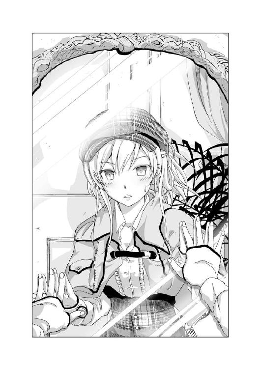
姿見に齧りつく天災。そこにはとんでもない美少女が映っていた。
長身でナイスバディなプロポーション。ウェーブのかかった金色の髪はキラキラと輝き、力強い瞳はどこか魅力的で蠱惑的。不敵な笑みを湛える唇は愛らしく、見ていると吸い込まれてしまいそうになる。
そう、そこに映っていたのは......
「私の真の姿ではないか！」
興奮気味に叫ぶ天災。そんな天災の主観を無視して正確に表現するなら、そこに映っていたのは、日ごろ天災がエア名推理をする際に妄想している、来年辺りに訪れるはずの遅めの成長期の到来によって急激な発育を果たす未来の自分の姿だった。
「ど、どういうことだ、バアル！」
自分の豊満な胸をモミモミする天災に、バアルはにっこり微笑む。
「この《惨劇の未来》は、未来の情景です。ですので、天災ちゃんの姿もまた未来の姿になってもらおうと思いまして」
「では、さっきから私はずっとこの姿だったのか!?」
「はい」
「そしてこれは貴様の仕業なのか!?」
「はい、お気に召していただけましたか、天災ちゃん？」
そう笑顔で尋ねられ、目をキラキラと輝かせていた天災は、慌ててそっぽを向く。
「ふ、ふん。別にお気になど召さないぞ。どうせ来年にはこうなる予定なのだからな。ちょっと自分の姿を先取りしただけで、これといった感動もない......そうか、そうか。未来の姿か」
改めて姿見を見る天災の表情は思いっきり「にやにや」と崩れだした。
「お気に召さないようでしたら、元の姿に戻しますが」
「ふざけるな、悪魔！ このままで良いに決まっているだろうが！」
腹の底から吠える天災に、バアルは「クスクス」と笑う。
「それは失礼しました」
「ふん、分かれば良い分かれば。ふむ、ここにくればいつもこの姿になれる、ということか。......《惨劇の未来》か、なかなか良い場所ではないか」
その後も「ぽーっ」と鏡に映る自分の姿に見とれ続ける天災。そんな、このままだとずっとそうしていそうな天災に、バアルは恐る恐る声をかける。
「あの、天災ちゃん。......そろそろ、現場へ」
「おっと、そうだったな。それで、殺人現場というのはどこだ？」
名残惜しそうに姿見から目を離した天災の質問に、バアルは脇に挟んでいた《イゾルデの封印書》を開くと、白紙のページに目を落とす。
「えー、一階の隅にある事務室ですね」
「ふむ、あそこか」
天災の頭に先ほど訪れた事務室が思い浮かんだ。
バアルの言葉に従い廊下を進むと、ほどなく事務室の前に到着した。
「ここか」
そのまま事務室の扉を開け、部屋を覗き込み、天災は思わず顔を顰めた。
部屋の中で女性がうつ伏せに倒れているのが見えたからだ。
「どうやら死体を発見したようですね」
その女性には見覚えがあった。悠也の秘書兼ボディーガードを務める石神霧夜だ。
うつ伏せに倒れる死体の下からは血が広がっているのが見える。気になったのは広がった血に足跡と一部拭いたような跡があることだ。
天災はそう冷静に分析しながらも、あまり気分はよくなかった。
いくら本物の石神霧夜の死体ではないと頭で理解していたとしても、それは見ていて気持ちのいいものではない。それほど、そこにあった偽物の死体は生々しかった。いやむしろ、この《惨劇の未来》にある時点で、それは本物と寸分違わない偽物の死体なのかもしれない。
そんな死体を横目に事務室へと足を踏み入れた天災は、歩きながら部屋の中を見回す。特にこれといって荒らされた形跡もない。先ほどやって来た時同様、部屋の中は綺麗に整頓されたままだし、机の上にはノートパソコンに飲みかけのティーカップ、来客用ソファーの前にあるテーブルの上にも、銀のトレーに載ったティーポットとお皿に載った桃、それに果物ナイフと、そのままだ。
ひと通り部屋を見回した天災は、背後に立つバアルを睨む。
「つまりこのままダルクに刻まれた《刻印の呪い》が発動すると、最終的に霧夜殿が殺される、ということだな」
「その通りです、天災ちゃん」
「まったく、霧夜殿が殺されるなど信じられんな」
そう部屋を見渡す天災は、そこで「ん？」と立ち止まった。
「おい待て。霧夜殿が殺されるのは分かった。問題は誰が殺したのかだが、それはダルクではないのか？」
「おや、もう分かってしまいましたか。正解です」
「......なんだと？」
「今回の犯人は、天災ちゃんの助手である星埜ダルクちゃんなのです」
ビシッと指を突きつけてきたバアルに、天災はイラッとした。
「......おい、ふざけるなよ、悪魔！ 犯人を先にバラされてしまっては、推理もへったくれもないではないか！」
「ですが、犯人が確定していたとしてもまだ解明されていない謎はあります」
「その謎を解けと？ すでに犯人が分かっているというのにか？」
「そういうことです。まあ、そう不機嫌そうに睨まないでくださいよ、天災ちゃん。毎回というわけではありません。今回はあえてこういう趣向を凝らしてみました」
その話に、なんとも釈然としない表情を浮かべる天災に、バアルは続ける。
「それでは改めてルールを説明します。
一、《イゾルデの封印書》によって作り出された《惨劇の未来》は、《刻印の呪い》を解かない限り必ず訪れる未来である。それを回避するために、名探偵・壱級天災は、現実世界に散らばった《刻印の呪い》を探し出し、この《惨劇の未来》へと訪れ、悪魔バアルが提示する全ての謎に答えなければならない。全ての謎が解かれた時、その《刻印の呪い》は力を失い、《イゾルデの封印書》へと戻り、《惨劇の未来》は回避される」
バアルの語るルールに耳を傾けながら、天災は部屋を歩きまわる。
「つまり毎回、貴様が出題する謎は違う、ということだな」
窓を調べながらの天災の質問に、バアルは「はい」と頷く。
「次に《刻印の呪い》について。
二、《刻印の呪い》に感染すると、そのモノには刻印と時間が刻まれる。カウントダウンする時間は呪い発症までの時間を示し、これがゼロになり呪いが発症してしまうと、たとえ謎を解いたとしても《刻印の呪い》を解くことは不可能になってしまう。
つまり、《刻印の呪い》に刻まれた時間こそが、謎を解くことのできる残り時間でもあるということです。
それと時間に関してもう一つ、
三、この《惨劇の未来》は、《イゾルデの封印書》によって作り出された、仮想空間ではあるが、時間は現実となんら変わらず経過している。
まあ、つまりはいくらこの場所にいたとしても、現実世界でのタイムリミットは刻一刻と近づいているということです」
その説明に、天災は一瞬ピクリと反応したが、そのまま鍵の閉まった窓をガチャガチャ引っ張る。
「なお、天災ちゃんの捜査にあたり、必要になるであろう情報はこちらで準備します」
バアルがパチンと指を鳴らす。
すると、天災たちの入ってきた扉から誰かが入ってきた。
調査を中断して顔を上げた天災は、その人物を見て驚いた。
「な、なぜ葉奈ちゃんがここにいる？」
そこに現れたのは、一鶴邸に来る前にいた七重島警察署で散々顔を合わせた不動明葉奈警部だった。
「なんでも好きなことを聞きなさい、名探偵ちゃん」
そう腕を組む不動明警部、しかしおかしなところが一点。
「おい、悪魔。なんだか、この葉奈ちゃん、白黒だぞ？」
「ええ。なにせ彼女は我輩が作り出した存在ですから。いわばシャドー葉奈くんです。まあそうは言っても現実の彼女となんら変わりはありません。この《惨劇の未来》では、主に現場の状況や死体に関する情報を天災ちゃんに教えてくれるキャストの一人です」
「その役に葉奈ちゃんを選ぶとはな」
「警察と協力して謎を解く。なんだかその方が名探偵っぽいじゃないですか」
「ふん、まさに至れり尽くせりだな」
そう苦笑し、今度は机の引き出しを開けたり、紅茶の残ったカップについた口紅をツンツンしたりする天災。
「まあもっとも、こちらが進んでお教えするのは、警察に発見された事件現場の状況くらいですから。情報が足りなければ天災ちゃんに駆けずり回って集めてもらうことになります。この《惨劇の未来》の中、そして事件が起こる以前である現実世界を」
「まあ、そんなことだろうと思ったよ」
「現実世界に戻りたい時、反対に現実世界からこの《惨劇の未来》を訪れたい時は我輩に声をかけてください。すぐにご案内しますので。......ああ、ただこのことについてルールを一つ、
四、基本的に現実と《惨劇の未来》への行き来は自由であるが、謎を解く場所は《惨劇の未来》の中に出現した事件現場に限定する」
「なるほど」
「他に質問はありませんか、天災ちゃん？ なければ説明は終了しますが？」
そんなバアルの質問に、霧夜のモノと思われるバッグを開けて覗き込んでいた天災は、ため息を吐きながら思い切り悪魔を睨みつけた。
「ふざけるなよ、悪魔。一番肝心なことが説明されていないではないか」
「というと？」
「そもそも《刻印の呪い》が発症した《感染者》はどう変貌する？ 凶悪な殺人鬼になって手当たり次第に人に襲いかかるのか？ 呪いの力によって身につけた特殊な能力で殺しまくるのか？ それとも知能犯として誰かに殺人を促すのか、あるいは操り殺させるのか？ もしそうなら、そもそも推理する意味がない」
「なるほど、確かにもっとも大事な説明をしていませんでした」
「あえて伏せていたのではないのか？」
「否定はしません、肯定もしませんが。では改めて......
五、《刻印の呪い》はあくまで《感染者》の心境に変化を及ぼすものであって、《感染者》の身体に変化を及ぼすものではない。
簡単に言えば《刻印の呪い》によって《感染者》に身体的能力の向上や頭脳の異常な発達、超能力を手に入れるなどの能力アップ効果はない、ということです」
「《感染者》の心境の変化とは具体的に何を指す？」
「抑えきれない殺人衝動の誘発、他には事件に直結する行動を起こしたくなる、といったようなことですかね？ 例を一つ挙げるならば、日常において誰しもが抱く、他人に対する怒り、恨み、妬み、それらは普段なら問題なく我慢できることです。ですが《刻印の呪い》は、そのリミットを消し去り、《感染者》が抑制することのできるはずの怒りを爆発させてしまう。まあ俗に言う、『ついキレて殺してしまった』ってヤツです」
「呪いによってそれが意図的に起こされる、ということか？」
「そういうことです」
「つまり《刻印の呪い》によって引き起こされる殺人は、あくまで犯人の個人的能力によって行われる殺人であり、何か特殊な事象が加味されることはない、ということだな」
「はい。まあ後は、《刻印の呪い》の《感染者》、あるいは《感染者》の行動によって殺人を犯した犯人は、事件後、自らの保身を最優先に行動する、というくらいですかね」
「つまり犯人は自首などの良心的行動を取ることは決してないと？ たとえどんな善人であっても、《刻印の呪い》に感染していなかったとしても？」
「はい、《刻印の呪い》自体は人から人に感染しませんが、呪いによる悪意は感染しますので」
「なるほど、だいたい理解した」
「以上五つが、我輩と天災ちゃんの勝負の主なルールになりますね。では次に、今回の勝負で天災ちゃんに解いていただく謎を提示します。今回の謎は三つ。
謎その一．犯人がどのようにして被害者を殺したのか、その『殺害方法』とは？
謎その二．犯人が使用した『凶器』とは何か？
謎その三．犯人が被害者を殺すに至った『動機』とは何か？
この三つを解き明かしてください。もちろん、我輩は反論しますので、その反論を全て説き伏せることができて、初めて謎を解明したと判断します」
「いいだろう」
「では天災ちゃん、推理タイムの開始です。現場を詳しく調べるなり、シャドー葉奈くんから情報を聞き出すなり、この館にいる他のシャドー証人に......」
「その必要はない」
推理タイム開始を告げるバアルの言葉を天災が遮った。
「......はい？ えっ、なぜですか？」
「もう分かったからだ」
「......えっ？」
「もう謎は解けた、と言っている」
天災の告げた一言に、バアルはぽかんとした表情をしたまま固まった。
「......いや、えっ？ ちょ、ちょっと待ってください、天災ちゃん。分かったって、えっ、ウソ？ マジですか？ ......いやいや、これから現場検証したりとか証言を集めたりとか色々と推理タイムが始まったりして、ちょっとずつ謎が解き明かされていって......えっ？ もう分かっちゃったの、マジで？」
「マジだ。というか、こんなのはわざわざ推理する必要もない」
「い、いやいや、そりゃないですよ、天災ちゃん！ せっかく色々準備したんですから！ ほらっ、シャドー葉奈くんも唖然としているじゃないですか！ 彼女まだ何もしてないですよ!? 天災ちゃんが鑑識の結果とか被害者の死因とか色々聞かないと、彼女の出番ないんですって！ まだ彼女『なんでも好きなことを聞きなさい、名探偵ちゃん』しか言ってないんですよ!?」
バアルの言葉に呼応するようにコクコクと必死に頷くシャドー葉奈。しかしそんなまるで捨てられた子犬のような瞳で見てくるシャドー葉奈など無視して、壱級天災はボリュームのある胸を踏ん反り返しながらもう一度言った。
「何度も同じことを言わすな。もうこの事件の謎は解けた。さっさと解決タイムを始めろ」
８
と言っても、解決タイムに入るまで一〇分間かかった。
「いやさ、凹む気持ちも分かるよ。せっかく出てきたのに出番なしでさ。だけどさ、人生ってそんなもんじゃん。上手くいかないことだって往々にしてあるわけでさ。大丈夫だって、これからも出番あるから。まあ今日のところは初回ということで、顔合わせみたいな感じでさ......えっ、それじゃ私の存在価値がないって？ いや、職場で自分の生きている意味を問われても困るというかさ、みんな上手くいかない中でなんとか人生に折り合いつけて生きているわけで......」
バアルが拗ねたシャドー葉奈を慰めるのに時間がかかったからだ。
ようやく部屋の隅で蹲るシャドー葉奈をあやして戻ってきた悪魔に、天災は呆れた表情を浮かべる。
「おい、悪魔。あれは貴様の創造物ではないのか？ なんでアフターケアまでしている？ 悪魔だったら悪魔らしく、使えない者などさっさと消してしまえばいいだろう」
すると悪魔は、「うわっ」と渋い表情を浮かべた。
「我輩嫌いだな、そういう発想。部下を部品みたいに扱う、みたいな考え。イマドキってヤツなんすか、そういうの？ 育成ゲームとかトレーディングカードゲームのやりすぎによる弊害？ 使えないキャラはすぐに解雇、野に放つ、配合素材、みたいな安易な切り捨て。そうじゃないでしょ？ 我輩たちはデータじゃないっしょ？ ちゃんと血が通っているわけでしょ？ シャドー葉奈くんにだって人格はあるんすよ？ それを扱いが面倒だからって、そういうこと言われちゃうと、こっちとしても『おいおい、ちょっと勘弁してよ』みたいな気持ちになっちゃうんすけどぉ」
「五月蝿い、悪魔がほざくな」
「なんすか、悪魔差別っすか。はっきり言ってそういうの格好悪いと思いますよ、我輩」
そんな反抗的な悪魔の態度にイラついていた天災は、限界に達した。
「おい、茶番はそこまでにしろ、悪魔！ 私はさっさと今回の呪いを消したいのだ！」
苛立つ天災の姿を見た悪魔は、急にニヤニヤといやらしい笑みを浮かべた。
「おやおや、最初とは随分と態度が違いますな、天災ちゃん。そんなにダルクちゃんの《刻印の呪い》が発動するのが怖いんですか？」
覗き込むような悪魔の視線に、天災は「ふん」とそっぽを向く。
「勘違いするな。私はただこんなことはさっさと終わらせて帰りたいだけだ」
「まあ、そうですね。無駄に時間稼ぎするのはこれくらいにしておきましょう。最初からあまりイジワルが過ぎると、天災ちゃんの機嫌を損ねてしまいますから」
「貴様は随分とふざけた性格をしているな」
「そりゃそうです、だって我輩は悪魔ですから」
悪魔はニタリと笑い、改めて天災を見据え、そして宣言した。
「それでは始めましょう、解決タイムです。......と言っても、本当に分かったんですか？ この部屋を見て回っただけで？」
うつ伏せの死体が真ん中に倒れている事務室。三つ並ぶ机のうち、一つには霧夜のノートパソコンと飲みかけのカップが置かれているだけで、あとの二つは使用されていない。ソファーには霧夜のモノと思われるカバンが置かれ、ソファー前のテーブルには銀色のトレーに載ったティーポットと皿に載った桃とそれを剝くために準備したと思われる綺麗なままの果物ナイフが置かれている。他には鍵のかかった窓、観葉植物、いくつかのファイルが並んだ棚などが目につくが、特に違和感はない。
だが天災は「無論だ」と自信満々に答えた。
「そこまで言うのなら、さっそく一つ目の謎からです。今回の事件の犯人である星埜ダルクは、どうやって石神霧夜を殺害したのか？ その『殺害方法』とは？」
「ただ正面から果物ナイフで突き刺しただけだ」
それだけ言うと、天災は説明終了とばかりに口を閉じてしまった。
「......いやいや、そりゃいくらなんでも説明が簡単すぎません？」
「他にどう答えろと？ ダルクは突発的に霧夜殿を果物ナイフで突き刺した。ああ、ついでに、二つ目の謎の答えだ。凶器は、そこにある果物ナイフだ」
そう話を進める天災に、バアルは慌てて口を挟む。
「ちょ、ちょっと待ってください天災ちゃん。とりあえず一つずつ反論しますから」
バアルはうつ伏せに倒れている霧夜の死体と、テーブルのトレーに置かれている綺麗なままの果物ナイフを確認してから、改めて天災に尋ねる。
「まず本当にそんなことで、星埜ダルクは、石神霧夜を殺せたのですか？」
「というと？」
「問題となるのは石神霧夜の身体能力です。石神霧夜は、七重島総合警備保障のエリートで結成された、重役を保護するＳＰの一人です。......って、もう天災ちゃんが推理タイムすっ飛ばすから、説明が変な感じになっちゃったじゃないですか」
「霧夜殿が悠也の護衛であり凄腕なのは分かっている。それで？」
「ですから、はたしてそんな優秀な人物が、ひ弱なダルクちゃんに殺される、なんてことがありえるでしょうか？」
「ふむ、やはり一つ目の謎の論点は『ダルクが霧夜殿を殺すことは可能か』ということか」
「どうやら我輩の反論を予想されていたみたいですね、天災ちゃん。それでどうなんですか？ まさか、ダルクちゃんは暗殺に長けたプロの殺し屋なんて隠れ設定はないでしょうね？」
「あるか。ダルクは、見たままの人畜無害なヤツだ」
「では、どうやって......」
「それが答えだ」
「......といいますと？」
「むしろ石神霧夜は星埜ダルクが人畜無害だったからこそあっさりと殺されたのだ」
「ダルクちゃんだったから？」
天災は頷く。
「石神霧夜は、貴様の言う通り優秀なＳＰだ。格闘技から武器の扱いに至るまでかなりの実力者だろう。もしそんな石神霧夜が襲われたとして、なぜこうも現場が荒れていない？ もし殺意を持った犯人に襲われたとしたら石神霧夜は抵抗しただろう。だが、そんな痕跡が一切残っていないというのは明らかにおかしい。では犯人は石神霧夜を抵抗なく殺せるほどの達人だったのか？ それは些か都合の良すぎる展開だ。かと言って、争う音があれば、誰かが気が付くはずだ。この屋敷には常時多くの人間が働いているからな」
「反論です。天災ちゃん。なぜ誰も気付かなかったと思うのですか？ 天災ちゃんは、シャドー葉奈くんから状況を一切聞いていないじゃないですか」
「そうしないと、ダルクが第一発見者にならないからだ」
天災が急に言い出したことに再び慌てたバアルは、部屋の隅で拗ねていたシャドー葉奈をチラリと見る。
若干驚いているシャドー葉奈はその視線にコクコクと頷いている。どうやら天災の言うとおり、死体の第一発見者はダルクであるようだ。
「......えーっと、なんだか話が飛びましたね。まあ、とりあえずこのことは置いておいて先を進めてください、天災ちゃん」
「つまり霧夜殿は、自分に対して危害を加えるなどとまったく想像していなかった人物によって殺されたということだ。警戒心を抱く必要すらない相手にな」
「それが星埜ダルクだと」
天災は頷く。
「顔見知りであり、自分が気にかけているダルクに、霧夜殿の警戒心は自然と薄れる、いやまったくなかった。注意を逸らされたか虚を衝かれたかは分からないが、そんなダルクに振り向いた所を刺されたのだろう。どちらにせよ死体の状況からほぼ即死だったと断言できる。つまり貴様が提示した一つ目の謎の答え。それは『正面からナイフで突き刺した』だ」
改めてうつ伏せに倒れたままの霧夜の死体を見てから、シャドー葉奈に目を向けるバアル。そしてただただ驚きながら頷くだけのシャドー葉奈。どうやら警察の検死の結果を聞くことなく、うつ伏せで倒れている霧夜の死体を見ただけの天災の推理は、正解であるらしい。
「なるほど。一つ目の謎に対する天災ちゃんの解答は分かりました。ですがこの時点ではあえて『合っている』のか『間違っている』のかは言いませんよ」
「まあ貴様がこの謎解きを勝負と称するのであれば当然だろうな。一つずつ、話を進めながらの答え合わせをしていくというのは些か難易度が下がる行為だ。もっともそれは、推理が間違っていることが前提の話だがな」
「こちらの考えを察していただいて助かります。では天災ちゃんの言う、間違っていない推理の続きを聞かせてください」
「ふむ、よかろう」
「二つ目の謎、『凶器』についてです。先ほど天災ちゃんはそこのトレーに置かれている果物ナイフが凶器であるとおっしゃいましたが、そもそも......」
「鑑識の結果、被害者を殺した刃物は見つかっていない。警察の初動の見解では、犯人が被害者を殺した凶器を持って逃走したと考えている。では、その『凶器』とは何か？」
「......わざわざこちらが聞こうと思っていた質問の説明ありがとうございます。できればシャドー葉奈くんからの話や、推理タイムでそこまで辿り着いてほしかったのですが」
バアルは表情をひきつらせ、シャドー葉奈もコクコク頷く。
「そんなのは時間の無駄だ」
「えっと、ちなみになぜ死体に凶器が残ってないと思われたのですか？ 死体はうつ伏せに倒れていますし、死体に凶器が刺さったままの可能性だってあるじゃないですか」
「なぜと聞かれれば、そこに凶器として使われたナイフが置きっぱなしになっているからだ」
「......」
相変わらずの、急に脈絡が飛び非常に理解し辛い天災の説明に、バアルは混乱し始めた。しばらく唸ったバアルは、やがて一つの結論に達した。
「分かりました。この際、天災ちゃんがどういう推理で結論に辿り着いたかというのは詳しく聞きません。どうやら天災ちゃんの発想は若干特殊なようなので。ですから、今回の事件の全容を、最初から順を追って話してもらってもよろしいですか？」
「ふむ、いいだろう」
そして天災は自分の推理を語り始めた。
「最初にダルクは、咄嗟にその場にあった果物ナイフで霧夜殿を刺してしまった。即死だったのは、偶然かあるいはダルクが狙ってやったかという問題に関しては、ダルクはああ見えて一応男であり力もあること、それに私の手伝いができるようにと多少人体に関する知識を持っていることを考えると......」
「えっと、天災ちゃん。そこは省きましょう。話が長いので。なんにしてもダルクちゃんは被害者を刺して殺した。そこから？」
「......霧夜殿の死体を前にダルクは考えた。このままいけば死体が見つかるのは時間の問題だろう。かと言ってこの屋敷には多くの人間が常時勤めている、死体を運び出すのはまず不可能だ。果物ナイフには自分の指紋がベッタリ、調べれば一発で自分が犯人だと分かってしまう。そこでダルクは自分以外の誰かが霧夜殿を殺したと見せかけるために、大胆な凶器の隠蔽に動き出した」
「それは天災ちゃんが言うところの被害者を刺した果物ナイフですね」
「そうだ。まずダルクは死体から慎重に果物ナイフを引き抜いた。もちろんそれをそのまま持ち歩くことは不可能だ。そんなモノを持っていたら、誰かに出会った時点ですぐにバレてしまうからな。そこでダルクは、それをティーポットの中へ入れて、ティーポットごとキッチンまで運んだのだ」
そう言って、ソファー前のテーブルに置かれた白い陶器のティーポットを指さす天災。
「ですがそれでも、ここで働く人たちに目撃されることになりませんか？」
「だろうな、実際にそれなりの人数に目撃されたはずだ。それもダルクの計算のうちだろう」
「でも、そうなると凶器は見られないかもしれませんけど、もっと重要なモノを見られてしまうんじゃありませんか？」
「それはなんだ？」
「血痕ですよ。正面から被害者を刺したのだったら、返り血を浴びたはずです。まさか『運よく返り血を浴びなかった』とでも言うつもりですか？」
「ふん、そんなわけはなかろう。まあナイフを突き刺して殺したことを考えれば大した返り血は浴びなかったと推測できるが、むしろ付着したはずだと、断言する。だがそれこそが、ダルクの行動の裏づけにもなる」
「では、なぜ誰もダルクちゃんの服についた血痕に気付かなかったのですか？」
「エプロンをしていたからだ」
そこでバアルは口を閉じる。
「先ほど私が事務室に来た時、ダルクはエプロンをつけて給仕をしていた。私の見たことのないエプロンだったし、帰りには持っていなかったところを見ると、おそらく霧夜殿からの借り物だったのだろう。可愛らしいデザインからすると霧夜殿が個人的に所有していた可能性が高い。悠也にエプロン姿を見せるためか、ダルクに着せるために用意していたかは分からないがな」
「ですけど、そんなエプロン、この部屋のどこにもありませんよ？」
「死体を発見したダルクが着けていたはずだ」
「また話が飛びましたね」
そう苦笑しながら、シャドー葉奈をチラリと見るバアル。そしてまたまた頷くシャドー葉奈。どうやらそれも正解らしい。
「話を戻そう。返り血、それに手などに付着した血痕を拭った箇所もそうだろうが、それらをエプロンを着けることで上手く隠したダルクは、紅茶のお代わりを準備するフリをしてキッチンへと向かう。その際、すれ違った人間は、ダルクが着けている可愛らしいエプロンの下に血痕が付いていることなど気付かないし、思いもしない」
「なるほど」
「キッチンへ到着。もちろんナイフを取り出して洗剤で洗うなんてことはしない。お湯をポットに注ぎ、中を濯ぐ振りをしながら中でナイフを何度か濯ぎ、最後にはナイフが入ったままのポットで紅茶の準備をする。それによりナイフについた血痕は洗い流される。後はそのままこの事務室に戻り、ポットに入った紅茶の中からナイフを取り出し、軽く拭いて桃の隣へ置いて凶器の隠蔽の完了だ。そして霧夜殿の死体に近づき、大声を上げ、人を呼んだ。その際、霧夜殿を抱き上げるなどして服とエプロンに血を付着させることも忘れない。これによって、ダルクの服に血が付いていてもなんらおかしくはない状況を作り上げた。以上だ、何か反論は？」
天災の語り終えた話に、しばらく考えたバアルは、スッと手を上げた。
「では一つ」
「なんだ、悪魔？」
「天災ちゃんの推理はよく分かりました。死体発見時の状況も間違っていないでしょう。シャドー葉奈くんもさっきから頷きっぱなしです」
コクコク頷いているシャドー葉奈を見ながら、バアルは続ける。
「ですが、今の話は天災ちゃんの推測であって、本当に起こった事実であるとは限りません」
「なるほどな」
「なので反論です。今の話が本当に行われた証拠はあるんですか？ 天災ちゃんの都合の良いでっち上げの可能性も否定できませんよ」
「まったく、疑り深い悪魔だ。だったら証拠を教えてやる」
そう言って、天災は霧夜が使っていた机に置かれた飲みかけのカップを指さした。
「カップの中に入っている紅茶はなんだ？」
そう尋ねられ、バアルはカップに鼻を近づけると、スンスンと匂いを嗅いでみた。
「これは......アッサムですな」
「おそらく、霧夜殿のリクエストを聞いて、ダルクが準備したものだ。ではポットの紅茶は？」
今度はテーブルの上に置かれているポットの蓋を開けて、鼻を近づけたバアルは、渋い表情で頷いた。
「なるほどアッサムではないですね。これは......ウバですか？」
「その通りだ。では最後にその果物ナイフの匂いを嗅いでみろ」
果物ナイフを手に持ったバアルは、それを鼻に近づける。
「......仄かにウバの香りがします」
「それが証拠だ」
「待ってください、天災ちゃん。なぜ違う紅茶を準備するなんて初歩的なミスをダルクちゃんは犯したのですか？」
天災はつまらなそうに鼻を鳴らす。
「途中でバレるかもしれないという恐怖からつい犯したミスだろう」
「どういうことですか？」
「おそらくキッチンに別の人間がいたのだろう、しかもかなりの至近距離に。そんな状況だ。なんの拍子にバレてしまうか分からない。音でポットの中にナイフが入っているのがバレるかもしれない。捨てているお湯に血が混ざっているのを見て、バレてしまうかもしれない。何より、血の匂いでバレてしまうかもしれない」
そこでバアルは「なるほど」と口元に手を当てる。
「ウバの紅茶は香りが強い」
「それが今回、《刻印の呪い》を発症した星埜ダルクが犯した最大のミスだ」
「反論を」
「なんだ、悪魔？」
「本当にそんな人物がいたと？ キッチンでダルクちゃんの至近距離にいた人物が？」
「むしろ私が訊いてやる。いたのだろう、悪魔？」
「......」
「貴様はルール説明の時にこう言ったな？ 『なお、天災ちゃんの捜査にあたり、必要になるであろう情報はこちらで準備します』と。つまり貴様は準備しているはずなのだ、その時ダルクと一緒にいた証人をな」
悪魔がチラリと部屋の入り口を見た。それにつられて、天災もそちらに目を向ける。
すると入り口のところから部屋を覗き見ているメイドの姿があった。シャドー葉奈と同じく白黒のメイド。その瞳には涙を浮かべ、恨めしそうに天災を睨んでいる。
「その白黒メイドは、ダルクとキッチンにいた話をする他にも、この邸宅の主である一鶴春秋が働く人間のために最適の環境を整えていること、この屋敷のキッチンには紅茶の種類は有名どころから何からひと通り全部揃えていることを語る役、といったところか？ まあそのくらいの情報、私は前から知っていたがな。というわけで残念だったな、白黒メイド。証人としての貴様の出番はナシだ」
そこまで言われてしまい、白黒メイドは泣きながらその場を去っていった。
「あーあ、あの子、本当なら推理タイムで天災ちゃんに色々とお話しするはずだったのになぁ」
「または私の推理に穴があった場合に、貴様が反論するための証言を語らせる要員だろ？」
天災の指摘に、バアルは苦笑する。
「そこまでお見通しでしたか」
「ちなみに貴様が作ったシャドーとやらはあと何人いたのだ？」
「今回はあと四人いましたけど、全員出番なしですね。というか、なんだか天災ちゃんが、彼女たちの出番を奪った鬼に見えてきました」
「ふん、知ったことか」
鼻を鳴らす天災は、最後の締めに入る。
「まあ紅茶の種類を変えてしまったのは、ダルクらしいといえばらしいミスだな。なんにしても今回の犯行は、やることなすことが中途半端だ。大胆な証拠隠滅も最後の最後で小心者の性格でミスを犯した。それに他人に犯行をなすりつける、または物取りの犯行にでも見せるつもりなら部屋を荒らしておくべきだった。結論、星埜ダルクに人殺しの才能もそれを誤魔化す才能もない。まあ、そもそも星埜ダルクはそんなことをするヤツではないがな。さて、話は以上だが、他に反論はあるかな？」
不機嫌そうに語り終えた天災に睨みつけられ、バアルは首を横に振る。
「いいえ。では最後に、星埜ダルクが石神霧夜を殺した『動機』はなんでしょうか？」
その問いに、今まで聞かれてもいないことまでペラペラと推理を展開してきた天災が、口を閉じ、一瞬視線を泳がせた。だが、すぐに、重たそうに、口を開く。
「先ほどルールで貴様が説明していたが、《刻印の呪い》はあくまで殺意を増長させるだけであって、強制するものではない。原因となったのは石神霧夜に対して星埜ダルクが抱いた不満だ。それが呪いによって爆発した」
「その動機とは？」
「私の存在だ」
「天災ちゃんの存在ですか？」
「霧夜殿は、私という存在を快く思っていない。いや、はっきり言ってかなり嫌っている。その不満をダルクに漏らしたのだろう。それによってダルクは霧夜殿の殺害を決意した」
天災の口から語られた『動機』を聞いたバアルは、どこか呆れた表情を浮かべる。
「本当にそんなことが動機だと？」
「間違いない」
「殺人を犯したダルクちゃんの動機が、『自分の悪口を言われたから』なんていうのは、それは些かうぬぼれすぎる解答じゃないですかね？」
鼻で笑うバアルの蔑んだ瞳を、天災は臆することなく正面から受ける。
「ダルクは誰も憎まない。誰も恨まない。いくら自分が辛い目にあっても他人をいたわれる人間、それが星埜ダルクだ」
そう揺るがぬまっすぐな瞳を向けられ、バアルは深く頷いた。
「なるほど、天災ちゃんの推理はよく分かりました。ではその推理が正しいかどうか、実際に本人に聞いてみましょう」
「本人、だと？」
扉から誰かが事務室に入ってきた。
そこに現れた人物に、天災は目を見開く。
白黒の姿はバアルがこの《惨劇の未来》で作り出したシャドーである証拠。だが、その血に染まったエプロンをつけた人物を天災はよく知っている。
部屋に入ってきたのは、星埜ダルクだった。
「ふん、まさか犯人のシャドーまでいたとはな」
「いないとは言っていませんし、犯人がいない殺人現場なんてありえません」
「なるほど、確かに道理だな、悪魔」
俯く白黒ダルクに足を向けた天災は、その前に立つ。
「なぜ霧夜殿を殺した？」
天災のシンプルな質問に、白黒のダルクは俯いたまま答える。
「霧夜さんが、名探偵である天災を否定したから」
白黒ダルクはたった今天災が挙げた『動機』を口にした。それはつまり、認めた、ということだ。
そんな犯行を認めた白黒ダルクに、天災は続けて尋ねる。
「実を言えば、一つ気になっていることがある。貴様が霧夜殿を殺した状況はイメージできた。だが、なぜ貴様がこうもあっさりと霧夜殿の隙を突けたのかは些か疑問だ。背後から近づき、振り向いた所を刺したというのは分かった。だが、それを可能にした方法とはなんだ？ 貴様はどうやって霧夜殿の虚を衝いた？」
その質問に、俯くダルクはクスリと笑った。
「簡単だよ、あの女にこう言ってやったんだ。『お姉ちゃん』ってね」
「......どういうことだ？」
「あの女にはさ、事故で死んじゃった弟がいたんだって。その弟がボクと雰囲気が似ているらしくってさ。だからあいつ、いつもボクに優しくするんだよ」
「それは初耳だな」
「だろうね、天災は嫌われていたから。それでもたぶん、ボクと悠也さんくらいしか知らなかったんじゃないかな？」
「......それで？」
「あの時、果物ナイフを手に持ったボクは、背後からあの女に近づいた。そして言ったんだ『お姉ちゃん』って。あの女、柄にもなく驚いて振り返ったよ。そしてその胸に飛び込んだ。そして動揺しているあの女の胸の中で、しっかりと狙いを定めたボクは、一気にナイフを刺し込んだ、ちゃんと心臓に届くようにね」
クスクスと笑う白黒ダルクは続ける。
「あの女驚いていたよ。『なんで？』って表情が語っていたよ。そのままあっさり息絶えた。ざまあみろって思ったよ」
「......」
「あいつ、今でも手帳の中に弟の写真を入れているんだよ？ もう八年も前に死んだ人間の写真を後生大事に持っているんだ。本当、バカな女だよね」
「......さい」
「でもそう考えると、むしろボクはいいことをしたんじゃないのかな？ だってあの女はこれでずっと会いたかった弟に会えたんだから。むしろ感謝してほしいよ、殺してあげたボクに」
「五月蠅い」
「ねぇ、天災もボクに感謝しているでしょ？ だってボクは天災を思ってあの女を殺したん......」
バキリ
天災に殴られた白黒ダルクが床を転がった。
「五月蠅い、黙れ！ この偽物が！ ダルクの顔で、ダルクの声で、これ以上、胸くそ悪いセリフを吐くな！」
頰を殴られたダルクは顔を上げる。その表情に天災は息を飲んだ。
何を考えているか分からない恍惚とした表情、その瞳は焦点がブレてどこを見ているのか分からない。そんなダルクが突然、肩を震わせ、「ゲラゲラ」と大きな声で笑い始めた。
「おかしなことを言わないでよ、天災。ボクがダルクじゃなかったら、こんなことは起こらなかったんだよ？ ボクはあの女が天災を口汚く貶したから殺したんだよ？ あいつが、ボクと天災の出会いまで否定したんだよ？ そんなの絶対に許せないよ！」
今度は表情を怒りに歪めるダルク。その感情の起伏の激しさは、どこか異様。その姿に、天災はなんとなく理解した。これが《刻印の呪い》を発症した者の姿なのだと。
そんな白黒ダルクに、天災は臆することなく口を開く。
「たとえそうであっても、星埜ダルクはやはりそんなことはしない」
「どうして言い切れるの？ ボクは実際に、そこに転がっている女を殺しているのに」
「ふん、貴様が殺したからなんだというのだ。もしそんな言葉がまかり通るなら私も宣言してやる。星埜ダルクは、私と常に共にいる本物の星埜ダルクはそんなことは絶対にしない」
「ふざけないでよ、天災！ ちゃんと認めてよ、キミのためにその女を殺したボクが、ボクこそが星埜ダルクだって！」
吠える白黒ダルク。そんな白黒ダルクに、それでも天災は動じることなく、冷静に言い放った。
「いくら私たちの過去を口にしても、お前は決してダルクではない。お前は、ただの本のページの黒い染みだ、《刻印の呪い》」
天災がそうはっきりと宣言した途端、目の前の白黒ダルクが胸を押さえ、発狂したように苦しみだした。
それに合わせて、周りの空間が歪みだす。
パチパチパチ......
「これはどういうことだ、悪魔？」
睨む天災に、拍手をするバアルがにっこりと微笑む。
「お見事です、天災ちゃん。我輩が提示した全ての謎に対する天災ちゃんの推理は正解だったようです。謎を暴かれた《刻印の呪い》は力を失い、《イゾルデの封印書》へと戻る。よってこの《惨劇の未来》は消滅する」
気が付くと、天災はバアルと共に元の倉庫の中にいた。
元のようにテーブルを挟んで、悪魔と向かい合うように座っている。
《惨劇の未来》へと向かう前と同じだ。
そのテーブルの上では、風もないのに《イゾルデの封印書》がパラパラと捲れていき、やがてあるページで止まった。
そこにはジュクジュクと不気味な音を立てながら五つの文字が並んでいた。
「これで今回の《刻印の呪い》は《イゾルデの封印書》に戻ってきました。いや、改めてお見事でした......って、聞いてます、天災ちゃん？」
きょとんとするバアルの前で、自分の胸元に手を当てながら、どこかとっても悲しそうな表情を浮かべていた天災は、「はっ」となって顔を上げた。
「ふ、ふん。この程度、私にかかれば造作もない」
「......そうですか」
「だが、それにしても今回は随分とふざけた勝負だったな、悪魔」
そう語る天災に、紅茶を口にするバアルは眉を顰める。
「というと？」
「三つ目の謎についてだ。あの『動機』は私でなければ辿り着けない答えだったのではないか？ ダルクが犯人であり、実際に霧夜殿の嫌悪を肌で感じている私だからこそ辿り着けた答えだった。こんなのはフェアな勝負とは言えないのではないか？」
「フェアでしたよ、我輩と天災ちゃんの勝負であるのなら」
「ふん、だが、推理勝負としては不完全だったと言わざるを得ないな」
そんな天災の評価に、バアルは「くすくす」と笑う。
「まさか有利だった相手にそんな酷評をされるとは思いませんでした。天災ちゃん、先ほどシャドー葉奈くんにも言いましたが、今回はあくまで顔合わせです。ちょっとしたガイダンスを交えながらのレクリエーション。これで天災ちゃんは、我輩との勝負がどのような形で行われるかが理解できたと思いますし、今回はこれで問題ないと思いますが？」
「ふん、何がガイダンスだ。それに勝負の前にも言ったが、今回は特別だ。もう今後貴様と勝負をするつもりはない」
「まあそういうことにしておきましょう。今回はお互いのことを知る上で実に有意義な時間でした。我輩は天災ちゃんがどんな女の子か少し分かった気がします」
自分の心を見透かすようにまっすぐ見つめてくる悪魔を、天災は臆せず睨み返す。
「確かに、それに関しては同意見だな。私も貴様がどうしようもなく根性の捻くれた悪魔だということは理解できた」
そう堂々と語る天災に、悪魔バアルは「それはよかったです」とクスクスと笑いながら手を差し出す。
「ではこれからもよろしくです、名探偵ちゃん」
その手を見つめ「ふん」と鼻を鳴らす天災は、もちろんその手を握ろうともせず席を立ち、さっさと倉庫から出て行った。
９
倉庫を飛び出した天災は、急いで庭にある池へと戻ったが、ダルクはどこにもいなかった。
慌ててケイタイを取り出し時間を確認する。ダルクと別れてからもうすぐ二時間近くが経過しようとしていた。
ダルクの頰に刻まれていた刻印のタイムリミットを思い出し焦る天災だったが、すぐにケイタイにダルクからメールが届いていることに気が付いた。メールの内容は『霧夜に保護され、屋敷にいる』というものだった。
そのまま急ぎ踵を返した天災は、一鶴邸の中へ。先ほどの《惨劇の未来》の中同様に廊下を進み、事務室の前へとやって来た。
すぐに扉を開けようとした天災だったが、ダルクが霧夜と一緒にいるということを思い出し、躊躇する。
心の中にふと浮かんだ、自分の焦りを霧夜に見せたくない、という見栄の気持ちが、急いでダルクの安否を確認したいという気持ちを押し止めた。
結局天災は、静かに、ほんの少しだけ扉を開き、その隙間からこっそりと中の様子を覗き込んだ。
するとすぐに接客用のソファーに座るダルクの姿を見つけることができた。
何よりその左頰に先ほどまであった呪いの刻印がなくなっていることに、天災はホッとした。
だが、その隣に霧夜が座っていることにもすぐに気が付いた。そんな霧夜は、手に持ったハンカチをダルクの前髪に当てている。
「あ、あの、もう乾いているから大丈夫です」
「いいから、私に任せなさい」
あたふたしながらも、霧夜にされるがままのダルクを見て、一瞬イラッとした天災だったが、《惨劇の未来》で白黒ダルクから聞いた霧夜の死んだ弟の話を思い出し、その憤りはすぐに収まってしまった。
さらに二人の話し声が聞こえる。
「どうですか、星埜くん。彼女の付き人など辞めて、私の下で働きませんか？」
「えっ？」
驚きの表情を浮かべるダルク。天災もまた扉の陰で目を見開いた。
「あなたがどういう経緯で彼女と知り合い、どうして彼女の付き人をしているか、私は知りません。ですが、あなたと出会ってから彼女は変わってしまいました」
「そうなんですか？」
「ええ。ですが、良くなったとは思いません。むしろ悪い方へ変わってしまったと私は思っています」
霧夜の酷評に、ダルクは戸惑いを見せる。
そんなダルクに霧夜は続ける。
「私はかつての彼女の方が好きでした。ただ黙々と自分に与えられた責務を果たそうとする彼女が。そこには強い使命感と揺るがぬ意志を感じました。ですが、今の彼女は違う。自分勝手に意味の分からない言葉を吹聴して他人に迷惑をかけるだけ。私にはそんな彼女がまったく理解できません」
怒りを滲ませる霧夜の話に、ダルクは悲しそうな表情を浮かべる。
「星埜くん。勘違いしないでほしいのですが、私は別にあなたを否定するつもりはまったくありません。むしろあなたのことを非常に高く評価しています。ですから私と一緒に悠也さんのサポート役として働いてほしいと思っています」
「その......それは嬉しいと思いますが」
「はっきり言います。星埜くん、あなたは彼女と一緒にいるべきではありません」
「えっ？」
「彼女にとって、あなたという存在はマイナスでしかない。私は、あなたと出会って変わってしまった今の彼女を認めていません」
ダルクは完全に俯いてしまった。どんな表情をしているのかは天災には分からなかった。ただその手が小刻みに震えているのだけは見ることができた。
だから天災は勢いよく扉を開けた。
ビクリと驚く二人の前までズカズカと歩を進めた天災は、ダルクの腕を摑んだ。
「どうも私の付き人が世話になったな、霧夜殿。では私たちはこれで失礼する」
そのまま強引にダルクの手を引く天災は、出口で足を止めた。
「霧夜殿、私は別にあなたにどう思われようとなんとも思わない。見下すならいくらでも見下せばいい、蔑めばいい。だがな、ダルクと出会ったことを貶すことだけは許さない。ダルクと出会ったことが私にとってマイナスだったのだと勝手に決めつけるな」
そして振り向いた天災は霧夜に向かって本心を告げた。
「少なくとも私にとっては絶対にマイナスなどではなかった」
言いたいことだけ言った天災は、霧夜の反応を見ようともせず、そのままダルクを連れて部屋を後にした。
帰り道、ダルクの手を摑みながら天災は黙々と歩く。ダルクも何も言わずそれに従う。
やがて歩きながら天災は言う。
「いいか、ダルク。たとえ誰が私のことをヒドく言おうとも、お前がなんとも思う必要はない。悔しがることも悲しむこともない。だからお前は何があっても誰も殺すな」
そんな天災の言葉に、ダルクはクスクスと笑う。
「随分と極端なことを言うんだね、なんだか今日の天災は変だよ」
「五月蠅い、今日は色々あったのだ！」
「何があったの？」
「......後で話してやる」
そのまま再び無言で歩き続ける。しばらくして今度はダルクが口を開く。
「でもボクは、やっぱり天災がヒドイこと言われたら嫌だと思うよ」
「だからお前は気にしなくて......」
「だからさ、ちゃんと名探偵になってね」
「......」
「そうすれば、天災を悪く言う人なんて誰もいなくなるでしょ？」
「ダルクは......私が名探偵になれると思うか？」
「うん、思うよ」
ダルクはただ微笑み、天災の手をぎゅっと握り返してきた。
「だ、だったら、それまでずっと私の傍にいるんだぞ」
「うん、約束したものね」
天災は何も答えない、ただ歩きながら、ダルクのその手をぎゅっと握り返した。「......という訳だ」
場所は幸せ荘二○三号室。
今現在、名探偵・壱級天災とその付き人兼助手の星埜ダルクが住んでいる部屋である。ちなみに二人は同じ部屋で生活している。天災は女の子であり、ダルクは男の娘なので、何かと問題がありそうなのだが、この事に関して特に問題は生じていない。
ダルクの作った夕食をお腹いっぱい平らげた天災は、食後の紅茶を飲みながら、今日あった悪魔バアルとのやり取りをダルクに包み隠さず全て語った。
「へぇ、そうだったんだ」
突然、天災が語り始めた悪魔やら《刻印の呪い》やらという破天荒な話を聞いても、ダルクはそれが噓だなどとは微塵も思わなかった。
それは天災のことを絶対的に信用しているからだ。
「そっか、天災はボクのために頑張ってくれたんだね」
とても嬉しそうに微笑むダルクを見て、天災の顔が一気に真っ赤になる。
「ば、ばかものぉ！ な、何を聞いたらそういう結論に達するのだ！ 私はただ、暇潰しに......」
いつものクールさはどこへやら、必死になってあたふたと言い訳をする天災の姿にダルクはただただ微笑みながら耳を傾ける。
その後、五分ほど続いた天災の言い訳タイムが終わったところで、ダルクはふと疑問を口にした。
「そういえば、その悪魔さんって、その後どうなったのかな？」
「待ちなさい！」
「待ちません！」
場所は一鶴邸の広い庭の中。
悪魔バアルは、石神霧夜に追いかけられ、必死に逃走中だった。
天災とダルクが帰った後、天災の片づけたという倉庫チェックをするために、やってきた霧夜がその扉を開いた瞬間、綺麗に片づけられていた倉庫の中、大きな姿見の前でなぜか上半身裸でポーズを決めていた悪魔バアルと目があった。
直後、この追いかけっこは始まった。
「久しぶりなので、すっかり忘れていました！ 我輩、契約した瞬間からこの世界との繋がりが強まるので誰にでも見られるようになるというのを！」
「さっきから何を訳の分からないことを言っているんですか！ いいから止まりなさい、この変質者！」
溜まった鬱憤を晴らすかのように怒りの形相で追いかけてくる霧夜に、バアルは悲鳴を上げる。
「我輩、女の子に追いかけられるのは嫌いじゃないですが、こういう追いかけっこは遠慮願いたいです！」
「いいから止まりなさい！」
「ええい、面倒だ！」
バアルはパチンと指を弾いた。
「？ 私は何をしていたのでしょう？」
気が付けば、霧夜は一人、倉庫の前に立っていた。
「確か、誰かを追いかけていたような？」
あやふやな記憶に首を傾げながら、霧夜は倉庫の扉を開いた。
「これは......意外ですね」
倉庫の中は綺麗に片づけられていた。溢れていた物は棚に綺麗に並べられていて、埃一つないほど完璧に掃除もされている。
「どうせ適当にやっていると思ったのですが、きちんと片づけをしていたようですね」
倉庫の鍵をしっかりと閉めると、霧夜は本邸に向かって歩き出す。
そして先ほどの一件を思い出していた。
自らを名探偵などと名乗り、周りに、特に悠也に迷惑をかけ続ける少女を、霧夜はとても嫌っていた。
なぜ自らを名探偵などと名乗り、周囲に迷惑をかけ、それでも堂々としていられるのか？
霧夜にはさっぱり理解できない。
「少なくとも私にとっては絶対にマイナスなどではなかった」
だけど彼女のあの一言は、霧夜の胸に深く突き刺さっていた。
自分が否定しているはずの彼女の言葉が。
「お疲れ様、霧夜」
事務所に戻ると、霧夜が仕える主・一ツ橋悠也の姿があった。
「お疲れ様です、悠也さん」
「天災はきちんと罰を受けたかい？」
「はい、こちらの提示したノルマはクリアされました。もっとも反省なされたとは思いませんが」
霧夜の報告に、「天災らしいね」と微笑む、悠也。
「それで？ 天災は？」
「もう帰られました」
それを聞くと、悠也はとても残念そうにため息を吐いた。
「そうか、久しぶりに帰って来たんだから、皆で一緒に夕食でもと思ったんだけどね」
「......」
「？ 浮かない顔をしているね、霧夜。何かあったのかい？」
そう指摘され、慌てて取り繕おうとした霧夜だったが、悠也の表情を見て、正直な気持ちを口にした。
「悠也さんは、彼女の行動をどう思われていらっしゃるんですか？」
「というと？」
「彼女が逸材であることは私も認めています。彼女の才能を役立てられることなどいくらでもあります。ですが彼女が今していることは他人に迷惑をかけることだけです。なぜそんなことをするのか、私にはまったく理解できません。彼女は間違っている。だったら、そんな彼女を正しい方向に導くのが、彼女に対して私たちがすべきことではないでしょうか？」
「はは、霧夜が天災をそんな風に評価してくれていたなんてね。兄としても嬉しいよ」
「茶化さないでください、悠也さん」
「僕は今のままで良いと思っているよ」
あっさりと天災を肯定する悠也。
「ですが、あんな奇行を続けるのは......」
「今、天災がすべきことは、実際にやってみること、だと思っているから」
悠也の言葉に、霧夜は戸惑う。
「実際にやってみること、ですか？」
「天災にとって、それが正しいことなのかそうでないか。それは今、僕たちが決めることじゃないと思っている。最終的にそれを決めるのは天災自身だ。これは別に、放任している訳でも見捨てているわけでもない。僕も霧夜同様に天災を高く評価しているんだ」
「評価、ですか？」
「ああ、だからこそ確信している。天災は時が来れば、自分の進むべき方向をきちんと判断できるとね」
だから今はこのままでいい。
「ですが......」
「霧夜、ここは七重島だ。若者がどんな夢にでも挑戦できる場所。僕もそうだったし、霧夜もそうだったんだろ？」
そう尋ねられ、霧夜は黙ってコクリと頷く。
「霧夜はなぜ七重島に来たんだい？」
「私は......自分にとって大切な人を護れる人間になりたかった。もう二度と失うことのないように、強い人間になりたくて、そのためにこの島に来ました」
かつて自分の大切だった弟を失ってしまった喪失感を思い出し、霧夜は胸の痛みに耐えるように俯く。
そんな霧夜の肩に、悠也がそっと手を置いた。
そして顔を上げた霧夜に、悠也は優しく微笑む。
「じゃあ、もうその願いは叶っているね。霧夜は僕を護ってくれているから」
悠也のその笑顔と言葉に、霧夜はドキッとしてしまった。
「おっと、そうはいっても大切な人というのは僕じゃちょっと力不足だね。それは霧夜の大事な人の席だものね」
そう爽やかに笑う悠也は、冗談ではなく、本当にそう思っているというのが分かる。だけど霧夜的には、「いや、悠也さん。その謝罪はいらないというか、なかった方が私としてはとても嬉しかったのですが......」と心の中で思っていたが、もちろんそんな淡い恋心を口に出したりはできない。
そんなどこかモジモジしている霧夜に、悠也は言った。
「霧夜が天災のことをどう思っているかは分かった。だけど天災のことは、あまり否定しないであげてくれ」
「......分かりました」
悠也の言葉に霧夜は頷く。
自らの妹を信じ、優しい気持ちでその姿を見守る兄。
悠也に対してそう思う反面、なぜか霧夜は違和感のようなものを感じた。
なぜかは分からない。間違いかもしれない。単に自分の勘違いかもしれない。
それでもふと思ってしまった。
もしかしたら悠也さんは、私以上に今の彼女の行動に対して否定的なんじゃないだろうか？
後日、天災のケイタイに石神霧夜からのメールが届いた。
そこには、「先日は配慮の足りない発言をして申し訳ありませんでした」という謝罪の言葉があった。
「ふむ、まあ許してやるか」
そう微笑む天災の隣にいたダルクにもメールが届いた。
「あっ、霧夜さんからだ」
天災がチラリとそのメールの内容を覗き込むと、そこには可愛い絵文字などがふんだんに使われた長文がズラリと並んでいた。
妙にイラッとする天災に、内容を確認したダルクがにこにこと嬉しそうに微笑む。
「霧夜さん、この前はごめんなさいだって。それで今度ご飯奢ってくれんだって。楽しみだなぁ」
「ふん、それは良かった、なっ！」
むぎゅ
霧夜からのメールににこにこしていたダルクの頰を思いっきり抓りながら、天災は心の底から思った。
「......やはり、あの女は嫌いだ」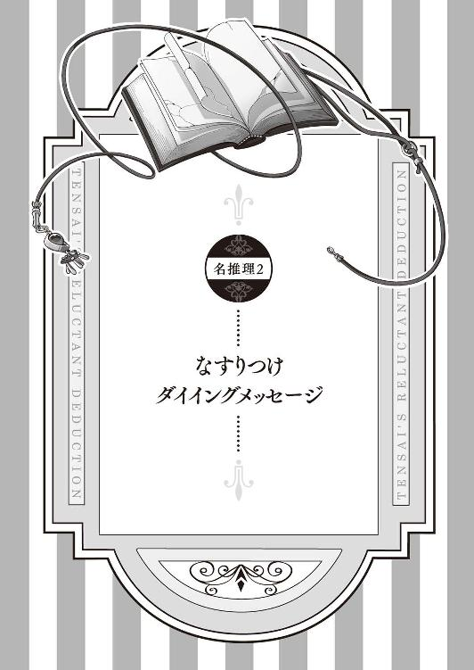
えー、皆さん、おはようございます。悪魔バアルでございます。
ひょんなことから七々々コレクション《悪魔と対決できる呪いの本》に触れ、《刻印の呪い》を七重島中に撒き散らしてしまった自称名探偵の少女・壱級天災。
彼女はその本、正式名称《イゾルデの封印書》より現れた超イケメン悪魔......あっ、これ我輩のことです......と契約を結び、推理勝負をすることになりました。
対決の内容は、《刻印の呪い》に感染した《感染者》が、今後引き起こしてしまう殺人事件を、殺人が起こってしまった未来《惨劇の未来》へと赴き解決するというモノ。
成功すれば、《刻印の呪い》は消え、その殺人事件は無事回避。しかし失敗すれば、その殺人事件は現実となり、誰かが死んでしまいます。
そんな過酷な運命に立ち向かうことになった天災ちゃん。
しかしここで問題が一つ、天災ちゃんは殺人事件が起こる前に事件を解決することに難色を示します。
理由は、『目立たないから』。
悪魔の力という常識外の干渉によって行われるこの推理勝負を、普通の人間は感知できません。つまり《惨劇の未来》に赴き、事件を解決したとしても、天災ちゃんの偉業を知る人は現実においては誰もいないのです。「こんな全然目立たない、極めて不本意な名推理、私はしたくないんだからね★」とプンスカ怒る天災ちゃん。まったく本当に素直じゃ、ぐほはっ！
「さっきから黙って聞いていれば、何を好き勝手に言っているんだ、この悪魔め！」
て、天災ちゃん。いきなり背後から延髄蹴りは、殺傷能力が高すぎますって。危うく悪魔殺しになるところでしたよ。
「ふん、貴様などさっさと消えた方が世のためだ」
ひ、ひどい、天災ちゃん！ 前回、あんなに我輩のこと弄んだくせに、飽きたらポイだなんて、鬼畜過ぎますよぉ。
「だから好き勝手に話をでっち上げるな、この悪魔！ 変な勘違いをされてしまうではないか！」
大丈夫ですって、ちょっと話盛ったところで誰も分かりませんって。まあそれでも、最初の《感染者》であったダルクちゃんを救うためにと事件を解決した天災ちゃんは、本当に可愛い......
「あーっ！ あーっ！ あーっ！」
そんな真っ赤になって大声出して手をブンブン振る姿も萌ゆるますなぁ。
「うるさい！ 黙れ、黙れ、黙れ！」
さて、そんな萌え萌え天災ちゃんは置いといて、我輩と天災ちゃんの推理勝負のルールを改めて紹介したいと思います。
主なルールは五つ。
一、《イゾルデの封印書》によって作り出された《惨劇の未来》は、《刻印の呪い》を解かない限り必ず訪れる未来である。それを回避するために、名探偵・壱級天災は、現実世界で《刻印の呪い》感染者を探し出し、《惨劇の未来》へと訪れ、悪魔バアルが提示する全ての謎に答えなければならない。全ての謎が解かれた時、その《刻印の呪い》は力を失い、《イゾルデの封印書》へと戻り、《惨劇の未来》は回避される。
二、《刻印の呪い》に感染すると、そのモノには刻印と時間が刻まれる。カウントダウンする時間は呪い発症までの時間を示し、これがゼロになり呪いが発症してしまうと、たとえ謎を解いたとしても《刻印の呪い》を解くことは不可能になってしまう。
三、《惨劇の未来》は、《イゾルデの封印書》によって作り出された仮想空間ではあるが、時間は現実となんら変わらず経過している。
四、基本的に現実と《惨劇の未来》への行き来は自由であるが、謎を解く場所は《惨劇の未来》の中に出現した事件現場に限定する。
五、《刻印の呪い》はあくまで《感染者》の心境に変化を及ぼすものであって、《感染者》の身体に変化を及ぼすものではない。
とまあ、これが主なルールとなります。その他の細かなルールについては追々......
「おい、悪魔。貴様はさっきから何を一人でペラペラと喋っている？ だいたいここはどこなのだ？」
えっ、どこか分からないんですか？
「分かるか！」
ああ、ここ。天災ちゃんの夢の中です。
「......へっ？」
ではまた後ほどお会いしましょう、天災ちゃん。
パチン
「天災、そろそろ起きないと遅刻しちゃうよ」
バアルがにこやかに「パチン」と指を鳴らした次の瞬間、付き人の星埜ダルクが天災の体を揺らしていた。
むぎゅ
とりあえず天災は、ダルクの頰っぺたを思いっきり抓ってみた。
「ひ、ひはいよ、へんはい」
いつも通り、涙目でブンブンと両手を振るダルク。
どうやら先ほどのことは、本当に夢の中の出来事であったらしい。
「それにしてもまさかあの悪魔が夢に出てくるとは。最悪の目覚めだな」
朝一番からムスッと不機嫌な表情を浮かべる自称名探偵・壱級天災は、モソモソとベッドから這い出すと、着ているパジャマのボタンを外し始めた。
１
日本本島のはるか南に、七重島という名の島がある。独自の教育システムと多岐に渡るカリキュラム、それを可能にする多くの施設と最新の研究設備が揃うその島は、夢を追い求める多くの学生たちのために作られた人工島だ。誕生した一二年前から拡張を繰り返してきたこの島には、現在約一〇万人が暮らし、そのおよそ八割を占める学生のために多くの学校が作られている。七重島には高等部だけで七つ学校が存在し、各学校にはできた順番に番号が振られている。
その中の一つ、七重島第三高等部に、自称名探偵を名乗る少女・壱級天災は通っている。
現在、本日二回目の休み時間。天災のクラス二年Ｃ組は移動教室のため、教室のある学級校舎から隣接する特別校舎へと移動している最中である。
その道すがら、天災は「むすっ」と実に不機嫌そうな表情を浮かべていた。
「どうしたの、天災。今朝からずっと機嫌が悪いみたいだけど？」
そう声をかけてきたのは、女子の制服を身にまとう可愛らしい外国人。天災の付き人として身の回りの世話をする星埜ダルク。常に天災と行動を共にする男の娘である。
「別になんでもない」
本人はそう言ってはいるが、どこからどう見ても不機嫌そうだ。
「今朝話していた、夢に出てきたっていう悪魔さんのことが気になるの？」
「......」
悪魔バアル。
災厄の七々々コレクション《イゾルデの封印書》から出てきた正真正銘の悪魔。ほんの数日前、天災はひょんなことからその本に触れてしまい、中から出てきたバアルと契約してしまったがために、まったく目立たない推理勝負をすることになってしまった。
天災から事情を聞き、ことの経緯を全て把握しているダルクは、天災ににっこりと笑いかける。
「大丈夫だよ。天災なら、また事件を解決できるよ」
そんな付き人の頰っぺたを、天災は思いっきり抓る。
「ひ、ひたいよ、へんはい」
「ダルク、貴様は何も分かっていないな。私が事件を解決するなど当たり前なのだ。問題なのは、目立たないことなのだ！」
名探偵とは、見事に事件を解決し、人々に賞賛されるモノでなければならない。
だが悪魔バアルとの推理勝負ではそれも叶わない。故に「もう絶対にあんなことをするつもりはない」というか「あんな悪魔の顔も見たくない」というのが天災の本音なのだ。
それなのに今朝見た夢である。
「まったく、何が悲しくてあんな悪魔の夢を見なければならないのだ」
それにしても、あの悪魔が言っていた「また後ほどお会いしましょう」とはどういうことだ？
「こちらが学生たちのクラスが集まる学級校舎になります」
「なるほど、若くてピチピチの女子高生が沢山いらっしゃいますね。あっ、ところで田辺先生、今晩お暇ですか？ よろしければ我輩と夕食でも一緒に......」
とそこで、天災とダルクは、前から二人の男女が歩いてくることに気が付いた。片方は田辺千里（二四）、天災たちのクラスの授業を受け持つ英語教師である。
そしてその隣を歩くスーツの男。その姿に、天災は思わず目を見開いた。
真っ赤な髪と真っ赤な瞳、真っ赤なシャツに、ダークブラウンのスーツ。にやにやと田辺女史を口説こうとしているホストのような男に見覚えがあったからだ。
「もう先生、ふざけないでください」と言いつつ、まんざらでもなさそうな表情を浮かべる田辺女史が天災たちに気が付いた。
「あら、星埜さんと壱級さん」
「田辺女史、その男は......」
「ああ、こちらは本日付けで、我が校に赴任して来られた先生よ」
田辺女史の紹介に、その男は一歩前に出ると、二人に向かって実ににこやかな笑顔を向けた。
「どうも、本日より英語の教師として赴任してきました、村上バアルです。ヨロシクね★」
キーンコーンカーンコーン
「いいんですか、天災ちゃん。授業のチャイムが鳴っちゃいましたけど？ ほらっ、田辺先生も心配されていますよ」
天災に引っ張られるように、校舎間にある連絡路の真ん中に連れて来られたバアルが、連絡路の端で心配そうにこちらを見ている田辺女史を指さす。
「おい、悪魔。いったいどんな手品を使ったんだ？」
「と申しますと？」
「この七重島の管理体制の厳しさは尋常じゃない。部外者の立ち入りに関してはかなり厳しい審査が必要だ。まして教師として潜り込むなど......」
「その辺はあれですよ、悪魔の力でちょちょっと......もうそんなに怖い顔しないでくださいよ、天災ちゃん。別に悪さしようっていうんじゃないんですから」
「ほう、なら何が目的だ？」
「ただ堂々と女子高生とお近づきになりたかっただけです」
「「......」」
まぶしい笑顔で親指を立てるバアルに、天災とその背後に控えるダルクはドン引きだ。
「ああ、ついでに天災ちゃんとの勝負が円滑に進むように、身近にいた方がいいと思いましてね。まあ、あくまでついでですけどね」
契約をそっちのけで欲望に突っ走る悪魔に向かって、天災は吐き捨てる。
「ふん、なんでもいいが改めて言っておくぞ、悪魔。私はもう二度とあんな極めて不本意な名推理はしないからな」
「本当に？」
「本当だ」
「絶対に？」
「絶対だ！」
頑なに推理勝負を拒む天災に、悪魔バアルはくすくすと笑う。
「もう、天災ちゃん。そんなこと言っちゃって、いいんですか？」
「？ どういう意味だ？」
眉を顰める天災に向かって、バアルがニタリと口角を上げた。
「今、この学校の生徒が一人、《刻印の呪い》に感染していますよ」
《刻印の呪い》とは、バアルの封印が解けたと同時に、この七重島に飛び散った呪いのこと。《イゾルデの封印書》に記されていた悪魔バアルについて示した一六万三四二六の文字であり、それらが合わさり呪いとなって人々に感染するというのだ。
感染した《刻印の呪い》が発症すると、その人間は精神に異常をきたし、結果、必ず一つ、死を生み出すという。
感染発症した《刻印の呪い》が解ける方法は二つある。
一つは、感染者の呪いが発症したことにより事件が発生し、誰かが死ぬこと。すると人の死に満足した《刻印の呪い》は、勝手に《イゾルデの封印書》に戻ってゆく。
そしてもう一つは、天災が事件の起こってしまった未来を先取りした《惨劇の未来》を訪れ、事件を解決すること。これにより、謎を暴かれた《刻印の呪い》は、現実で誰を殺すこともなく、《イゾルデの封印書》に強制的に戻すことができる。
「ふん、そんなのは知ったことか」
しかしバアルの警告を聞いても、天災はまったくやる気を見せる素振りがない。
理由はもちろん、《惨劇の未来》に訪れて事件を解決したとしても、まったく目立たないから。
名探偵を目指す天災の理想は、「キャー」という悲鳴と共に凶悪事件発生 → そこに「シャキーン」と名探偵華麗に颯爽登場 → 「犯人は貴様でぅわぁ！」と鮮やかに事件解決 → そして「名探偵サイコー、カッコイイ名探偵！」と賞賛の嵐。
という流れである。
だが悪魔が関わるこの一連の事件。残念ながら、普通の人間に知られることは決してない。それが認知されるとすれば、それはタイムリミットを迎えた《刻印の呪い》によって、実際に事件が発生してしまい、死人が出てしまった時だろう。
つまり天災の目論見的には、《刻印の呪い》が発症した感染者たちによってバンバン殺人事件が起こり、その後、自らの活躍によって事件を片っ端から解決、名探偵として称えられるというモノなのだ。
「相変わらずブレませんなぁ、天災ちゃん」
ちなみにそれを望んでいるのは、天災ただ一人であり、呪いをばら撒いた悪魔バアルでさえ、「いえいえ、人命とは尊きモノですから」と、天災による事前の事件解決を推奨しているくらいだ。
しかし天災としては、そんな目立たない極めて不本意な名推理など、まったくしたくないのである。
そんな理由から「むすっ」とそっぽを向く天災。
「ダメだよ、天災」
だが、そんな天災に対してそう言ったのは、天災の付き人兼助手であるダルクだった。
「名探偵には事件は必要かもしれないけど、それを解決するだけが名探偵じゃないでしょ？ そういう事件から人を救うのも名探偵だよ」
そう優しく笑うダルクに、天災は珍しく反論することもなく目を泳がせる。
その様子を見ていたバアルが、ニヤニヤしだした。
「おやおや、面白いことをいいますな、ダルクちゃんは。ダルクちゃんは、天災ちゃんの助手なんですから、ちゃんと天災ちゃんの気持ちを汲んであげなければダメじゃないですか。天災ちゃんは、誰も見ていないのに名推理を披露するのは目立たないから嫌だ、と言っているんですよ。だったら天災ちゃんの意思を尊重して......」
「ボクが見ていますよ」
にっこりと微笑むダルク。
「......なんですって」
「ボクが天災の傍にいて、天災のカッコいい名推理をちゃんと見ていますから大丈夫ですよ」
堂々と正面から自分を見返すダルクに、悪魔バアルはクスクスと笑う。
「なるほど、ただのイジられボクっ子だと思っていましたが、なかなかどうして曲者みたいですね、ダルクちゃんは」
「そんなことはありません、ボクは単なる天災の付き人です」
「いえいえ、ダルクちゃんは立派な天災ちゃんの助手ですよ」
そう笑うバアルがチラリとそちらに目を向ける。
そちらには、耳を真っ赤にしてそっぽを向く天災がいた。
「ま、まあ、ダルクがそこまで言うのなら、仕方ないから今回も私のカッチョイイ名推理を見せてやってもいいがな。言っておくが今回だけだからな」
その姿に、バアルはダルクの耳元でそっと囁く。
「それとなく天災ちゃんを誘導する手腕、お見事です」
「さあ、なんのことでしょう？」
ダルクの微笑みに苦笑を浮かべるバアルは、改めて二人に目を向ける。
「というわけで名残惜しいですがおふた方、そろそろ授業にお戻りください。我輩は教師として校内を徘徊していますので、もし何か用事がありましたら声をかけてください」
そう言い残して、新人教師・村上バアルは去って行った。
「あの村上先生、壱級さんと何を？」
「ああ、ただ逆ナンされただけですからご安心ください、田辺先生。ところで今夜のご予定は......」
誰がそんなことするか、と変態悪魔に苛立つ天災。
やがて田辺女史と共に悪魔がいなくなったところで、天災は「はぁ」とため息を吐いた。
「仕方ない。とりあえず《刻印の呪い》感染者を探すぞ、ダルク」
極めて不本意そうにムクれる天災に、ダルクはとても嬉しそうに「うん」と頷いた。
２
さっそく調査開始。と言っても、やれることは少ない。《刻印の呪い》にかかった感染者を見分ける方法は、感染者の体に現れる刻印の有無だけ。それを頼りに全校生徒を虱潰しに探していくことしかできない。
「これは時間がかかるかもしれんな」
しかし、そんな天災の危惧を余所に、感染者は思いのほか早く見つけることができた。なぜなら今回、刻印が刻まれた感染者は、天災たちの二つ隣にある二年Ｅ組の男子生徒だったからだ。
簡単な聞き込みの結果、今回の感染者の名前が木戸隆であることが判明。
昼休み、さっそく天災はダルクを引き連れて二年Ｅ組の教室へ。教室の扉の陰からこっそりと顔を覗かせ、木戸隆を観察する。
見たところ、これと言ってなんの特徴もない男子。しかし机の上のお弁当に向かって箸を伸ばす右手の甲に、先日ダルクの頰に刻まれていたのとまったく同じ刻印が刻まれている。
「おいダルク。一応確認だが、あの木戸隆の右手にある刻印は見えるか？」
天災の後ろで、ダルクが目を凝らす。
「うーん、やっぱりそんなものはないようにしか見えないけど？」
「ふむ、やはり私にしか見えないか」
前回もそうだったが、どうやら感染者に刻まれた刻印は、バアルと契約を交わした天災にしか見ることができないらしい。
「それにしても相変わらず奇妙な刻印だ」
《刻印の呪い》によって感染者に刻まれる刻印の特徴は二つ。一つは天災にしか見ることができないこと。そしてもう一つが、刻印に刻まれたタイムリミットが刻一刻と変化しているということだ。
現在、木戸の刻印に刻まれたタイムリミットは171：02：12、その数字が皮膚の上で絶えず変化し、どんどん数字が減っていっている。
「ふむ、今回の呪いが発症するのは一週間後というわけか」
前回の感染者であるダルクの時は、タイムリミットがたった二時間しかなかったことを考えると、今回はかなり時間的余裕があるということだ。
「どうする、天災？」
ぐーっ
「とりあえず教室に戻って昼食にするぞ、ダルク」
空腹を知らせてきたお腹を擦る天災は、そのまま自分たちの教室へと踵を返した。
放課後になり、天災とダルクは学校中を捜し回り、複数の女子生徒と楽しくお喋りをしていたバアルを見つけると、有無を言わさずその腕を摑み、誰もいない教室へと引っ張り込んだ。
「えっ、なんですか天災ちゃん。こんな人気のない所に我輩を連れ込んで？ もしかして、我輩にエッチなことをするつもりですか？」
「するか、アホ悪魔！ というか、そそくさとシャツのボタンを外すな！」
「もう、だったらなんだって言うんですか、我輩の蜜月を邪魔して？」
「感染者を見つけた。さっそく《惨劇の未来》へと連れてゆけ」
「なんだ、そんなことですか。だったら我輩がさっきの彼女たちから連絡先を聞くまで待っていてくださいよ」
「いいから役目を果たせ、このエロ悪魔！」
天災に怒鳴られ、「まったくもう」とブツブツとふて腐れるバアルは、胸ポケットに入っていた黒革の手帳を取り出した。その表紙には見慣れた金紋様の刺繡がある。
「その手帳、もしかして......」
「ええ、《イゾルデの封印書》です」
バアルが手に持った手帳を振ると、まるで手品のように掌サイズだった手帳が、ずっしりとした分厚い本へと変わった。
その様子にダルクも驚いている。
教室前の教壇に本を置き、白紙のページを開いたバアルがその上に手を置く。
途端、世界は一変した――
そこは先ほどまで三人がいた教室とはまったく別の空間。無限に広がる赤い空と灰色の荒野が続く世界《惨劇の未来》。
そこは悪魔バアルによって《イゾルデの封印書》の中に作り出された空間であり、《刻印の呪い》が発症した場合に引き起こされる本来ならばあり得ない死が存在する未来でもある。
「て、天災！ どうしちゃったの、その姿!?」
その声に天災が驚き振り向くと、なぜか《惨劇の未来》の中にダルクの姿もあった。
「おい、どういうことだ、悪魔？ なぜダルクまで一緒にここにいる？」
「そりゃ、ダルクちゃんは天災ちゃんの助手ですから、常に一緒に行動していないと。いわゆるアレです、サポートキャラというヤツですよ」
ニヤニヤと笑うバアルを無視して、改めてダルクを見ると、ダルクは天災の姿に見惚れていた。
それもそのはずだ。天災の容姿は、この《惨劇の未来》の中で大きく変化しているからだ。
現実とは違い、モデル並みの長身とボディーライン。顔立ちも大人の雰囲気が加わり、可愛いというより美しく凜々しさがある。
それは、天災が来年辺りに訪れる（予定の）遅めの成長期によって急激に成長する（はずの）未来の姿だった。
「か、かっこいぃ」
そんな天災の姿に思いっきり見惚れるダルクは、まるで大好きなアイドルを目の前にした少女のようだ。
頰を赤らめ、そのふくよかな胸の前で手を組み、うっとりと......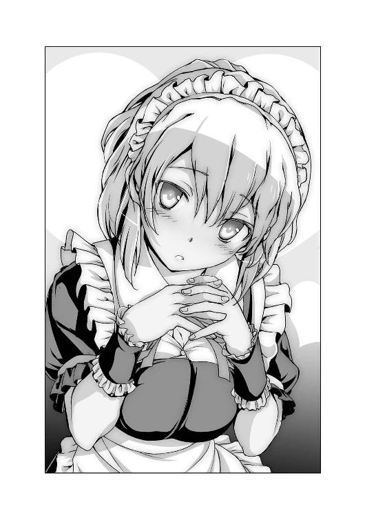
「ん？」
そこで天災は違和感に気付いた。
ダルクの何かがおかしい。
気のせいか全体的な雰囲気に差異を感じる。
普段のダルクは、見た目可愛らしい女の子である。しかしその一方で、やはり男の子なので、「こいつは男だ」と言えば、百歩譲って愛らしい男の子に見えなくもない、くらいの微小な男らしさは持っている。
しかしそれが、今はまったくない。
どこからどう見てもほわんとした女の子にしか見えない。それまであった最低限の男らしさがまったく消え、それまで以上に女性的可愛らしさが増している。
「......というか、なんだ、これは」
驚愕する天災は、ダルクのそこに両手を伸ばした。
それはダルクのふくよかな胸だった。というか、男だから膨らんでいるはずのない場所が、思いっきり膨らんでいた。
「ふにゃ」
天災に胸を揉まれ、変な声を上げるダルク。
「えっ、な、なんでぇ！」
ようやく自分の体の変化に気付いたダルクは思い切り慌てふためく。
「おい、悪魔。これはどういうことだ！」
睨みつける天災に、その一部始終をニタニタしながら見ていたバアルが答える。
「いえ、せっかくなので、ダルクちゃんの姿も変わってもらおうと思いまして」
「なんでわざわざ性別を変える必要がある？」
「もちろん一〇〇パーセント我輩の趣味です」
「何を良い笑顔で親指を立てているのだ、この悪魔は！ ふざけるのも大概にしろ！」
「天災......」
女の子っぽい自分を変えるべく、普段から男らしさを追求しているダルクは、突然の完全女子化に、呆然自失になっていた。しかしそんな自分のために本気で怒ってくれている天災の姿に、胸に熱いものが込み上げてきた。
「なぜ私よりダルクの胸の方が大きいのだ！」
「......」
前言撤回、ダルクは地団駄を踏んで悔しがる天災をなんとも残念な気持ちで見つめていた。
――閑話休題。
「とりあえず、今回の事件現場はウチの学校のようだな」
未だダルクの容姿（主に一部分の大きさ）に納得いかない天災が辺りを見回すと、視界の果てまで灰色の荒野が続く《惨劇の未来》の中に、一つの建物を発見した。
それは天災たちが通う七重島第三高等部、現実世界で、先ほどまで天災たちがいた場所である。
天災を先頭に、さっそく三人は建物の中へ移動。中もいつもの通りの学校であり、何一つ変わった箇所は見当たらない。
三学年の教室が集中する学級校舎、職員室や特別教室のみで構成され体育館も隣接している特別校舎、部活動および生徒会関連の施設が占める部室校舎、それらに囲まれた噴水つきの中庭。外には広いグラウンドと、何一つ違いはない。
「それで悪魔、今回の殺人現場はどこだ？」
「えーっと、二年Ｆ組の教室ですね」
脇に抱えていたイゾルデの封印書の白紙のページをパラパラと捲りながら答えるバアルの言葉に従い、天災たちは二階へと移動する。
「ここだな」
いつも自分たちが使っている教室の並びにある教室の前に立ち、扉の上にある《二‐Ｆ》という表札を確認する。
そして天災は扉を開き、教室の中へと足を踏み入れた。
「特に変わったところは......あっ！」
天災に続き教室に足を踏み入れたダルクが、短い叫びと共に天災の腕に引っついてきた。肘にやわらかい感触が当たりイラッとする天災も、もちろんダルク同様に、それを発見していた。
一見すれば綺麗に机が並び、なんらおかしなところのない教室。
しかしその真ん中に、机を避けるようにして誰かがうつ伏せに倒れていた。
「なるほど、そうきたか」
そこにあった死体、それはなんと《刻印の呪い》感染者である木戸隆だったのだ。
だが驚くべきはそれだけではなかった。
うつ伏せに倒れた木戸隆の右手は、手を上げたように伸びており、赤く染まった人さし指によって、床に不気味な血文字が綴られている。
「ふむ、被害者が死ぬ間際に何かを伝えようとするダイイングメッセージだな」
天災はそう納得しながらも、隣に目を向ける。そこには顔を真っ青にしたダルクが呆然と立ち尽くしていた。
ダルクが青ざめているのは死体を前にしているからではない。殺された木戸隆が死に際に残したと思われるダイイングメッセージにこう書かれていたからだ。
ホシノダルク
「なるほど、犯人は貴様か、ダルク」
「ち、ち、違うもん！」
ダルクは涙ながらに必死に訴えた。
３
前回起こった最初の事件、《刻印の呪い》に感染したのは星埜ダルクであり、犯人もまた感染者である星埜ダルクだった。
だが今回は、まったくの逆。死を生み出す《刻印の呪い》に選ばれた生贄である被害者は、その感染者である木戸隆だったのだ。《惨劇の未来》の中、天災たちの目の前で倒れ死んでいるのは、呪いが発症してしまった木戸隆の未来の姿。
つまり、このままいけば一週間後、木戸隆は何者かによって殺される、ということだ。
しかも目下第一容疑者となっているのは、隣で「ひっくひっく」と涙を流している星埜ダルクという塩梅だ。
「一応聞くが、木戸隆と知り合いか、ダルク？」
「し、知らないよ。今日初めて知った人だもの」
「ふむ、なるほど」
口元に手を当て、考えを巡らせる天災。
「なんにしても調べてみるか」
「はい、ストップ」
天災が死体に近づこうとした所で、そんな声がかかった。
そう口を挟んできたのは、悪魔バアルだった。
「なんだ、悪魔？」
「ここで一部ルールの変更を申し渡します」
「ルールの変更だと？」
「今後は天災ちゃんが死体を発見したと同時に、警察による最低限の調査結果を先に発表することにしました」
「ふん、随分と急だな」
「前回どこかの名探偵さんがろくすっぽ調べもせずに事件を解決してしまった結果、出番のなかった一部スタッフさんから苦情が殺到しましたので、そういう風に変更しました。おっと、文句は言わせませんよ、天災ちゃん。我輩がルールブックですから」
「別にかまわん。好きにしろ」
どこか呆れた表情を浮かべる天災の承諾に、バアルがにっこりと笑う。
「はい、それでは登場してもらいましょう、七重島警察署・特別青少年犯罪二課の美人警部・不動明葉奈警部の登場でーす」
ガラガラと教室後ろの扉から登場したのは、パンツスーツの美人。天災とダルクが悪い意味でよくお世話になっている不動明警部がドヤ顔で入ってきた。
「さあ、なんでも聞きなさい、名探偵ちゃん......じゃなくて、聞かれないから勝手に喋るからね、名探偵ちゃん」
前回のことがトラウマになっているのか、積極的な不動明警部。そんな胸を張る女警部を見て、ダルクが尋ねる。
「ねぇ、天災。なんでこの不動明警部、白黒なの？」
ダルクの指摘する通り、二人の前に現れた不動明警部は白黒だった。
「ああそれは、こいつがそこの悪魔が作り出したシャドー葉奈ちゃんだからだ」
シャドーとは、バアルによってこの《惨劇の未来》の中に生み出された、現実世界の住人を模した存在のこと。見た目が白黒で、バアルの与えた役どころを演じる以外は、現実世界に実在する本人たちとまったく同じ存在であるらしい。
シャドー葉奈のように、事件のサポート役をする者の他にも、証人のシャドーなどもいるらしいが、前回あっさりと事件を解決してしまった天災は、まだきちんと話をしたことがない。ちなみに前回の犯人も白黒のシャドーダルクであった。
そんなシャドーの一人であるシャドー葉奈が、早速事件の概要について語りだす。
「第一発見者は、最初にこの教室に登校してきた女子学生・松野瑞樹さん。教室に誰かが倒れているのを発見。その直後、異変に気づき、職員室へと駆け込んだ」
シャドー葉奈はそこでいったん区切る。するとガラガラと教室の扉を開けて白黒シャドーの女子生徒が教室に入ってきた。どうやら彼女が第一発見者である松野瑞樹らしい。
シャドー葉奈は続ける。
「鑑識の結果、被害者の死亡推定時刻は昨夜の午後八時から九時の間。死因は首を絞められたことによる窒息死。犯行に使われた凶器は持ち去られていたので断定できないが、おそらく紐状のモノであると考えられる。他には右側頭部に鈍器のようなモノで殴られた痕が残っている。こちらも相当強く殴られたらしく、出血の痕が見られる」
死因の説明を聞き終え、天災が尋ねる。
「シャドー葉奈ちゃん。被害者は、頭を殴られ殺されたのではなく、首を絞められて殺された、で間違いないのだな？」
「ええ、間違いないわ」
「なるほど。それで？ この教室の状況は、発見された当初のままか？」
「そうよ。通報を受けて、警察が踏み込んだ時のまま」
「つまり、それまでに何かしらの小細工があったとしても不思議はないということだな」
そう天災に睨まれ、今まで黙っていた第一発見者のシャドー松野が慌てて口を開く。
「わ、私、何もしてません！」
「では、シャドー松野殿。最初に教室に入った時に、何か変わったことはあったか？」
「うーん、いえ、特には気付きませんでしたけど」
「そうか。ちなみに死んだ木戸隆について何か知っていることはないか？」
「いえ、面識はありませんので」
「そうか」
そこで一連のやり取りを見ていたバアルが口を開く。
「とりあえず最初に提示する情報はこれだけです。それでは最後に、天災ちゃんたちに解いてもらうべき今回の謎を発表したいと思います。今回天災ちゃんに解いてもらう謎は二つです。
謎その一、犯人は誰か？
謎その二、犯人が行った犯行の説明。
以上二点です」
「それだけでいいのか？」
「というか、普通これが分かれば事件は解決では？」
「まあその通りだな」
「では後は色々と天災ちゃんたちで調べてみてください。それでは推理タイムスタートです！」
開始の合図を聞き、天災がダルクに目を向ける。
「とりあえず、私は現場を調べる。ダルクは木戸隆について調査をしろ」
「うん、分かった」
聞き込みのためにダルクが教室を出て行ったのを確認し、天災は改めて現場に目を向ける。
一見してどこもおかしな箇所の見当たらない教室。机も綺麗に並んでいて、その間に、まるで机の列を乱さないよう気を遣ったかのように、木戸隆の死体がうつ伏せに倒れている。血の付いた右手の人差し指は、真上を指すように伸びており、その指によって床に「ホシノダルク」と血文字が書かれている。
死体となった木戸隆の頭の右上部分には殴られたような痕があり、そこから額、頰へと流れ固まった血の量を見れば、相当強く殴られたと推測できる。しかしそれが木戸隆の命を奪った原因ではないらしい。死因となったのは首の周りにぐるりと残る痣。首を絞められたことによる窒息、それこそ犯人が木戸隆を殺害した方法であったらしい。
次に天災は、木戸の両手に注目、しかしこれと言っておかしなところはない。
「ふむ、他に変わった箇所はなさそうだな」
木戸の死体から目を離し、教室中を見て回る。
「ん？」
窓際で立ち止まった天災は、教室の窓の鍵が一つ開いていることに気が付いた。
そのまま窓を開けようと手を伸ばしたところで、ガラリと教室の扉が開く音に振り返る。すると、先ほど木戸隆について聞き込みに行ったはずのダルクが立っていた。
「どうした、ダルク？」
「天災、この学校、誰もいないんだけど」
ダルクの報告を受け、思わずバアルに目を向ける。
「おい、悪魔。どういうことだ？ なぜ誰もいない？」
「ちゃんといますよ、職員室に先生などが」
「では、生徒はいない、ということだな。なぜだ？」
「そりゃ、殺人事件が起こったからですよ。考えてみてください。『学校のとあるクラスで死体が発見されました。では他の教室の皆さんは普段通り授業をしましょう』なんて流れになる訳がないじゃないですか。生徒の皆さんは、先生方の指示に従い、下校。自宅待機している状況です」
「それでは誰にも話が訊けないではないか」
「いえ、大丈夫ですよ。呼べば学校に来てくれますから」
「なら、さっさと呼べ」
「分かりました。なら誰を呼びますか？」
ニヤリと笑う悪魔の問いに、天災は思わず口を噤む。
「何年何組の誰さんを呼べばいいでしょうか？ 教えてください、天災ちゃん」
「木戸隆の関係者、および容疑者だ」
「なるほど。では、それは誰でしょう？」
ニタリと笑う悪魔を、天災は睨みつける。
「最低限の情報は準備しておくのではなかったのか？」
「ですから、この教室にあるのが最低限の情報です。よく考えてくださいよ、天災ちゃん。この場所に必要な容疑者と証人を全て準備しておいてなんになるのですか？ そんな難易度の低い勝負などして、果たして盛り上がるでしょうか？」
「......なるほど、そうきたか。つまり、私たちはそこから調査しなければならない、ということか」
「そういうことです、天災ちゃん」
ニヤリと悪魔の笑みを向けられ、天災はポリポリと頰を掻く。
「仕方ない、事件の概要も確認できたことだし、今日は引き上げるとするか」
三人が《惨劇の未来》から現実へと戻ってくると、時刻はすでに夕方の六時になってしまっていた。
「ふむ、もうこんな時間か」
《惨劇の未来》は、悪魔バアルが作り出した空間ではあるが、現実と変わらず時間が流れ続けている。つまり《惨劇の未来》に滞在した時間、現実でも時間は経過しており、タイムリミットまでの時間は確実に進んでいる、ということだ。
《イゾルデの封印書》はバアルの手の中で再び手帳サイズになり、胸ポケットに仕舞われる。
「では天災ちゃんたち、我輩はこれで。何か進展がありましたら、改めて声をかけて下さいね。ああ、それと教師としてひと言。コホン。『お前ら、寄り道しないで帰れよ』」
「うるさい、さっさと消えろ、このエセ悪魔教師」
「それは違います、天災ちゃん。我輩は、悪魔エセ教師です」
「いいからさっさと消えろ！」
憤慨する天災の表情に満足したのか、悪魔バアルはクスクスと笑いながら去っていった。
人気のない教室に取り残された天災とダルク。
「これからどうするの、天災？」
「とりあえず木戸隆に関する情報を集めるしかないな」
「でもなんだか変な感じだね。一週間後に起こる事件について今から色々と調べ回るのって」
「確かに特殊なケースだな」
「でもさ、一週間後の殺人事件の概要は大方分かったんだから、こっちの現実で、あらかじめ事件が起こらないように手を打つこともできるんじゃないかな？」
このままいけば一週間後、木戸隆が誰かによって殺されることは確定している。ならその日、その時間にそうならないように、何かしらのアクションを起こせば、事件は回避できる。
そう考えるダルクの提案に、天災は難しい表情で首を横に振る。
「それは不可能だな。《刻印の呪い》に感染した感染者がタイムリミットを迎えて発症してしまったら最後、必ず誰かが死ぬまで呪いが解けることはない。つまり、一週間後の事件を回避したところで、すぐに別の事件が起こる、ということだ」
「あっ、そういえば、二番目のルールにそうあったね」
「我々がしなくてはならないのは事件を回避して、事件が起こらないようにすることではない。あくまで、《刻印の呪い》感染者の呪いを解くことにある。《惨劇の未来》へと訪れ、事件を解決する、という方法を使ってな」
「なるほど」
「とにかく明日からが本番だな」
事件発生まであと六日――
４
翌日の放課後、天災とダルクは、誰もいない二年Ｆ組の教室にいた。
まだ事件の起こっていない教室、しかしこれから六日後、この教室には木戸隆の死体が転がることになる。
「ところで、天災。今日はどこに行っていたの？」
昼休みから姿を消し、午後の授業を全てサボった天災に、ダルクが尋ねる。
「少し気になったことがあったのでな、あの悪魔に言って《惨劇の未来》へ行ってきた」
「気になったこと？」
「事件が起こったのは、死体発見の前日夜の八時から九時の間。その時間、この第三高等部はどういった状況だったのかを調査してきた」
「だけど、あの《惨劇の未来》には誰もいなかったはずでしょ？ どうやって調べたの？」
「教師陣はいるという話だったからな。まあ、そうはせずにシャドー葉奈ちゃんに話を聞いたのだがな」
「えっ、でもシャドー葉奈ちゃんさんは、そんなことひと言も......」
「昨日、あの悪魔は『最低限の情報を先に提示する』と言った。そしてシャドー葉奈ちゃんの役割は、警察が調査した情報を私に伝えることだ。事件があった時間が割り出されているのだ。その時間の現場の状況を警察が把握していない訳がない」
「あっ、確かにそうだね。でも、だったらなんでシャドー葉奈ちゃんさんは教えてくれなかったのかな？」
「単にあの悪魔の引っかけだ。『知りたければ聞け』というな」
「よく気付いたね、天災」
「あんな悪魔の引っかけなんぞに引っかかるか」
「それで、木戸くんが殺された八時から九時の間、学校はどういう状況だったの？」
「普段は夕方六時から戸締まりも兼ねて警備員が学校を巡回し始めるそうだ。警備員は定時の見回りがある以外、宿直室で待機。巡回の見回り方としては、廊下から各教室の中を覗いていくだけのようだったから、綺麗に整頓された机の間に隠れるようにして倒れていた木戸隆には気付かなかったそうだ。それとは別に残業の教師が数人いて、職員室で仕事をしていたらしい。職員室も宿直室も事件のあった学級校舎ではなく、隣の特別校舎内にあるから、その時間、特に異変には気付かなかったそうだ」
「なるほどね。他に残っていた生徒はいなかったの？」
「いなかった、とは断言できないそうだ。ほぼ毎日、遅くまで部活動で部室校舎に残っている生徒も少なからずいるらしい。本来なら届出が必要だが、それをせずにこっそりと残っているのが大半だそうだ。教師サイドとしても、部室校舎については完全に生徒会主導で任せているから口出しはしてないらしい」
「つまり事件の夜、部室校舎だけは警備員さんも先生方も完全にノータッチだったってことだね」
頷く天災。
「次に犯人の犯行後の脱出ルートについても調べてみた。木戸隆が殺されていた二年Ｆ組の窓が一つ開いていた。さらに、その窓の下にある芝生に、強く踏みつけられたような足跡があった。飛び降りた際に犯人が残した足跡だと考えられる」
「二年Ｆ組の教室はボクたちの教室同様に二階にあるから、窓から飛び降りて脱出することは十分可能だね。後は夜の闇に紛れて学校から脱出したってことかな？」
「おそらくな」
「そうなると、なんで木戸くんは二年Ｆ組の教室で殺されたのか？ っていうのが引っかかるね」
「なぜそう思う？」
「だって木戸くんは二年Ｅ組の生徒でしょ？ それなのに殺されていたのは隣のＦ組の教室、これってなんか変だよね？」
そうどこかにこにこしながら語るダルク。そんなダルクの表情に、天災は眉を顰める。
「どうした、ダルク？ なぜそんなにえっちぃ本を見たような笑みを浮かべている？」
「そ、そんな表情してないもん！」
「ではなんだ」
「......ふふっ」
むぎゅ
思いっきりダルクの頰を抓る天災。
「ご、ごめんなはい！ ひょうひにのりはした！」
涙目で謝罪するダルクを解放し、天災は思い切り睨みつける。
「それで？ なんだ？」
「そ、そのね。もしかしたらボク、犯人分かっちゃったかもしれないんだ」
恐る恐る語るダルクに、天災は「ほう」と目を細める。
「面白そうだな。その話、聞かせてもらおうか？」
「うん。あっ、でもまずはボクの調査してきたことを聞いて」
「いいだろう、聞かせてもらおうか」
ダルクはポケットから可愛いピンク色の手帳を取り出し、調べたことについて語りだした。
「えっと、まずは一週間後の事件の被害者である木戸隆くん。知っての通り二年Ｅ組の生徒だね。周りからの評判としては誠実で真面目な好青年。あと衛生美化委員をしているんだって」
「なんだ、それは？」
「学校の環境美化をしている委員会だね。校内にある花壇の手入れをしたり、校内美化を呼びかけるポスターを張ったり、ゴミ箱なんかの備品設置もそうだね。あと島内清掃のボランティア活動を企画したりしているんだって。委員会の集まりは月一回、主な仕事は毎日の花壇の水やりや手入れで、これは当番制らしいよ。ちなみに木戸くんの次の当番は二週間後だから、これは事件とは関係なさそうだね」
「随分と詳しく調べたな。他には？」
「後は部活で超常現象調査部に所属しているんだって」
「また随分と怪しそうな部活だな」
「七重島にある学校ならではの変な部活の一つだね。活動内容は読んで字の如く、不思議な出来事の調査をしているんだって。主に部室での資料集め、よくフィールドワークにも出るらしいよ」
「なるほどな」
「それでね、木戸くんは最近彼女ができたんだって」
「......」
「同じ衛生美化委員会に所属している弓月恵さんって子でね。とっても明るくて可愛いんだけど、気の強い所が玉に瑕。でもそういうところも嫌いじゃないって......」
「おい、ダルク」
「ん、なに天災？」
「気のせいかもしれないが、なんだかずいぶんと木戸隆の主観の入った意見のような気がするんだが？」
「うん、だってこれ、木戸くん本人に聞いたから」
にこやかなダルクの言葉に、天災は絶句した。
「ど、どういうことだ！ なぜ調査対象に直接話を聞いている！」
「その方が色々と分かると思って」
「だからと言って被害者に......って、そうだったな。木戸が死ぬのは一週間後だったな」
「うん、そういうこと」
「まったく、これから死ぬ人間とお近づきになるとは......なるほど、それであのダイイングメッセージか」
「？ 何か言った、天災？」
「いや、なんでもない。続けてくれ」
「まあ、あとは世間話をした程度のボクの印象だけど、とっても優しい人だったよ。動植物とかが好きらしくて、花壇のお花のこととかも色々と教えてくれたんだ」
「本当に本人から聞いたようだな」
「でもね、木戸くんとお話ししていたら、彼女の弓月さんがやってきたんだ。それですっごくボクのこと睨みつけてきたから、怖くなって思わず逃げちゃった。でもその後、こっそりと二人の様子を見ていたら、弓月さん、木戸くんにとっても怒ってたんだ」
「まあ、彼氏が他の女と喋っていたら、彼女としていい気はしないだろうな」
「ボ、ボク男だもん！」
ぷんすか、と頰っぺたを膨らますダルクは、やっぱり女の子にしか見えない。
「それで？」
「確かに勘違いされちゃったかもしれないけど、それでもあれはやり過ぎだと思う。弓月さん、喚き散らして、木戸くんのこと思い切り叩いていた。やっぱり暴力はいけないよ」
「ふむ。だがそうなると、その弓月恵についても詳細が知りたいところだな」
「そう言うと思ってついでに調べて来たよ」
「なかなか手際が良いではないか、ダルク」
天災に褒められ、頰を赤くしてはにかむダルクは、弓月恵について語りだす。
「弓月恵さん、部活は特にやっていない。結構ズバズバ物事を言う、木戸くんとは正反対のタイプみたいだね。付き合うきっかけも弓月さんから告白したみたい」
「積極的だな」
「そして問題なのが、彼女のクラス。なんと弓月恵さんは二年Ｆ組なんだ」
つまり一週間後に殺される木戸隆は、彼女である弓月恵のクラスで殺される、という訳だ。
「なるほどな」
「ボクが調べてきたことは以上かな」
「では聞かせてみろ、ダルクの推理とやらを」
天災に促され、手帳をポケットにしまったダルクが、満を持して自分の推理を語りだした。
「あのダイイングメッセージは、木戸くんが死に際に残したモノじゃなかったんだ。弓月さんがボクの犯行に見せかけるためにやったことなんだと思うんだ」
「......」
「まず弓月さんは、二年Ｆ組の教室で木戸くんと口論になった。そして怒りにまかせて木戸くんを何か鈍器のようなモノで殴りつけ、昏倒させた。その後、すぐに紐状のモノで首を絞め殺害したんだ」
「その根拠は？」
「《惨劇の未来》での二年Ｆ組の教室は綺麗に整頓されていて、特に争った形跡はなかった。それはたぶん、弓月さんが、木戸くんを抵抗されない状況にしてから殺害したからだと思ったんだ。だってそうでしょ？ もし首を絞められたら必死に抵抗するはずなんだ。だけど木戸くんが抵抗したような形跡は見られなかった」
「なるほど、確かにそれなら頭の傷も説明がつくな」
「問題はその後、木戸くんを殺してしまった弓月さんは、誰かに犯行をなすりつけようと考えた。そこで白羽の矢が立ったのが、木戸くんと話をしていたボクだった」
「ほう、なぜダルクを犯人の身代わりにしようとしたのだ？」
「たぶんだけど、今日ボクが木戸くんと仲良くお話をしていたからじゃないかな？」
その一見矛盾するダルクの言葉に、天災は難しい表情を浮かべる。
「ふむ、そうなると、やはりこれは些か特殊な状況だな」
「うん、ボクもそう思うんだ。ボクが木戸くんと仲良くお話ししたのが今日、そして事件発生は今から六日後」
「時系列的には矛盾していない。だが......」
「そう、ボク達の認識では逆なんだよね。木戸くんが六日後に亡くなると知ったのが先で、ボクが木戸くんと仲良くなったのが後、なんだ」
事件が発生すると知ったから事件を調べ始め、ダルクは木戸と仲良くなった。だが、その結果、ダイイングメッセージに名前を使われることとなった。まさにタマゴが先かニワトリが先か、である。
「まさにファンタジーだな、この事件は。いや、未来の殺人を先取る《惨劇の未来》を行き来する以上、あの悪魔との推理勝負では、これは当たり前の事象の一つということか」
「普通の事件とは完全に異なる部分だね」
「まあいい、とにかく今は起こった事実だけで事件を検証すべきだな。私たちが推理する立ち位置は、あくまで今から六日後に起こる殺人事件後だ。そこから振り返った時、六日前（つまり今日）に、たまたま木戸隆と星埜ダルクの仲が良さそうな会話を見ていた弓月恵が嫉妬した。そこで木戸隆殺害後、星埜ダルクを犯人に仕立て上げようとした。これでいいな」
「うん」
「なら続きを話せ」
「えっと、木戸くんを殺してしまった弓月さんは、木戸くんの頭から流れた血を使い、木戸くんの指を使って、床にボクの名前を書いた」
「それにより、あのダイイングメッセージができた、というわけか。ならあのメッセージが木戸の書いたモノではない根拠はなんだ？」
「だってあんな目立つダイイングメッセージ、犯人が見逃すはずがないよ。もし見つけたら絶対に消そうとするはずだもん。それに何より、木戸くんは頭を殴られて昏倒した後、首を絞められて殺されたんだよ？ その死に際にあんな文字が書けるわけがないよ」
「確かに道理だな」
「後は天災が調べたように、窓から外に飛び出し、学校から脱出した。つまり......」
「つまり？」
「犯人はあなたです、弓月恵さん」
しゃきーん、と指さす、星埜ダルク。ちなみにそこには誰もいない。
むぎゅ
そしてその頰っぺたを思いっきり抓る天災。
「おいダルク、貴様。それはいったい誰の真似だ？」
「ほ、ほへんなはい。ひょうひに、のりはした」
「だがしかし、推理としては悪くないな」
「えっ、本当！」
「ああ、ダルクの推理は満点この上ない......」
天災の褒め言葉に、ダルクは嬉しさのあまり目を輝かせる。
だが、
「......犯人的にはな」
その後に続いたそのひと言に、喜びの笑顔はすぐに驚きの表情へと変わった。
「えっ？」
「ちなみにダルクの推理を後押しするように、事件後、弓月恵の下駄箱から上履きが消えていた。窓の下に残っていたのは、上履きの跡だった。おそらく飛び降りた際についたものだと考えられる。靴裏の形は全校生徒共通だが、靴のサイズに差がある。そこに残っていた上履きのサイズは二四・五。弓月恵の足のサイズと一致している。しかも事件のあった時間、一人暮らしの弓月恵には確かなアリバイはない」
「ちょ、ちょっと待ってよ、天災！ なんでそんなこと調べているの？ だって天災は弓月さんのことを知らないはずじゃ......」
「いや、知っていた」
「な、なんで？」
「今日の昼休みから行っていた《惨劇の未来》で聞いたのだ」
「で、でも学生は誰もいないはずじゃ」
「だからバアルに呼ばせたのだ。Ｅ組の男子生徒を全員な」
「ぜ、全員!?」
「それだけいれば木戸の友人の一人や二人は紛れていると思ってな。案の定、いたな。しかも五人もな」
「へぇ、仲良しな友達がいっぱいいるんだね、木戸くん」
「そいつらに話を聞いて、木戸隆には二年Ｆ組の弓月恵という彼女がいると知った。そこでさらに弓月恵を呼び出し、いくつか質問をぶつけてみた。それで分かったことが、今言ったことだ」
「じゃあもしかして、天災はすでにボクがした推理に辿り着いていたってこと？」
「まあもっとも、なぜ弓月恵がダルクをスケープゴートにしようとしたのか、という理由までは分からなかったがな。ちなみにシャドー弓月は『あのダルクって子が隆を殺したからよ！』と涙ながらに語っていたぞ。正直あの涙が本物か偽物か、私には判断しかねる」
「なんだぁ」とちょっとがっかりするダルク。
「ふん、この私がダルク如きの考えることに辿り着けないとでも思ったか」
踏ん反り返る天災。
「じゃあさ、天災。犯人は弓月恵さんじゃないと思っているの？」
「それも否定はできない。なにせ弓月恵が犯人である証拠は揃っているのだからな。単純にまだ情報が全て揃っていないだけだ」
「じゃあ、この後は何を調べる？」
「とりあえず、木戸隆と弓月恵が所属する衛生美化委員会、ついでに木戸が所属しているという怪しげな部活についても突いてみるか」
事件まであと五日――
５
次の日の放課後、天災とダルクはある人物に会うために、正門から校舎までの間にある花壇に向かって歩いていた。
「えっと、木戸くんと弓月さんと同じく衛生美化委員会に所属している二年生の清水拓馬くん。清水くんは、ひと月くらい前、弓月さんに告白してフラれちゃったんだって。だから木戸くんを恨む気持ちがあると思うんだ」
可愛いピンクの手帳を開き、調べてきた情報を語るダルクに、天災は「ふん」と鼻を鳴らす。
「それが木戸を殺す動機になりえる、ということか。確かに《刻印の呪い》関連の事件だ。何が事件の引き金になるか分かったものではないからな」
バアルが提示した五番目のルールにもある、《刻印の呪い》が発症したことによる《感染者》の心境の変化。それは抑えきれない殺人衝動の誘発、無意識に事件に直結する行動を引き起こしてしまう、といったことらしい。具体的にそれらがどのようなことを指すのかは分からないが、感染者が普段なら絶対にやらない、人の恨み辛みを刺激する悪意ある行動であると予想できる。
今回のことで当てはめるなら、呪いが発症した木戸は、犯人の殺意を刺激するような何かしらの行動を取り、結果犯人に殺された、と推測できる。
「ボクが調べた限りじゃ、衛生美化委員会の中で木戸くんと弓月さんに対して強い感情を抱いているのは清水くんだけだと思うんだ」
「なるほどな」
「あっ、あそこにいるのが清水くんだよ」
花壇に水撒きをしている男子生徒を指さすダルク。どうやらそれが清水拓馬らしい。しかしそれだけではなかった。
「それに......木戸くんと弓月さんもいるね」
清水拓馬と少し離れた場所で、花壇の手入れをする木戸隆と笑顔を浮かべる弓月恵がお喋りをしているのが見えた。
「おかしくないか、ダルク？ 確か木戸隆の掃除当番は二週間先ではなかったのか？」
「確かにそのはずなんだけど？」
手帳をパラパラと捲り、首を傾げるダルク。
そんなダルクを置いて、天災は一人清水拓馬に近づく。
「清水拓馬だな」
水やりを中断した清水が、不審そうな目を向けてくる。
「だれ、キミ？」
「壱級天災、名探偵だ」
「め、名探偵？」
「清水拓馬、尋ねたいのだが」
「何かな？」
「美化委員会の本部はどこにある？」
「？ 本部、って何？」
「活動拠点となる場所のことだ。毎回委員会などを開く場所や備品を管理しておく場所はどこかと尋ねている」
「いや、そんなのはないよ。月一の委員会は、その都度、生徒会から借りた会議室を使うし、委員会で使う紙や色ペンなんかも生徒会から支給されるから。こういう手入れ道具なんかは物置にまとめてあるね。ほら、そこの水場の隣にあるだろ」
「あの小さいヤツか？」
「そうだよ。道具をしまうだけだからあれで十分だよ」
「そうか。ところでもう一つ尋ねるが、あの弓月恵という女はなぜ掃除をしない？」
先ほどから木戸と楽しそうにお喋りをしている弓月。しかし弓月はただ喋っているだけで、何か作業をしている様子はない。
「ああ、爪が汚れるのが嫌なんだって。だからああして、自分の仕事を木戸にやらせているんだよ」
「なるほど、いつもああなのか？」
「そうだな。あまり汚れるのが好きじゃないらしいから。それでも弓月は可愛いし人気があるから、なんだかんだで何もしなくてもいいみたいになっているよ。それに今は弓月の代わりに木戸が働いているから誰も文句を言うヤツはいない。単に呆れているだけなんだろうけどさ」
「たしか木戸隆は弓月恵の彼氏だったな」
「ああ、つい最近付き合いだしたんだと。なんでも弓月は木戸のことを『優しいところが好き』とか言って付き合うことになったらしい」
どこか不機嫌そうに答える清水。
「なるほど、確かに優しさは重要な要素だな」
「もっとも、俺に言わせればあんなのは優しさでもなんでもないけどな」
「というと？」
「あいつはただ良い格好がしたいだけだ。あんなのは本当の優しさなんかじゃないね」
「ふむ、そういう考えもあるか。ちなみに清水拓馬は弓月恵のために何かしてやらなかったのか？」
「なんで俺が？」
「告白してフラれたと聞いたぞ？」
そのひと言に、清水が天災を睨みつける。
「......あんた、なんなの？」
「だから名探偵だ」
「なんでそんなこと聞くんだよ？」
「名探偵だからだ」
「訳が分からねぇよ」
「それで、どうなのだ？」
しつこく尋ねる天災の問いに、清水は不機嫌そうに木戸と弓月を見つめる。
「別に、俺は何もしない」
「そうか」
「俺は何もしない弓月に、『ちゃんと仕事をやれ』って注意して嫌われた。それだけだ」
「なるほどな」
「もういいか？」
「ああ参考になった」
そのまま清水の元から離れた天災に、ダルクが慌てて近づく。
「ちょっと天災、あんな聞き方しちゃダメだよ。清水くんのことも考えなきゃ」
「ふん、知らん。あれが私のやり方だ」
「だから天災はいつもちゃんとお話ししてもらえないんだよ」
「そんなことはない、今回はばっちり話を聞けたぞ」
「そうだね、本当に今回は、たまたまね」
その傲慢さで自分の知りたいことだけを相手に直球で尋ねる天災の情報収集。その失敗の歴史の数々を思い出し、代わりに情報収集担当となった助手はため息を吐く。
「さて、それでは次は木戸に話を聞くか」
「えっ、木戸くんにも？」
戸惑うダルクを置きざりに、今度は楽しそうに話している木戸隆と弓月恵の元へと向かう、天災。
「おい、木戸隆」
声をかけられ、顔を上げる木戸。
「あんた、誰よ？」
そう聞き返してきたのは、木戸の隣にいる弓月恵。その表情は明らかに「むっ」としている。
「貴様が所属しているという超常現象調査部に興味がある。今から案内しろ」
突然現れた女の子が言いだしたことに、驚きの表情を浮かべる木戸。
「ちょっと、あんたいきなり何言ってんのよ！ 隆は今委員会の仕事で忙しいのよ！」
「それは貴様の仕事だろう、弓月恵。だったら貴様がやれ」
「何よ、あんた、急に来たくせに、ムカつくわね！」
立ち上がり威圧的に睨みつけてくる弓月。しかし天災は臆することなくその視線を受ける。
「ちょっと、恵ちゃん。喧嘩は止めよう」
「そうだよ、天災。落ち着いて」
二人の間に、木戸とダルクが慌てて割って入る。
「あれ、星埜さん？」
「あっ、こんにちは木戸くん。昨日はお話聞かせてくれてありがとうございます」
そうにっこり笑うダルクの笑顔に、木戸は恥ずかしそうに俯く。
「ちょっと、隆。なにデレデレしているのよ！」
その様子に、弓月は木戸の肩にパンチを入れる。
「痛っ。いや、誤解だよ、恵ちゃん！」
「ふん、もう知らない。好きにしたら？」
そう怒って、弓月恵はさっさとどこかへ行ってしまった。
「すいませんでした、木戸くん」
委員会の仕事を終えてやってきた木戸隆に、ダルクは深々と頭を下げる。
「ほら、天災も謝らないと」
「ふん、私は気に入らないモノは気に入らないと言う性質だ」
「うん、それは痛いほどよく知っているけどさ......」
「いいんです、気にしないでください」
そう笑顔を浮かべる木戸。
「それにしても、あの女はいつもああなのか、木戸隆？」
「何がですか？」
「殴られていたように見えたが？」
「ああ、いつものことなので、僕は大して気にはしていません」
「そうですか、ボクは気にしますけどね」
「貴様はひと言多いぞ、ダルク」
「痛い、痛いよ、天災！ 耳は引っ張らないで！」
「言っておくが、私はあの女とは違うからな！」
ダルクの耳を引っ張りながら、胸を張る天災の言葉には、イマイチ説得力がなかった。
「えっと、とにかく部室に案内しますね」
そう歩き出した木戸の案内で、天災たちがやってきたのは、部室校舎の三階にある一室、ドアに《超常現象調査部》と書かれたプレートの掛かった部屋だった。
中はそれなりの広さがあったが、あまり綺麗に整頓されているとは言い難い。本が床に積み上がり、代わりに棚に収まっているのは、変な形の土偶に、その辺に転がっていそうな大きな石、亀の入った水槽まである。
「おや、珍しいな。木戸以外にこの部屋に誰かが来るのは」
その声の主を見て、ダルクはおろか天災ですら見惚れてしまった。
そこには絶世の美少女がいた。絹のような黒髪、どこか神秘的なとろんとした瞳と長いまつ毛。どれ一つとっても完璧で、そこにいるのは、まるで美しく造形された人形のようだった。
「噂通り、凄い美人だ」
「ダルク、彼女を知っているのか？」
「うん、三年の伏見妃凜先輩。第三高等部一の美人で、スポーツ万能、成績優秀。非の打ち所がない才色兼備だって、もっぱらの噂だよ」
「それで？ キミたちはいったい何奴なのだろうか？」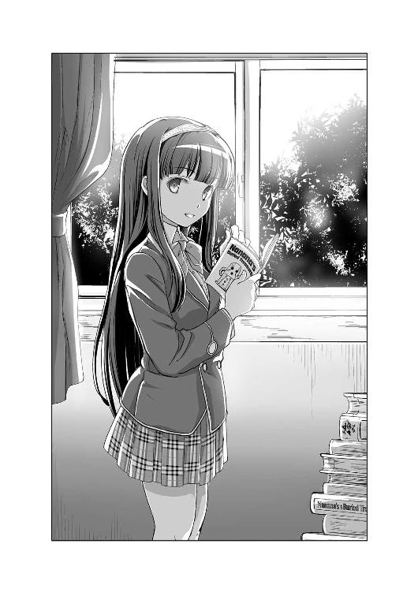
噂に違わぬ容姿を持つ伏見妃凜が、「ぽーっ」とした表情で二人に尋ねてくる。
「失礼した。私は二年生・壱級天災、名探偵だ」
そうビシッと自らを指さす、天災。
「そうか。妃凜は三年の伏見妃凜、探究者だ」
堂々と名乗り返す伏見妃凜は、シニカルな笑みを浮かべた。
そう互いに一歩も譲らぬ二人の姿に、ダルクがポツリと呟く。
「噂通りだ。伏見先輩は、超絶美人なだけじゃなく、ちょっと変な性格をしているから近寄りがたいオーラが半端ないっていう噂、本当だったんだ」
「そちらの彼女は？」
「星埜ダルクさんです、妃凜先輩」
そう答えたのは木戸だった。
「木戸、妃凜はキミに聞いてはいない。彼女に聞いているのだ」
そう睨まれ、木戸は「すいません」と苦笑し、ダルクを促す。
「えっと星埜ダルクです」
「して、肩書は？」
「か、肩書、ですか？」
「そちらは名探偵。妃凜は探究者だ。ならキミはなんだ？」
「えっと......特には」
「ふぅ、つまらんな」
不機嫌そうにため息を吐く、伏見妃凜。
「す、すいません」
「まったくだ、もっと気の利いたことは言えないのか、この付き人は？」
「て、天災まで！」
「伏見殿。そいつは私の助手だ」
そう天災が答えた瞬間、「ほぅ」と伏見の瞳に興味の色が灯る。
「名探偵に、その助手か。なるほど、確かにこれは面白い組み合わせだな。して名探偵とその助手が、妃凜の城になんの用だ？」
「先日、うちの助手がそこにいる木戸隆と懇意になってな。たまたまこの部活の存在を知り、興味を持ったので話を聞きにきた、という訳だ」
「ほう、そうか木戸。キミはつい最近彼女を作っただけでは飽き足らず、今度はふた股までやらかそうというのか。なかなか豪胆な男ではないか。妃凜は些か感心したぞ」
「ち、違いますよ、妃凜先輩。誤解ですって」
「さて、そんな木戸のみっともない言い訳を無視して、名探偵とその助手の問いに答えるならば、この部活は、妃凜が興味のあることをとことん追究することを目的とした部活だ。よって活動内容は、『この伏見妃凜の琴線に触れた事象の追究』にある」
「ほう、たとえば？ どのようなことを？」
「そうだな、目下取り組んでいる課題は、『目の下にできるクマは、どこまで濃くなるか？』ということだ」
「......」
「ちなみに現在、妃凜は二日ほど完徹している。はっきり言って眠くて死にそうだ」
「......」
「それでどうだ、木戸？ 妃凜の目のクマは濃くなったか？」
自らの目の下あたりを指さす伏見に、木戸が戸惑う。
「いや、僕にはちょっと判断しかねますが......」
「そういうことは、もっとはっきりと妃凜の目の下にあるクマを見てから言え」
そのまま鼻がくっつきそうなほど顔を近づけられ、真っ赤になった木戸は慌てて目を逸らす。
「せ、先輩！ 近いです、近すぎです！」
「だからなんだというのだ、木戸？ いいから妃凜の二日目のクマの濃さのチェックをするのだ」
そんな超常現象調査部・部員二人のやり取りを見ていた天災がポツリと呟く。
「おい、ダルク。あの女、何か変だぞ」
「えーっ、天災がそれを言うの！」
まさかのひと言に、ガチで叫ぶダルクの頰を、天災は思いっきり抓った。
「妃凜先輩は、今みたいにちょっとおかしな検証もよくしていますけど、面白そうなことも色々とやっているんですよ」
そう言って、木戸は天災とダルクに一枚の写真を見せてくれた。
「去年、『夜になると七重島東の沖合に謎の光が発生する』っていう噂が流れたことがあったんです。噂の内容はマチマチで、それは謎の海洋生物に違いない、某国の新造潜水艦だ、いやいやＵＦＯが海底探索をしているんだ、なんてモノもありました」
確かにその夜の海を撮った写真には、青白い光が浮かび上がっていた。それは夜空に浮かぶ月でも星でもない。大きく楕円形に広がったナニカだった。
「うわっ、凄い。とっても綺麗ですね」
目をキラキラと輝かせるダルク。
「僕もそう思って、こうして写真を撮りました」
「それで、この正体はなんだったんですか、木戸くん？」
「ホタルイカの群れでした」
「ホタルイカ、ですか？ あの食べる？」
「はい、ホタルイカの名前の由来はこうして夜になると青白い発光をするからなんです。でも普段はもっと海中の深くにいますし、ましてやこの辺りが生息地でもないはずなんです」
「じゃあなぜ？」
「妃凜先輩の見解ですが、昨今の異常気象、海流の変化によって、偶然ホタルイカの群れが七重島まで流れてきたのではないか、ということでした。ですから、今はもう見られません。あの時の光景は、今やこの写真と僕と妃凜先輩の思い出の中だけにあるんです」
かつての記憶を思い返すように語る木戸の話に、ダルクは「へぇ」と聞き入っている。
「なるほど、つまりこの部活は、そういうゴシップネタを暴き、白日の下に晒すことを主体とした部活、ということか」
情緒もへったくれもなく尋ねる天災に、木戸は首を横に振る。
「いえ、発表はしません。原因を突き止めてそれで終わりです」
「なぜだ？」
「意味がないからだ」
天災の疑問に答えたのは、伏見だった。
「どういうことだ、伏見殿？」
「謎は解くまでが楽しい。解いたらそれで終わりでいい。わざわざ吹聴する意味はない」
「それでは調査する意味などないではないか」
「意味はある、妃凜がその理由を知ることができる。それ以外のことをするつもりはない」
「だが......」
「超常現象とは、言ってしまえば、得体の知れないモノだ。理解の範疇にないからこそ、恐ろしいし、面白みもある。だが、その原因を突き止めれば、それも終わりだ。不確定が確定し、ただのありきたりな事象と化す」
「なら、自らの手でその謎に終わりを告げるのが......」
「そんなのは自己満足だというのが、妃凜の考えだ」
「なん、だと？」
「もし妃凜が事実を白日の下に晒したとしよう。その瞬間、その超常現象は超常現象ではなくなる。そうなればその超常現象に憧れや楽しみを抱いていた者たちの喜びを奪うことになる。そういうことを妃凜はしたくない」
「それは限られた一部に向けられた意見だな。事実を白日の下に晒すことで、解答を知り、満足する者はごまんといる」
「それこそ偏った思考だな、名探偵。それは傲慢というものだと妃凜は考える」
「ふん、探究者が聞いて呆れるな、伏見殿。今からその肩書きは、ロマンチストに変えることをお勧めするぞ」
ニヤリと皮肉めいた笑みを浮かべる天災に、伏見は「ぽーっ」とした表情を浮かべる。
「......それもいいかもしれないな」
「な、なに？」
「しかし、自らをロマンチストと名乗るのは、なんだかイタイ人間な気がするので、妃凜はちょっと恥ずかしいと思う。さてどうするか？」
そう考えを巡らせる伏見に、さすがの天災も言葉を失った。
そんな二人の姿を見ていたダルクと木戸がヒソヒソと小声で話す。
「本当に変わった人ですね、伏見先輩って」
「いわゆる天才肌っていう人だと思うんです」
「あっ、分かります。そういう人が身近にいるので（チラリ）」
「うん？ 何を見ているダルク？」
「ううん、なんでもないよ、天災」
慌ててごまかすダルク。
「ところで木戸。最近、木戸の部活への出席率があまりよくないと妃凜は感じているのだが？」
「すいません、ちょっと忙しくて」
「まあ、彼女と仲がいいのは良いことだ。それにキミがいなくても妃凜としては特に問題はないがな」
どこか不機嫌そうにそっぽを向く伏見。
「随分な言われようですね、木戸くん」とダルク。
「まあ実際、この部活は妃凜先輩が一人で始めて、一人で活動している部ですから。僕は時々そのお手伝いをさせてもらっているだけです」
「そうなんですか？ ......ああ、そういえば、木戸くんはどうしてこの部活に入ろうと思ったんですか？」
「一年生のころ、たまたまフィールドワークをしている妃凜先輩と出会って、同行させてもらったんです。それからですね、妃凜先輩の調査に興味を持ったのは」
「まあ妃凜の探究に理解を示すその殊勝な心がけだけが、妃凜が唯一木戸を評価しているところではあるな」
「それはありがとうございます」
「というわけで、木戸。今から一〇日後の予定は空けておくように」
「またフィールドワークですか？」
「その通りだ。木戸にも天が墜ちてくる情景を見せてやろう」
天井を指さし、なんだか世紀末な発言をする伏見妃凜は意味深な笑みを浮かべた。
《超常現象調査部》を後にした天災とダルクは、そのまま帰路についた。
「それで、何か分かった天災？」
「ああ、だいたいのことは分かった」
「えっ、本当に？」
「というわけで、明日の放課後、《惨劇の未来》に向かうぞ、ダルク」
事件まであと四日――そして事件は解決へと向かう。
６
次の日の放課後、中庭で女子高生と放課後トークを楽しんでいたバアルの首根っこを摑まえた天災たちは、バアルを体育館裏まで引っ張っていき《惨劇の未来》へと向かう。
《惨劇の未来》の中に出現した第三高等部に入り、天災が気になるといういくつかの場所を回った後、再び事件現場である二年Ｆ組を訪れた天災とダルク、それにバアル。
現場には相変わらず死体となった木戸隆がうつ伏せに倒れていて、部屋の隅にはシャドー葉奈と第一発見者であるシャドー松野が立っている。
「それで、天災ちゃん。誰を呼びましょうか？」
「弓月恵、清水拓馬、そして伏見妃凜だ」
バアルの問いに、天災は三人の名前を挙げる。
「分かりました」
そう言って、パチンと指を鳴らすバアル。
すると、ガラガラという音と共に、二年Ｆ組の教室に、弓月恵、清水拓馬、伏見妃凜がぞろぞろと入ってきた。もちろん全員シャドーであり、白黒だ。
そんな面々に、早速天災が尋ねる。
「木戸隆が殺された昨夜の八時から九時までのアリバイについて聞こうか」
直球な天災の質問に、まずはシャドー弓月恵。
「あんたには、前にも話したけど、一人で家にいてテレビを見ていたわ」
先日、《惨劇の未来》を一人訪れた天災が聞いたのとまったく同じ証言。つまりアリバイはなし。
次にシャドー清水拓馬。
「俺は、学生寮の部屋にいた。うちの寮は門限があるから八時以降は寮から出られない。基本部屋にいたけど、共同のトイレにも行ったから、たぶん俺を見ているヤツはいるはずだ」
断言はできないまでも、アリバイがありそうである。
最後にシャドー伏見妃凜。
「特にないな。理由は弓月クンと一緒だ。妃凜のアリバイを立証する人間は誰もいない。故に証明は不可能だ」
自らにアリバイがないと語る。
「ふむ、参考になった」
「それで、名探偵？ これからいったい何が始まるのかな？」
「もちろん、今回の事件を暴き、犯人を晒すつもりだ、探究者殿」
ニヤリと笑う、天災。
そこで悪魔バアルがひと言、
「では解決タイムの始まりですな。......それにどうやら、今回は我輩が口出しする必要はないようですね」
そんなバアルの意味深な言葉を皮切りに、名探偵・壱級天災の推理が始まった。
「まず注目すべきは、やはりこのダイイングメッセージだ」
死体となった木戸の右人さし指によって床に残された「ホシノダルク」という赤い文字。
「だからその星埜ダルクが犯人でしょ！ その子が隆を殺したのよ！」
憎しみを込めた瞳でダルクを睨みつけるシャドー弓月が叫ぶ。
「しかしそれは些か無理がある。犯人は木戸の頭を殴った後に首を絞めて殺している。故に殺された木戸に、こんなダイイングメッセージを残せるわけがない。第一これだけ目立つモノだ。犯人がこれを放置するとは考えにくい。よってこれは殺された木戸が残したモノではない」
「つまり意図的に残された、ということか、名探偵？」
「その通りだ、シャドー伏見殿。これは犯人の仕組んだものである可能性が高い」
「そうなると、目をつけるべきは別の箇所、というわけだな」
「そういうことだ。ではこの推理を、仮に《ダルク説》と呼んでおこう」
「えっ、ボクの名前を使うの？」
「なにせこれはダルクが推理したことだからな」
自分も推理したじゃん、とダルクは思ったが、もちろん口出しはしない。
「《ダルク説》によると、木戸はこの部屋で犯人に殴られ、昏倒したところで首を絞められ殺された。その証拠に、木戸が暴れ回った形跡はない。さらに《ダルク説》に補足を付け加えるなら、死んだ木戸の指は実に綺麗なモノだった。もし必死の抵抗を見せた場合、相手を引っ掻くなどして抵抗するはずだ。次に背後から首を絞められた場合、相手に手が届かず反撃することはできない。しかし自分の首を絞めた紐状のモノを必死にどうにかしようとするはずだ。その際、自分の首を掻きむしるなどしてもおかしくはない。しかしその形跡もなかった。つまり木戸隆は、意識を失った状態のまま殺害された、という考えは妥当であり、頭の傷から考えて殴られ昏倒している間に首を絞められたと見て間違いない」
いつものグダグダ説明を終えた天災は、話を続ける。
「注目すべきは、死体発見場所であるこの二年Ｆ組だ。犯人はそこの窓から脱出している。その下の地面には上履きの跡が残っていた」
そこで皆の視線は、この中で唯一上履きではなく、スリッパを履いている一人に集まる。皆の視線を受け、スリッパを履いているシャドー弓月は動揺する。
「な、なによ？ ちょ、まさか私を疑っているんじゃないでしょうね！ 私じゃないわよ！」
「では上履きはどうしたのだ、弓月クン？」
シャドー伏見に問いつめられ、慌てふためくシャドー弓月。
「な、なくなっちゃったのよ、なぜか！」
「そうか、それは随分と都合のよい展開だな」
「ちなみに窓の下にあった上履きの跡の大きさは二四・五、これは弓月恵の上履きのサイズと一致する」
と天災も追撃。
「なるほど、どうやらこれで決まりのようだ。木戸を殺した犯人は、弓月クンというわけか」
「ち、違うわよ！」
「まったく、自分の彼氏を殺すとはとんだ猟奇的な彼女だな」
「わ、私じゃ......ないもん」
そこでシャドー弓月は、床にペタリと座りこんでしまった。そしてその瞳からぽろぽろと涙がこぼれる。
「わ、私は、隆のこと、本当に好きだから、殺したりなんか、しないもん」
止めどなく溢れてくる涙を何度も何度も袖で拭うシャドー弓月の姿には、現実で見た強気な姿はどこにもなかった。
「その通り、犯人は弓月恵ではない」
その言葉に、一同の視線が集まる。
そう宣言した壱級天災に。
「どういうことだ、名探偵？ 先ほどからの《ダルク説》、十分に説得力のある内容だったと妃凜は思うが？」
シャドー伏見の賞賛に、まんざらでもない表情を浮かべるダルク。
「ふん、笑わせるな、シャドー伏見殿。こんな推理が合っているわけがなかろう。所詮は《ダルク説》でしかない」
そんな辛辣な酷評に、「ガビーン」とショックを受けるダルク。そこでようやく天災が《ダルク説》と命名したのは、自分を貶めるためのいつもの天災のイジワルな行動であることを理解した。
「しかし、名探偵。妃凜でもそう推理する」
「そうだろうな、なにせそれこそが犯人の意図だからだ」
「？ どういうことだ？」
「つまり犯人の目的が、『木戸隆を殺した弓月恵が、星埜ダルクに罪をなすりつけようとしたように見せること』だったからだ」
天災の推理に、皆が目を見開く。
「待て、名探偵。確かに面白い推論ではあるが、その証拠はあるのか？ 妃凜には名探偵のその説は、些かこじつけが過ぎる気がするのだが？」
「証拠はある。犯人が意図して作り上げた《ダルク説》、その矛盾がこの部屋の中に隠されている」
自然と皆の視線が二年Ｆ組の中を泳ぐ。木戸の死体、ダイイングメッセージ、綺麗に整頓された教室、鍵が一つだけ開いた窓......
「それはなんだ、名探偵？」
「教室が綺麗過ぎることだ」
「綺麗、過ぎる？」
「《ダルク説》では、木戸は殴られ昏倒させられてから殺害されたので暴れた形跡がない、ということだった。まあ多少机がズレたなどがあったかもしれないが、それくらいは犯人が直した誤差の範囲内。そのまま木戸の死体を見えにくい机の間まで運びダイイングメッセージを準備、あとは木戸を殴った凶器、木戸の首を絞めた紐状のモノを持って、その窓から逃走」
「完璧ではないか」
「本当にそう思うか、シャドー伏見殿？」
「そう思うぞ、名探偵」
「では聞こう。なぜ木戸隆は出血するほど頭を強く殴られたのに、この教室のどこにも飛び散った血の形跡がない？」
「！」
天災の指摘に、シャドー伏見が目を見開く。
「あれだけの出血を伴っているのだ。間違いなく殴られたら血が飛び散るはずだ」
「それはアレだ。犯人が拭ったからだ」
「なぜ、そんなことをする必要がある？」
「......警備員に見つかるとマズイと思ったからだ」
「なるほど、それも一理ある。しかし血の一滴すら見つかっていないのは些かおかしい。それに昨今の技術進歩は素晴らしい。たとえ拭ったとしてもその血痕を見つけることができるのだ。ルミノール反応というのは知っているか？ ......というわけで、その辺はどうなのだ、シャドー葉奈ちゃん？」
突然話を振られ、ビクッとしたシャドー葉奈が慌てて答える。
「確かにそういう反応はこの部屋からは検出されなかったわ」
「そういうことだ、シャドー伏見殿。さて話を戻すが、この矛盾を私はこう考えた。『どうして血痕が出てこないのか？ なぜなら木戸隆はこの二年Ｆ組で殴られたのではないからだ』」
「......」
「すると犯人は、木戸隆を殴ったあと、二年Ｆ組の教室に運んだことになる。さて、そうなるとおかしなことが出てくる。弓月恵が犯人だった場合、なぜわざわざ自分のクラスに木戸隆を運ぶ必要がある？ ダイイングメッセージが示すように弓月恵がダルクに罪をなすりつけようとするなら自分の教室でする必要などどこにもない。それこそ私たちのクラス二年Ｃ組に同じセッティングをした方が効果的だ。『ダルクが夜の学校の自分の教室に木戸を呼び出した。そこで何かしらの口論になり、木戸を殺してしまった』とな。しかし実際の状況は『弓月恵が夜の学校の自分の教室に木戸を呼び出した。そこで何かしらの口論となり、木戸を誤って殺害してしまった。そこでダルクに罪をなすりつけようと考え、画策した』というものだ。なぜ犯人である弓月恵がそんなことをする必要がある？ わざわざ別の場所で殴った木戸を自分の教室へ運んだうえで、ダルクに罪をなすりつけたように見せる必要が？」
「......」
その説明を聞き、ダルクが呟く。
「犯人の目的が、『木戸くんを殺した弓月さんが、ボクに罪をなすりつけようとしたように見せること』だからだ。......天災の言った通りだ」
「ダイイングメッセージという罪のなすりつけをエサにした二重のなすりつけ、それこそがこの事件の真相だ」
天災の推理に、皆が驚き口を閉ざす。しかしその中で一人、シャドー伏見だけが反論する。
「おかしいのではないかな、名探偵？ 仮に木戸を殴って気絶させたとしてわざわざ二年Ｆ組まで運び、首を絞めて殺害する。もしその途中、木戸が目を覚ましてしまったらそこでアウト。リスクが高すぎる。それともたまたま偶然、木戸が目を覚まさなかった、ということなのかな？」
「誰が気絶させた木戸を二年Ｆ組まで運んだと言った？」
「......」
「犯人は殴り、昏倒させた木戸をその場で首を絞めて殺害、その死体を二年Ｆ組まで運んだのだ。そして夜通しかけて、犯人は準備を進めていった。ダイイングメッセージの作成、弓月恵の下駄箱から上履きを持ち去る。警備員は巡回しているとはいえ、防犯装置もある。それが解除されるのは、警備員が見回りをするために、防犯装置を解除する限られた時間だけ。そのチャンスを上手く使い、警備員とバッティングしないように注意深く行動。故に、この二年Ｆ組は、夜中に警備員に見つからないように、綺麗に整っていた」
「......」
「さて、そうなると重要になってくるのは本当の殺人現場だ。殺人現場からこの二年Ｆ組に木戸の死体を運ぶとなるとそんな遠くであるとは考えにくい。そうなると必然的に場所は限定される。まず外はありえない。それこそ目撃されるリスクもあるし、そこまでして学校に運ぶ意味はない。つまり殺害場所はこの第三高等部内だと考えられる。第三高等部には三つの校舎が存在するが、学級校舎および特別校舎は、教師と警備員の目があるからこれも除外。そうなるとそれが可能な場所は、学生に一任された部室校舎に限られる。その中で、夜に木戸が訪れる場所は限られていると思わないか、シャドー伏見殿？」
「......」
「先ほどとある部室を見てきたが、実に綺麗なモノだった。血痕一つ落ちてはいない、見た目的には。しかし警察の鑑識になると話は違ってくる。先ほども述べたが、見えないはずの血の痕を見つけることも可能であり、木戸を殴ったと思われる鈍器も......」
「もう結構だ、名探偵」
そしてシャドー伏見妃凜は両手を上げた。
「ご明察だよ、名探偵。キミの推理通り、妃凜が木戸を殺した」
そう自らが犯人であることを認めたシャドー伏見は「やれやれ」と肩を竦める。
「妃凜としてはなかなか完璧な殺人だと思ったのだがな。唯一の誤算は、キミという存在が現れたことだったらしい」
「一ついいことを教えてやろう、シャドー伏見殿。自らの殺人を誇るヤツが私は死ぬほど大嫌いだ」
「そうか、妃凜も大嫌いだ。......なのに、なぜだろう。木戸を殺してしまった妃凜は、素直に罪を償おうとは思えなかったのだ。なんとかしなければと焦り、気が付けば、こんな計画を思いついていた。怖くなったのだろうな、妃凜も所詮は弱い人間という訳か」
悲しそうな表情を浮かべるシャドー伏見の横顔を眺める天災の頭に、かつて悪魔の言った言葉が蘇った。《刻印の呪い》感染者、あるいは感染者の行動によって殺人を犯した犯人は、事件後、必ず自らの保身を最優先に行動する。それがいかなる善人であっても、例外はない。
「せめてあと一週間、逃げおおせたかった」
「なぜだ、シャドー伏見殿？」
「一週間後、天が降ってくる。......などと表現してもよいが、種を明かせば満天の星空の中を飛び交う流星群が見られるのだ」
そう呟きながら、シャドー伏見妃凜はどこか自嘲めいた笑みを浮かべる。
「いや、やはり一人で見てもしょうがないな」
「......」
「なにせ一緒に星空を見たかった木戸は、私がこの手で殺してしまったのだから」
そう天井を見上げるシャドー伏見に、天災は尋ねる。
「一つ聞かせろ、シャドー伏見殿。なぜ木戸を殺した？」
「『彼女に部活を止めるように言われた』と言って、木戸が退部届けを持ってきた。妃凜は柄にもなく説得を試みた。その時だ、木戸が左耳に触れたのだ。それが妃凜にはどうしても許せなかった。木戸にとって、妃凜はその程度だったのか、とな」
「？」
「話は終わりだ、名探偵」
シャドー伏見が、そう呟いた途端、その場に変化が起こった。
今回の《刻印の呪い》感染者である木戸隆の死体がずぶずぶと崩れ始めたのだ。
「どうやら、今回も見事解決のようですね、天災ちゃん」
ニタリと笑うバアルの言葉と共に《惨劇の未来》は消滅し、《イゾルデの封印書》の白紙のページに一六三字の文字が浮かび上がった。
７
「ふむ、そういうことだったのか」
木戸隆の《刻印の呪い》を解除した次の日、天災は、超常現象調査部の部室にいた。
椅子に腰かけ、パラパラと一冊のノートを捲っている。
「何をしている、名探偵？」
鍵を開けて部室に入ってきた伏見妃凜が、慌てることもなく尋ねる。
「これはこれは、伏見殿。実はこの部が気に入ったのでな、入部しに来たのだ」
「入部だと？」
「他にも、もう一つ部活をやっているので掛け持ちになるが、まあ気にするな」
「それが妃凜の椅子に座っていることと関係あるのかな？」
と、そこで伏見の目が思い切り見開かれた。
「そ、そのノートをどこで！」
「ああ、隠し棚の中に入っていた。それにしてもなかなか巧妙な隠し場所だったな。私でも見つけるのに四六分もかかった」
「か、返せ！」
「『木戸には、相手の行動が非常にウザいと思ったり腹立たしく思ったりすると、無意識に左耳を触る癖がある』」
天災が読み上げたその一節に、伏見はビクリと凍りつく。
「《木戸観察日記》か。なるほど、よくここまで調べたものだ。好きな食べ物から嫌いな動物、趣味に、本人の癖、下着のローテーションの傾向、お風呂に入った時にどこから洗う、エトセトラ。これはもはやストーキングだな」
「ち、違う。き、妃凜はそんなことは......」
「なぜとは聞かん。どうせ木戸に惚れているのだろ？」
「そ、そんなわけ......」
「ちゃんと答えないと、木戸に見せるぞ、このノート」
天災の脅迫に、伏見は口を閉ざす。
「どうして伏見殿は木戸が好きなのだ？」
俯く伏見妃凜は、やがてゆっくりと語りだした。
「妃凜は、あまり人に好かれる性質ではない。考えが突拍子もないとか、意味が分からないとよくバカにされる。妃凜は別にどう思われても構わない。誰もいなくても、一人でも別にいいと思っていた。だが、そんな妃凜のすることに興味を持って近づいてきた男がいた。それが木戸だ。最初のころは、別に木戸のことなどなんとも思ってはいなかった。だが、木戸と一緒に色々なことを経験するうちに、妃凜はどうも木戸のことが気になりだした。いったい木戸とはなんなのか？ それがとても気になって、気が付けば、いつも部活で超常現象を追いかけ回すように、こっそりと木戸をつけまわして、色々と観察するようになっていた」
「それでこんなにも懇切丁寧に調べ上げた、という訳か」
コクリと頷く、伏見。
「知りたかったのだ、妃凜の胸にある木戸に対するこの気持ちは......いや、もう答えは出ている。名探偵の言うとおり、妃凜は木戸のことが好きなのだ」
「......」
「それに気付いたのは、つい最近で、木戸に彼女ができてしまった後だった。今更どうしようもない、と悔やむ日々だ」
「......」
「なんとか普通に振る舞おうとするのに必死だ。今度のフィールドワークも上手くごまかせるかと心配で、ここ数日は一睡もできていない」
「そんなに好きなら告白してしまえばいいではないか」
「それはしたくない」
「なぜだ？」
「きっと、木戸を困らせてしまう」
「そうか」
椅子から立ち上がった天災は、手に持つノートを伏見に差し出した。
「もう脅迫は終わりか、名探偵？」
「ああ、『興味を持ったモノの答えを知ったらそれで終わり、公表しない』がこの部活の掟だろ？」
そして天災は、ノートを受け取った伏見に向かって、黙って頭を下げた。
何も言わないが、確かに一度、深々と伏見妃凜に頭を下げた。
「という訳で、伏見殿。今度のフィールドワークには、私とダルクも誘え」
「？ なぜだ、名探偵？」
「空が墜ちてくる光景というのに、私も些か興味がある」
そう言って、壱級天災はニヤリと笑った。１
週末のその日、超常現象調査部・通称《伏見研》の夜間野外活動が実施された。
参加者は、部長の伏見妃凜、部員の木戸隆、それと新しく入部した壱級天災と星埜ダルクの四人である。
日がとっぷりと暮れてから集まった四人は、路面電車を乗り継ぎ、七重島の西側にある広い草原へとやってきた。
「この辺りは街から離れているので夜は光がほとんどない。星を観察するには持ってこいの場所だ」
妃凜の説明によると、この周辺は研究設備が点々としている地区であり、近くには高性能で有名な天文台もあるそうだ。
「だけどこう改めて見上げると、やっぱり七重島の星空って凄いですね」
持参したカメラを準備する木戸が、満天の星空を見上げながら、感嘆の息を吐く。
夜空には無数の星々が燦然と煌めき輝いている。よく星の絨毯という表現があるが、この光景がまさにそれだ。
そんな満天の星空を見上げつつ、四人はさっそく準備に取りかかる。と言っても、目的が流星群の観測だからといって、その数を数えたり時間を計測したりはしない。
広げたビニールシートの上に座り、ただのんびりと星空を眺めるだけ。
それが部長である伏見妃凜が三人に告げた今回の夜間野外活動の内容だった。
シートに思い思いに腰を下ろした四人は、妃凜が持参した星座早見表を見ながら流星群が流れくる方向を確認。用意してきた飲み物を飲みながらその時を待つ。
「あっ、今のかな！」
ジッと星空を見上げていたダルクが、一点を指さす。
「むっ、どこだ？」
よそ見をしていた天災が慌てて星空を見上げる。
「今あっちからこう流れ......、あっ、また流れた」
「今のは妃凜も見たぞ」
「僕も見ました」
「なに！ くっ、私だけ見逃してしまったというのか！」
それからもぽつりぽつりと星は流れる。その様子を見るたびに妃凜や木戸、ダルクは盛り上がるも、なぜか天災だけが決まって見逃してしまう。
「くっ、なぜだ！ なぜ見られない！」
「さっきからよそ見をし過ぎだぞ、名探偵。ちゃんと星空を見上げてなければ見られるものも見られないぞ」
「そんなことはないぞ、伏見殿！ 私はちゃんと星空を見ている！ ただ、私がちょっとよそ見をしているうちに流れ星が流れるのだ！」
「まあ星空をずっと見上げているのって結構疲れますからね」
さっきから一人だけジッと夜空を見ていることができずキョロキョロしている天災に、木戸がやんわりと言葉を濁す。
そうこうしているうちに、また流れ星を見逃してしまった天災。
「おのれぇ、なぜだ、なぜ見られない！」
悔しがる天災の隣で、ダルクがポツリ。
「......日頃の行いじゃ」
むぎゅ
「何か言ったか、ダルク？ あん？」
「ひはひ、ひはひ、ほめんなはい！」
「あっ、また流れたぞ、名探偵」
「なに！ 本当か、伏見殿！ ......くそっ、また見逃してしまったではないか！」
悔しそうに膝を叩く天災を見ていた、木戸が呟く。
「なるほど、日頃の行いか」
それからも、夜通し掛けて流星群の観察は続く。
四人でワイワイと話しながら、星空を見上げ、流れ星をただひたすら待つ。
「あっ、見えた」
ようやく満天の星空の中を、ぽつり、ぽつりと流れる流れ星を見ることができた天災。しかし、すぐに面白くなさそうに唇を尖らせる。
「ふん。伏見殿が言っていた、天が降ってくる情景、というニュアンスは分かったが、私が想像していたものとは随分と違ったな。もっとビュンビュンと数限りなく落ちてくるものだと思っていたのだがな」
天災のイメージでは、流れ星がまるでシャワーのように絶え間なく流れ続けていたのだが、実際は非常に落ち着いたモノだった。
そんな不満を漏らす天災に、妃凜は流星群について色々と教えてくれた。
一年を通していくつもの流星群が観察できること。流星群によっては見え方や数に違いがあること。さらに年によっても見える数に差があること。数十年に一度しか見られない流星群などもあるということ。
「ふむ、なるほどな。しかし私はやはり、もっとビュンビュン流れ続けるヤツの方がいいな。見ていて飽きない」
そんな正直な天災の意見に、妃凜がくすりと笑う。
「名探偵は派手好きのようだ。しかし、こうしてのんびりと星空を見上げながら、時折流れる流星に思いを馳せる。この時間こそが妃凜は至高のひと時だと考えるがな」
そう語る妃凜は、実に落ち着いたものだ。
「コーヒーをどうぞ、妃凜先輩」
「ありがとう、木戸」
木戸からコーヒーのカップを受け取った妃凜が、再び星空を見上げる。
「木戸、キミはどうだ？ やはり名探偵と同じ意見か？」
「まあ確かに天災さんが言うように分かりやすいのもいいですけど、僕は妃凜先輩の言う、貴重な瞬間を見るためにこうやって空を眺めている、という考えの方が好きですね」
妃凜と同じように星空を見上げた木戸がそう微笑む。
「そうか」
そのやり取りを聞いていた天災がチラリと視線を横に向けると、妃凜がどこか嬉しそうに微笑んでいた。
「ふむ、そう言えば......」
それからも天災、それとダルクは、なるべく妃凜と木戸の間に入って話を進めるように心がけた。
そのかいあってか、妃凜は普段と変わったような素振りを感じさせず、いつも通りに木戸と接していた。
いつ星が流れるかジッと星空を見上げ、まったりしながらどうでもいいことを話し、やがて会話は途切れ、それぞれが思い思いに空を見上げ、時間は過ぎてゆく。
「そろそろ終わりだな」
東の空が明らんできたのを見て、妃凜が告げる。
「くぅ」
ちなみに天災は、早い段階で天体観測に飽きてしまったのか、ダルクの膝枕で爆睡していた。
始発電車に乗り込み、帰宅の途に着く四人は、なんとなく休日である本日の予定の話をしていた。
「えっ、木戸くん。これからボランティアの清掃に参加するんですか！」
驚きの声を上げるダルクに、木戸は苦笑する。
「委員会の活動の一環で前々から決まっていたので」
「なら昨夜の活動は見合わせてもよかったのだぞ」
どこか申し訳なさそうにしている妃凜に、木戸は首を横に振る。
「いえ、妃凜先輩の観察に付き合いたかったので。別に徹夜なんてどうってことないですよ」
「そ、そうか。なら妃凜は別に何も言わないが。その......楽しかったか？」
「はい。妃凜先輩に誘ってもらわなかったら、きっと自分じゃこういうことをしようなんて考えもしなかったと思うので、とってもいい体験ができました。本当にありがとうございました、妃凜先輩」
笑顔で頭を下げる木戸に、妃凜はなんとなく視線を外す。
「別に礼を言われることはない、これが我が超常現象調査部の活動だからな。だが、そこまで木戸が我が部の活動に意欲的であるということに、妃凜は些か感心したぞ。これからも色々と活動を行うつもりだからしっかりと参加するのだぞ、木戸」
「はい」
どこか上から目線で告げる妃凜に、素直に頷く木戸。
その姿を見ていたダルクは、ちょっと自分のご主人様と似ているな、と思った。
電車を乗り継ぎ、四人が学校近くの駅に戻ってきた時には、駅前の時計台は七時を示していた。
「それじゃ、いったん帰って支度しなければいけないので、僕はお先に失礼します」
木戸は三人にそう挨拶すると、一人朝の街並みに消えていった。
そんな木戸がいなくなったところで、妃凜が天災とダルクに振り返る。
「名探偵、そしてその助手。本当にありがとう、二人のおかげで妃凜は普通に木戸と話すことができた」
「さて、なんのことかな？ 私はただ天体観測をしてみたかっただけだ」
そっぽを向いて知らん顔する天災。もちろんダルクは、それが噓であることを知っている。なにせ「ダルクよ、今夜は伏見殿が木戸隆と何気なく会話できるように全力を注ぐぞ！」という気合いの入った命令を事前に受けていたからだ。
そんな二人を、妃凜はそっと抱きしめた。
「なっ！」「ふわぁ！」
突然のことにあたふたする二人を抱きしめながら妃凜は言う。
「借りを作ってしまったな」
「ふ、ふん。別に貸しを作ったつもりはない」
「なら無償の善意という訳か。ならばもう名探偵と助手は妃凜にとっての親友だな」
「し、親友！」
微笑む妃凜の腕の中で、天災が慌てふためく。
「二人がなんの見返りもなく、妃凜のために動いてくれた。それを妃凜は友であるからだと考える。故に妃凜にとって二人は大切な友だ」
妃凜は二人を抱きしめる手にそっと力を籠め、そして言った。
「本当にありがとう」
その言葉に、嬉しそうに微笑むダルク。隣では天災が耳まで真っ赤になっている。
「ふ、ふん。まあ伏見殿がそう言うのであれば、私としては別にそれでも構わんがな」
視線がキョロキョロ、手とか足とかが先ほどから忙しなく動いている。
「さて、名残惜しいが、妃凜もこれから所用があるのでそろそろ失礼する。二人とも今日は帰ってゆっくり休むのだぞ」
「はい、お疲れ様でした、伏見先輩」
「それではまたな、伏見......いや、妃凜殿」
そっぽを向きながら頰を赤くしている天災に名前を呼ばれ、妃凜は微笑を浮かべた。
「ああ、また学校でな」
二人に軽く手を振った妃凜は、先ほど木戸が去っていった方に歩いて行ってしまった。
妃凜の後ろ姿が遠くなったところで、「ふわぁ」と大きな欠伸をするダルク。徹夜の天体観測の疲れが一気に体に襲ってきたようだ。
「上手くいって本当によかったね、天災。それじゃ、ボクたちもそろそろ......」
帰ろうか、と言おうとした所で、ダルクは固まった。
なぜなら、天災がどこからともなく取り出したサングラスをかけて踏ん反り返っていたからだ。
呆然としているダルクに向かって、天災は不敵な笑みを浮かべた。
「という訳で、今から妃凜殿をストーキングするぞ、ダルク」
２
お店がまばらに開き始めた朝の商店街を、伏見妃凜は一人早足に歩いている。
そんな妃凜から二○メートルほど距離を開け、サングラスをかけた二人組・壱級天災と星埜ダルクが、その後をこっそり尾けていた。
「ねぇ、天災。こんなこと止めて、家に帰って寝ようよ。ボクとっても眠いよぅ」
徹夜での天体観測の後で疲労の色が隠せないダルク。そんなダルクの弱音を聞き、腕に下げたビニール袋に手を突っ込む天災が鼻で笑う。
「ふん、情けないぞ、ダルク。一日そこらの徹夜など我慢できんでどうする。貴様はそれでも私の助手か？ 少しは私を見習ったらどうだ」
「やれやれ」と肩を竦める天災に対し、「そりゃ、天災はほとんど寝ていたからでしょ」と思ったダルクだったが、言ったら絶対に頰っぺたを抓られるので、そこはあえてスルーする。
「それでなんで伏見先輩をストーキングするなんて結論に達したの、天災？」
天災から押しつけられたサングラスをかけ直しながら、ダルクは至極真っ当な疑問をぶつけてみた。
「ほんはほはふ、もぐもぐ」
「とりあえず、サンドイッチを食べてから話そうよ天災」
この時間からすでに開店していたパン屋さんで買ってきたサンドイッチをリスのように頰張る天災は、「ちゅるちゅる」とストローでコーヒー牛乳を啜りながら不敵に笑う。
「そんなのは、妃凜殿が木戸隆をストーキングしようとしているからに決まっているではないか」
天災が突然言いだしたことに、ダルクの目が点になる。
「ストーキングって、えっと？」
「ふん、ストーキングも知らんのか？ 相手を執拗に尾けまわして、相手のプライベートを覗き見る最低の行為のことだ」
そんなことはダルクも知っている、というか、今現在、ダルクたちもやっていることである。
完全に混乱しているダルクの表情を見て、天災は呆れたため息を吐く。
「忘れたのか、ダルク。妃凜殿には、些か困った趣味があることを？」
そこで、ダルクは「はっ」とした。
「......もしかして天災がこの前話してくれた、伏見先輩が所有している木戸くんの観察日記のこと？」
「その通りだ」
木戸観察日記、伏見妃凜が部員である木戸隆に対して抱き始めた謎の感情（実は恋心だった）がなんであるのかを追究すべく、対象である木戸隆を徹底的に調べ尽くしたという妃凜の調査日記である。
まあ情緒もへったくれもなく言ってしまえばストーカー日記であり、木戸の癖から下着のローテーションまで、何をどうしたらそんなことまで調べられるのか、ということが事細かく書いてあるのだ。
先日の悪魔バアルとの対決の後、《惨劇の未来》において犯人であったシャドー伏見が消滅間際に残した殺害動機の意味を知るために調査していた天災は、その日記の存在を知ることとなった。
ダルクもまた、後日その日記について天災から詳しく聞かされていた。ちなみにそれは、天災が妃凜の趣味を面白半分で話したからではない。今回の天体観測において、妃凜が木戸と普通に接することができるようにフォローさせるためであり、ダルクは他人の秘密を吹聴するような行為は絶対にしないと理解した上での信頼ある行動だ。
そんなことを思い出していたダルクは、天災に尋ねる。
「でも、伏見先輩は自分の気持ちの正体に気付いた時点で、もう木戸くんのことをストーキングするのを止めちゃったんじゃないの？」
木戸観察日記の目的は、あくまで伏見妃凜が自らの胸の内に現れた謎の感情の調査のためにつけていたもの。それが恋心であると解明された時点で、その役目も終わりを迎えたはずである。
「そう思うなら私の名推理が正しいことを教えてやる。前を見てみろ」
コーヒー牛乳を啜る天災が、先を歩く妃凜を指さす。それにつられて前方の妃凜に目を向けたダルクは、「あっ」と驚きの声を上げた。
なぜなら妃凜のさらに前方に、先ほど駅前で別れた木戸の後ろ姿が見えたからだ。しかも木戸の姿を確認した瞬間、妃凜の歩く速度は明らかに遅くなったではないか。
「本当だ、天災の推理通りだ」
驚くダルクを見て、満足そうに踏ん反り返る天災。
「どうだ、ダルク。私の言った通りだっただろ？」
「凄いよ、天災。どうして分かったの？」
そんな「教えて、名探偵さん」と言わんばかりに目をキラキラと輝かすダルクの期待に満ちた瞳に、天災は不敵な笑みで語り出す。
「実は先日、《伏見研》の部室で、《新・木戸観察日記》なるものを見つけてしまってな」
途端、ダルクの期待に満ちた表情は、不満アリアリの表情へと変わった。
「......天災、また勝手に部室を調べ回ったの？」
「......いやまあ、なんというか、興味本位で色々と見て回っている時に、なんとなく隠し棚を見つけてしまってな。面白半分で調べていたら......な」
そんなことで隠し棚を発見してしまった天災の観察眼は素直に凄いと思うが、イマイチ褒める気になれない。
「えっと、その新しい木戸くんの観察日記の内容って、もしかして......」
「まあ、簡単に言ってしまえば、『興味があるのでもうちょっと木戸について調べてみよう』という内容だった。しかも今回は妃凜殿の日記のようなスタイルだった」
「ちょ、天災！ さすがに人の日記は見ちゃまずいよ！」
「......だな。その......ちょっと刺激が強かったので、今後は控えるようにする」
顔を真っ赤にして俯いている天災。どうやら、妃凜の日記の内容は、ちょっと恥ずかしい内容であったらしい。
一応反省しているようなので、これ以上は言及しなくてもいいと思ったダルクは、ここでようやく天災がしようとしている意図を理解した。
「つまり、伏見先輩のストーキング行為を止めさせるのが目的なんだね」
好きな人を思う気持ちはとっても素敵だと思う。だけど、相手のプライベートを暴くような行為は賛同できない。
天災は名探偵としてそれを阻止するつもりなんだ。
そんな天災の心意気に、ダルクは素直に尊敬の念を抱いた。
「いや、むしろその行動をじっくりと観察したいと思ってな」
しかし、妃凜の様子を注意深く観察している天災にそうしれっと言われてしまい、そんな尊敬の念はあっさりと崩れ落ちた。
「ちょ、どういうことさ、天災！ むぐっ！」
「バカ者、声が大きいぞ、ダルク。ストーキング中なのだから、少しは声を落とせ」
慌ててダルクの口に、パン屋で買ってきたアンパンをねじ込んだ天災は、妃凜の様子を窺いなら、非難の目を向けてくる。
「もぐもぐ、ごくん。だって、天災......」
「妃凜殿の書いた木戸観察日記、目的はともかくその詳細な内容には正直、感動すら覚えた。さすがは一人で部室を占有することを許されていた《伏見研》部長と言ったところか。普段からフィールドワークなどで鍛えているのだろう。あの観察能力は、名探偵として是非手に入れたい」
「えっとつまり、妃凜先輩から技術を盗む、みたいなこと？」
なんとなくダルクの頭の中に、「俺は何も教えねぇ。俺の技が欲しいならテメェの目で盗んでみろぃ」と踏ん反り返る昔気質の頑固な職人が浮かんできた。
「それと、もう一つ思惑がある」
「思惑って、何？」
首を傾げるダルクに、天災が不敵に笑う。
「いいだろう、ダルクには特別に教えてやる」
そして天災は、語りだした。
――満月の夜、強風吹き荒れる暗闇の森の中を突き進んでいた名探偵・壱級天災は、ようやく目的の洋館に辿り着いた。
「ついに仮面紳士のアジトを突き止めたぞ」
天災は目の前の館を見上げ、不敵な笑みを浮かべている。ちなみにその姿は、《惨劇の未来》でお馴染みのナイスバディな大人の天災である。
颯爽と館に突入した名探偵・壱級天災。それから......まあ、なんか色々と起こった。四天王のような凶悪な敵が出てきて次々と襲いかかってきたりとか、洋館のあちらこちらで爆発が起こったりとかなんとかして、結果的に洋館はメラメラと炎に包まれ始めたりしていた。
そんなモロモロのイベントが終わったところで、天災はついに館の最奥の部屋へと辿り着く。
勢いよく扉を開き、部屋の中へと突入。
炎に彩られた豪奢な調度品が飾られた部屋で天災を待っていたのは、タキシード姿に奇術師のような仮面を被った人物。
ありとあらゆる犯罪の限りを尽くし、七重島を恐怖のドン底に叩き落とした最強最悪の犯罪者・仮面紳士。
そして何より、病院で生死をさ迷っているダルクの仇でもある。
「ここまでだ、仮面紳士......いや、妃凜殿！」
天災の悲痛な叫びに、仮面紳士はその仮面をそっと外した。
「やはり気付いていたようだな、名探偵」
仮面の下から出てきたのは、天災のよく知る伏見妃凜の顔だった。
「これまでの数々の犯行。その犯人はどうしてもあなたしか思い浮かばなかったよ、妃凜殿」
仮面を炎の中に放り捨てた伏見妃凜はニヤリと笑う。
「やはり、妃凜たちはこうなる運命だったようだな、名探偵」
瞬時に、二人は懐に手を伸ばし、引き抜く様に取り出した拳銃の銃口を互いに向け合う。
「妃凜殿、友人としての頼みだ。投降してはくれまいか？」
「それはできない相談だ、名探偵。たとえかけがえのない友である名探偵の願いでもな」
互いを思う気持ちは一緒のはずなのに、二人の進む道が交わることはなかった。
「決着をつけよう、名探偵」
瞬間、互いの拳銃が火を噴いた。
「どうだ、なかなかカッチョイイだろ！」
子供のように目をキラキラさせながら自らの妄想を熱弁する天災は、いつにも増して興奮している。
「......まあ、なんとなく天災の言いたいことは分かったんだけど、それよりなんで僕が生死をさ迷っているって設定になっているの？」
自らの待遇に不満を漏らすダルク。
「その方が、盛り上がると思ったのでな。なに、単に私と妃凜殿の引き立て役だ」
「ひどいよ、天災！ だ、だったら、その原因はなんなの！」
「仮面紳士の凶弾から私を助けようとして......」
「そうか身代わりになったんだね！」
「......いや、足を滑らせて階段から転げ落ちた。ちなみに凶弾は私がカッチョよく回避したのでなんともなかった」
「そこは身代わりでいいでしょ！」
「ふん、この私がダルク如きに助けられてたまるか」
「なんでそこは譲ってくれないの！」
踏ん反り返る天災のことを、ダルクは鬼だと思った。
「と、ダルクのポジションなどどうでもいい。それよりもどうだ、ダルク？ 友人にして実はライバル、この二面性が実に良いとは思わないか!?」
興奮しながらバシバシとダルクの肩を叩きまくる天災は、とにかくテンションが高い。
なんにしても天災の思惑は分かった。しかし同時に疑問も浮上する。
「で、でも、天災にはライバル認定している人がいるでしょ？」
それは天災たちが住んでいる幸せ荘二○三号室のお隣二○二号室に住んでいる、目つきの悪い男の子。ダルクたちとは同じ学校同じクラス、しかも天災の隣の席でもある。
「まあそうなのだが、別に名探偵にはライバルが何人いてもいいと思ってな。それにまあ、本音を言ってしまえば......」
「言ってしまえば？」
「ビジュアル的に、妃凜殿との方が絶対に絵になると思う」
ダルクはなんとなく想像する。
片や、天災とお隣さんの目つきの悪い同級生。
片や、大人バージョンの天災と男装した第三高等部一の美人・伏見妃凜。
「うーん、確かに伏見先輩の方がいいかも」
本人は認めてないものの極めて女の子思考の強いダルク的にも、後者の組み合わせの方が、なんかこう......グッとくるものがあった。
「そうだろう、そうだろう」
「えっと、つまり天災は、伏見先輩をライバルさん二号に任命しようとしているんだね？」
「なんだか、愛人さん二号みたいに聞こえるが、まあそういうことだ」
「......」
そうは言われても今一納得できないダルク。
「それにだ。......まあ、その......なんだ。......ついでに妃凜殿のことも調査できれば、より一層仲良しになれるのではないかと思ってな......」
急に声がつかえたかと思ったら、恥ずかしそうに下を向いてモジモジしながらそんなことを言いだした天災。
天災の付き人兼助手であるダルクは、それこそが天災の本音であることに即座に気が付いた。その上で進言。
「え、えっとね、天災。友達っていうのは、一緒に遊んだり、お喋りしたりして、仲良くなっていくものなんじゃないかな？」
至極真っ当なことを進言するダルクを、天災は鼻で笑う。
「ふん、ダルク。貴様は何も分かっていないな。その一緒に遊んだり、お喋りしたりするのを円滑に進めるためには、相手に関する予備知識を手に入れることが必要なのだ」
「そ、そこまで、しなくても......」
「そうやって万事手抜きをする輩が往々にして失敗という過ちを犯すのだ。だがこの私は、そんな過ちは決して犯さん！ なぜなら名探偵だからだ！」
尾行中など関係ないと言わんばかりに胸を張る天災。
「そ、そうなんだ」
「これで妃凜殿ともっと仲良くなれるだろう」
天災のこの発想は「木戸に対する妃凜のそれと非常に近しい原理なのではないだろうか？」と思ったダルクだったが、頰っぺたを抓られるのが嫌だったのでそれは口にしなかった。
３
木戸が住んでいるのは五階建てのアパート三階の角部屋だった。帰宅した木戸は、一時間ほど自宅にいた。
「ふむ、途中ベランダに出て洗濯物を干していたの見ると、洗濯をしながら食事とシャワーを済まして身支度を整えていたというところか」
その後、再び家を出た木戸を、近くの公園のベンチにずっと座っていた妃凜が追走。その妃凜を近くの茂みから観察していた天災がその後を追う。
木戸が向かった先は、天災たちの通う七重島第三高等部のグラウンド。本人が言っていた通り、衛生美化委員会主催のボランティア活動があるらしい。
ジャージに着替えてボランティアに参加する学生たちは、正門を出発すると、決められたコースを巡回しながら、目についたゴミをゴミ袋に回収してゆく。ちなみに木戸の隣には彼女である弓月恵の姿があった。
ボランティアの清掃は二時間ほどで終了。
それが終わると、木戸は弓月と昼食を取るために駅前の商店街のファミレスに入った。
「......なんだか、疲れてきたな」
その様子を、店から少し離れた建物の陰から観察していた天災が呟く。まあ、正味四時間近くも誰かを尾行していればそう思って当たり前である。
「それにしても......やはり妃凜殿はなかなかの実力者のようだな」
思わず天災が唸るのも仕方のないことだ。なにせ当の妃凜は、木戸たち同様にファミレスの中にいるからだ。しかもその服装は朝とは若干異なっている。柄のある帽子と伊達眼鏡、落ち着いた色のカーディガンなどなど。それらは全部、ここまでに通りがかりの店で買ったものだ。
今でこそ、そんな格好をしている妃凜だが、この商店街にやってくる前のボランティア活動の際は、学校のどこからか調達してきたジャージに着替え、髪型を変え、目立たないようにボランティア参加者の中に紛れ込んでいた。
天災から見て、妃凜はとにかくその場に溶け込むのが上手かった。
ちなみに現在、建物の陰からファミレスを覗き見している天災はかなり目立っている。目の前を通り過ぎる人間は総じて「この子、何やってんだろ？」と振り返る。
そんな天災とは真逆に、妃凜は一切目立たず誰も気にしない。完全に風景に溶け込み、その場にいそうな他人Ａになり切っているのである。
その溶け込むスピードもまた天災が感嘆した要因でもある。今のファミレスの中にいる格好にしても、商店街に入ってすぐに目についたファンシーショップと女性服の専門店をハシゴして購入したものだ。しかもその買い物時間、わずか三〇秒。
すぐに購入、即座に身に纏い、街に溶け込む。まさに早業だ。
「ふむ、こうなると妃凜殿が普段からどんなフィールドワークをしているのかが余計気になるな」
なんとなく森の中で風景と一体化しながら、自然動物の姿を観測する妃凜をイメージしてしまった天災。
「ん？ 電話か？」
その時、天災のケイタイに着信があった。相手はダルクだった。
「もしもし、ダルクか？」
『もしもしじゃないよ、天災！ 置いて行くなんてひどいじゃないか！』
電話の向こうでダルクがいつにもまして怒っていた。
「ふん、寝てしまうダルクが悪いのだ。いいから早く来い」
現在地を伝えると、一〇分しないうちにぷりぷりと怒ったダルクがやってきた。
「もう、酷いよ、天災！ 今回は本当に酷いよ！」
「黙れ、ダルク。これでも最低限の配慮はしてやったのだぞ」
時は少し遡る。
木戸がアパートに帰っていた一時間の間、茂みに隠れていた天災とダルク。しかし昨夜、徹夜したダルクはここでダウン。茂みの中で「すぅすぅ」と眠ってしまったのだ。
そこで木戸が家を出て、妃凜が追走を開始。それを見て、すぐにダルクを起こそうとした天災。しかし揺すっても叩いても起きないダルクにイラついた天災は、その場にダルクを放置することにした。
まあそうは言っても、さすがに見た目が女の子のダルクを公園の茂みの中に置いておくのは抵抗があった。日中とはいえ、無防備な女の子（男の娘）によからぬことを考える輩がいてもおかしくはない。
なのでとりあえず、寝ているダルクに《触るな危険》という張り紙をしておいた。
さらに、おそらく休日で暇をしていると思われるお隣さん家の好敵手に「すぐにダルクを回収するように」とダルクの居場所をメールしておいたのだ。
それでも「もう！ もう！ もう！」とホッペを膨らませてぷりぷり怒っているダルクに、天災はふとした疑問を尋ねてみた。
「それでダルク。重護はどうした？ お前を回収しに行ったと思ったのだが？」
途端、今まで怒っていたダルクが、「さっ」と視線を逸らした。
「うん......そうなんだけど......」
「？ どうした？」
「その......優しく起こしてくれたんだけど、起きてすぐに重護くんの顔見たから思わず驚いて叫んじゃったんだ。そしたら、たまたま近くにお巡りさんがいて......」
思いっきり明後日の方向を向いているダルクの肩を天災がポンと叩く。
「ダルク、グッジョブ。私の予想を超える成果だ」
ニヤリという名探偵スマイルと共に天災の右手の親指が立った。
「ということは、まさか狙っていたの！」
「個人的には、寝ているダルクに重護がイタズラをするのを期待したのだが。まあ、結果オーライだな」
まったく悪びれた様子もなくそんなことを言う天災を、ダルクは改めて鬼だと思った。
それからも木戸をストーキングする妃凜をストーキングし続ける、天災とダルク。
妃凜のファミレスでの注文は木戸と同じものだった。食事の後、彼女とウィンドーショッピングをする木戸。その後を街並みに完全に溶け込みながらついてゆく妃凜。
木戸が何かに目を向けると、木戸が去った後にその場に立ち、そちらを見る。木戸が店の商品を手に取り、興味を示すと、木戸が去った後、妃凜もその場にやってきて、同じ商品に手を伸ばす。
普段からぽーっとしている雰囲気の妃凜は、その度に微笑を浮かべ、どこか楽しそうに見える。
「まるで時間差でデートしているみたいだね。もし木戸くんと伏見先輩が一緒に並んで歩いたら、きっと恋人同士のデートなんだろうね」
そんなことを呟いたダルクを、天災は「ふん」と鼻で笑う。
「相変わらず乙女チックなヤツめ。あんなのはただのストーキングでしかない」
「......まあ、流石にそれは否定できないです」
「だがまあ、分からなくもないがな」
ポツリと天災は呟く。
天災は、彼女がいる木戸に対する妃凜の想いも気持ちも悩みも知っている。
だからこそ、その行動がたとえイケない行為であったとしても、とても切なく儚いものに見えた。
二人の行動の時間差のように、二人の距離は決して縮まることがないと思ったからだ。
弓月恵と別れた木戸は、アパートに帰宅。それをストーキングしていた妃凜はアパートの前で木戸の部屋を見上げている。その姿をさらに離れた場所から見ていた二人は「やっと終わりか」と安堵の息を吐く。
「正直、かなり疲れた。やはりストーキングなどするものではないな」
半日近く妃凜を尾けまわしてクタクタな天災は、帰ったら隣で同じくへばっているダルクにマッサージをさせようと考えていた。
事件が起きたのはその時だった。
突然、かなり強い突風が吹いた。
その突風に煽られ、木戸の洗濯物から下着が一枚舞い上がった。
咄嗟に動いたのは、妃凜だった。
「おおぅ」「凄い」
駆け出し地面を蹴った妃凜は、二メートル以上ある壁の上に手を掛けると、まるで壁を駆け上がるかのようにしてその上に飛び乗り、そこから再び高々と跳躍。
パシッ
見事空中で、それをキャッチ。華麗に地面に着地した妃凜。
思わず拍手したくなった天災とダルク。
しかしそこで妃凜の動きが完全に止まった。
それもそのはず。なにせ妃凜の手には木戸のパンツがあるのだから。
「どうすれば？」と言わんばかりに、手に持ったパンツと木戸の部屋のベランダを交互に見ながら、あたふたしている。
ガラガラガラ、という窓が開くような音がしたのはその時だった。
思わず天災たちがそちらを見上げると、木戸が洗濯物を取り込むために窓を開けたところだった。
再び天災たちが妃凜に目を向けた時には、すでにその場に妃凜の姿はなかった。かろうじて遠くに全力ダッシュで逃亡する妃凜の後ろ姿が見えた。
「......持って行ってしまったな」
「......持って行っちゃったね」
衝撃の光景を目撃してしまったその夜、幸せ荘二○三号室へと戻った二人は、どこか気まずい雰囲気。
「次のニュースです。本日未明、白昼堂々と女性を襲おうとした暴漢が現れ、現在も行方をくらましているとのことです。警察はこの件に関し、さらに警察官五○名を投入しての大規模な捜索に乗り出すと表明。犯人逮捕は時間の問題かと......」
なんてニュースがテレビで流れたり、天災のケイタイにお隣さん家のライバルから五○回以上の着信があったり、多くのメール着信「テメェざけんな」というタイトルから「いい加減にしろ」「まあ、もう気にしていないからさ」「というか、お願いがあるというか」「スンマセン、マジ手貸して下さい」「つーか、助けてください、なんか囲まれているんです！」「パトランプが沢山のパトランプが迫ってくる......」なんてメールが断続的に送られてきたり、ある時を境にプッツリとそれがなくなったりしたが、そんなどーでもいいことなど知らんとばかりに、二人は終始無言だった。
その夜、天災は夢を見た。
「ついにアジトを突き止めたぞ」
森の中に佇む洋館の前に立つ、天災。そのまま洋館に突入、四天王をやっつけて、まー何か色々あって、火の手の上がり始めた屋敷。その一番奥の部屋の扉を、天災は勢いよく開いた。
「そこまでだ！」
「すーっ、ふーっ」
「......」
その部屋に佇んでいた人物に、天災は完全に言葉を失った。
なぜならそこにいたのが仮面紳士ではなくパンツマンだったからだ。
天災が通う第三高等部の女子制服の上からマントを着て、頭に男性用下着を逆さに被っている女がそこにいた。
しかも部屋の様子もなんだかおかしい。
確かに先ほどまで屋敷は燃えていたのに、この部屋はまったく燃えてないし、むしろＬＥＤ電球でとっても明るいし、部屋も六畳ワンルームくらいの大きさだし、というか壁に木戸隆の写真が無数に張られていたり、天井に木戸隆の等身大ポスター（自主製作）が貼ってあったり、ベッドに木戸隆の抱き枕（自主製作）が転がっていたりしている。
思わずゴクリと喉を鳴らす天災に、腰に手を当てていたパンツマンが、バサリとマントを翻す。
「安心しろ、名探偵。すーはぁー。木戸はトランクス派だ」
何をどう安心なのか、さっぱり分からない。
「もしブリーフだったら、すーはぁー、私はまんま変態仮面だったが、これならば、すーはぁー、かろうじてセーフだ」
いやいやアウトだろう。というか、さっきから「すーはぁー、すーはぁー」とやかましい。呼吸しづらいのか、パンツの前の隙間からその音が響いてくる。
「言っておくが、苦しいのではない、すーはぁー。これはただ大きく深呼吸すると見せかけて、全力で匂いを嗅いでいるだけだ」
どうしようもないド変態がそこにいた。
「ちなみに私の口が見え隠れしている場所はパンツの隙間ではない、すーはぁー。男性下着には必須である《真実の愛の窓》である！」
もうどうにもならない変態がそこにいた。
「さて、名探偵よ。そろそろこの私の正体を披露し......」
ガチャン
天災は、無言のまま、そっと部屋の扉を閉めた。
「おい、待つのだ、名探偵。ここから名探偵と犯人の渋いやり取りが......」
４
次の日、ダルクは一日中、天災を心配そうに眺めていた。
朝からずっと難しい表情を浮かべている天災。登校時、いつも遭遇するお隣さん家のライバルに会わなかったり、教室ではなぜか隣の席が片づけられていたり、担任が出欠を取る際に、なぜか八真重護という名前を意図的にスルーしたりしていたが、そんなことなどどうでもいいとばかりに、天災は終始難しい表情を浮かべていた。
その様子を心配そうに見つめながら、どう声をかけていいか分からず戸惑うダルク。
「伏見研に行くぞ」
放課後、天災のそんな一言に従い、ダルクは天災について《伏見研》の部室へとやってきた。
「あっ、こんにちは、お二人とも」
「今日も来たか、名探偵とその助手よ」
ちょうど窓際の机に腰を下ろした妃凜に、木戸がコーヒーを出しているところだった。
部室にやって来たダルクたちの飲み物も準備しようと動き出した木戸に、「ボクも手伝いますね」と申し出ながらも、ダルクは様子のおかしい天災のことを考えていた。
今も難しい表情で腕を組み、テーブルに座る天災。そんな天災の悩みに、ダルクはなんとなく察しがついていた。
天災は自らを名探偵と名乗っている。その意思表示には噓偽りはない。壱級天災は、名探偵として立ち振る舞うことを心掛けている。
そんな天災の前で、伏見妃凜は昨日、不可抗力だったとはいえ、下着泥棒という犯罪を犯してしまった。
いくら友人として認めてくれた妃凜が相手であっても、天災は名探偵としてそれを見逃すことがデキないと考えているのだろう、とダルクは考えている。
天災、どうするつもりなんだろう。
そんな心配をしながら、木戸と共に全員分の飲み物を用意したダルクは、木戸と共にテーブル席に腰を下ろした。
「木戸隆よ、最近下着がなくなったということはないか？」
そこで天災がついに動いた。
突然の発言に、木戸が「えっ」と驚きの表情を浮かべた。
「なんで知っているんですか？ いや実は昨日、角ハンガーに干していたんですけど、ぶら下げていた洗濯バサミが洗濯物の重みで壊れちゃったみたいで、パンツがどっかに飛んで行っちゃったんですよね。一応アパートの下を探してみたんですけど、どこにもなくって。ゴミとして捨てられちゃったみたいです」
「あはは」と笑う、木戸。
ちなみにこの状況下において、当の伏見妃凜は、優雅にコーヒーを飲んでいる。
どうするの、天災？
緊張した面持ちでダルクが見守る中、天災がさらに一歩踏み出す。
「ふむそうか。ところで木戸隆。仮の話だが、もしそれがただの紛失ではなく、持ち逃げされたとしたらどうする？」
「？ えっと......」
「つまり、自分のパンツが盗まれたとしたらどうするかと聞いている」
神妙な面持ちの天災の言葉に、一瞬何を言われているのか理解できなかった木戸。しかしすぐに「えーっ！」と驚きの声を上げた。
「えっ、僕の下着が盗まれたってことですか！」
「落ち着け、もしも、の話だ」
そう前置きをする天災。一方で変わらず我関せずを通す、妃凜。
天災は続ける。
「それがとてつもない美人だとしたら木戸隆、お前はどう思う？」
「美人、なんですか？」
突然渋い表情を浮かべる木戸に、天災も渋い表情で頷く。
「そうだ、とてつもない美人だ」
「美人が、僕のパンツを盗んだと？」
額から一筋の汗が流れ落ちる木戸に、天災は深々と頷く。
「もしそうならどう思う？」
そう尋ねられ、しばらく腕を組んで考えた木戸は......
「まあ、嫌な気分はしないですよね」
と実にあっけらかんと笑った。
「特に気にしないと？」
「まあ、盗みはよくはないと思いますけど、まあ美人なら......」
なーんて実に男子高校生らしいことを言ったところで、「ふぅ」と重たいため息が聞こえてきた。
「まったく、木戸はとんだ変態だな。自分のパンツを盗んだのが美人だったらいいと思うなど」
そう言ったのは、今まで黙って話を聞いていた伏見妃凜だった。
妃凜の横やりに、木戸は慌てだす。
「い、いや、誤解ですよ、妃凜先輩！ これは単なるもしも話じゃないですか！ そんなこと本当は思っていませんからね！」
「どうだかな。そうは言っているが、実はそうだったらいいなと本気で考えているのではないか、木戸よ？」
まるでゴミ虫を見るような目を向けてくる妃凜に、本気で慌てふためく木戸。
「いや、だから冗談ですから！」
「だいたい木戸如きの下着が盗まれる訳がないではないか。しかも美人に盗まれる？ 実に下らん。まったく、常識というものを考えるべきだと、妃凜は考えるぞ。そういうのを誇大妄想というのではないか、変態の木戸よ？」（注：この人が持ち逃げしました）
「だから、誤解なんですって、妃凜先輩！」
今にも泣きそうになっている木戸を、妃凜は鼻で笑う。
「どうせ変態な木戸のことだ。偶然盗んでしまったパンツの匂いを、その美人にうっかり嗅がれてしまったり、『ちょっと試しに穿いてみようかな、いやでも、さすがにそれは......』と悩んでいる間にもう穿いてしまっていたり、『保存方法が分からないからとりあえずパックに入れて冷蔵庫に入れておこう』なんてことが行われていると考えて『はぁ、はぁ』と鼻息荒くしていたのだろう？」（注：この人が、偶然？ 持ち逃げしました）
「考えません、そんなこと！ というか、なんかその妄想妙にリアルです、妃凜先輩！」
「まったく、木戸のような誇大妄想癖が我が部活の部員というのは、妃凜としては実に嘆かわしい限りだ。ほらっ、自分の口で言ってみるがいい。『僕は美人に下着を盗まれてとても喜んでいる変質者です』と」（注：何度も言いますが、パンツを持ち逃げしたのはこの人です）
「うわ～ん、妃凜先輩のバカぁぁぁ！」
妃凜（犯人）に徹底的に蔑まれ、木戸（被害者）は泣きながら部室から出て行ってしまった。
「......」「......」「......」
取り残された三人に、重たい沈黙が流れる。
「その......違うのだ、名探偵。昨日のアレは、偶然でだな」
なんとなく、全てを察している妃凜が、そっぽを向きながら、そんなことを呟く。
「やはり私たちの尾行に気づいていたか、妃凜殿」
天災の言葉に驚くダルク。そんな二人に向かって妃凜は頷く。
「まだまだ未熟だぞ、二人とも」
「えっと、それより伏見先輩。ボクたちに尾行されたのに怒らないんですか？」
「ああ、昨日の妃凜は自分が尾行されることに関してあまり興味がなかったからな」
相変わらず奇抜な人だとダルクは思った。
そんな奇人ぶりを発揮する妃凜に、天災は語りだす。
「さて妃凜殿、罪とはなんだろうな。それは被害者の身体、そして心を傷つける行いであると私は考える。その上で、私はあえてここに宣言しよう」
そして名探偵・壱級天災は、声を大にして叫んだ。
「木戸隆はパンツを盗まれたことを嬉しがっていたから、別にいいんではないか！」
「えーっ！」
心の底から叫ぶダルク。
というか、なんでそうなるのさ、天災！
ダルクが、完全にあたふたする一方。妃凜がとっても良い表情で苦笑する。
「つまり名探偵は、昨日の出来事は特に気にする必要はない。むしろ今ここで妃凜が木戸を詰ってしまったことが罪であるといいたいのだな」
「ふっ、その通りだ、妃凜殿」
とっても良い表情で頷く、天災。いやいや本当にそうなのか？
「名探偵とその助手よ。妃凜は些かやるべきことができたので、これで失礼する」
何かを悟ったような表情を浮かべる妃凜は、席から立ち上がると、木戸を追いかけるようにして、部室を出て行った。おそらく木戸に謝りに行ったのだろう。
そんな妃凜を見送り部室に残された、天災とダルク。
「て、天災。これはいったいどういうことなのさ？」
まるで状況が摑めず困惑しているダルクに、天災は窓の外の夕日を見上げる。
「ダルクよ、犯罪者とはなんだろうか？ それは法を犯し、被害者を貶める、裁かれるべき悪だ」
「そうだね」
「しかし、今回は盗まれた木戸隆にとっても嫌な話ではなかったことだし、これは、まあ、なんというか......事件でなくてもいいだろう」
そこでダルクは全てを察した。
「天災、伏見先輩をライバルにするのが面倒臭くなったんだね」
とても深刻な表情を浮かべるダルクの問いに、天災は是とも非とも答えず。ただ遠くの空を見上げた。
「妃凜殿は友人でいい」
「あっ、友人であることには問題はないんだ」
なんだかんだで今回、妃凜がお友達になってくれたのはかなり嬉しかったらしい。
「ダルクよ。たとえ友人でも踏み込んではいけない領域があるのだな」
破天荒な性格をしている名探偵・壱級天災。これは、そんな彼女が人として一つ成長した瞬間だったのかもしれない。
でも、こんな経緯でそのことに気づいたっていうのはどうなのかな？
ダルクは正直そう思ったが、それは自らの胸の内にそっと仕舞っておくことにした。
「でもさ、結局、伏見先輩が持ち帰ったパンツってどうなったのかな？」
「それは言わぬが華だろう」
七重島第三高等部三年・伏見妃凜。スポーツ万能、成績優秀にして学校一の美人。
そんな彼女の最近の一番の楽しみは、お風呂上がりに冷蔵庫の扉を開けてにやりとすることなのは、彼女だけの秘密である。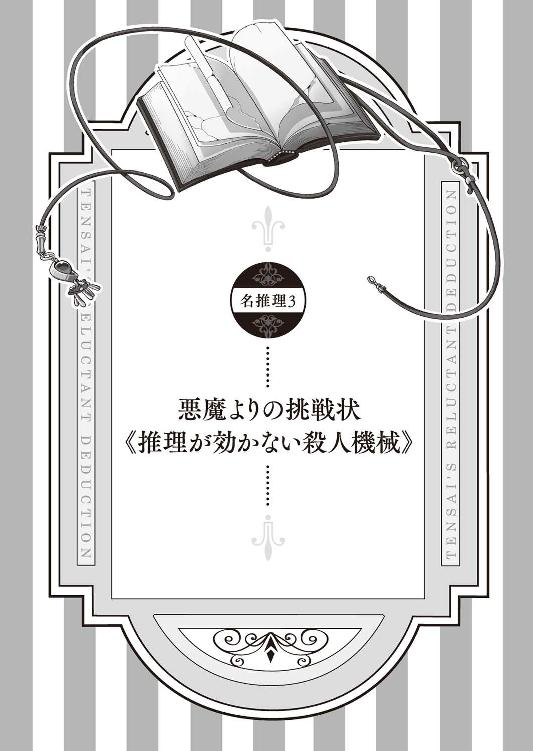
「わ・が・はいーは、あ・く・までーす♪ 女の子にも・モテモテ・モテモテ、ハーレムだって夢じゃなーい♪」
朝、学校へと向かう多くの学生が歩く通学路に、自作の歌を口ずさみながら呑気に歩く赤髪の男がいる。
男の名前は村上バアル。一見すると朝帰りのホストのようにも見えるが、これでも七重島第三高等部の英語教師。
しかし英語教師とは仮の姿。その正体はなんと悪魔。とても強い力を持った悪魔なのである。
たまたま吹いた風で、前を歩いていた女子生徒のスカートがふんわりと捲れそうになったのを見て、「神様、ありがとー！」と空に向かって声高らかに叫んでいるが、れっきとした上位悪魔である。
「村上先生、おはよー」と女子生徒に挨拶され、「おはよー、我輩の可愛い教え子ちゃんたち。どうですか？ 今日の昼食、我輩とご一緒しませんか？」と女子生徒をナンパした結果、たまたま通りかかった教頭先生に「村上くん、後で校長室にくるように」と眼鏡を「クィクィ」されて、「い、いやですなぁ、教頭先生。これは我輩流のジョークですって」と必死に言い訳なんかをしているが、とっても恐ろしくて怖い上位悪魔なのである。
その朝、学校に向かうバアルは、コンクリートの壁に張り付いている一匹のヤモリを見つけた。
チロチロと舌を出す黒いヤモリ。しかし目立つ場所に張り付いているのにもかかわらず、その前を通り過ぎる学生たちは、誰一人としてヤモリに気付く様子はない。
なぜなら、学生たちにはそのヤモリが見えないからだ。
よくよく見ると、そのヤモリから「ブスブス」と黒い煙が立ち込めている。いや、それは正確ではない。ヤモリから黒い煙が出ているのではなく、黒い煙がヤモリの形を形成しているのだ。
その背中には、金色の紋様が刻み込まれている。
それはバアルの胸ポケットに入った黒革の手帳と同じ紋様だ。
「ほう、これはこれは」
バアルは手を伸ばし、逃げようとするヤモリを捕まえると、じたばたするヤモリの尻尾を持ちながらニヤリと笑う。
「いいことを思いつきました」
１
七重島第三高等部・超常現象調査部、通称《伏見研》。その活動目的は、部長である伏見妃凜が個人的に興味を示した超常現象および日常で目についた些細な事象の解明という、極めて私的理由の強い部活動である。
成績優秀スポーツ万能、何より学校一の美人。ただし性格に若干難アリ。
そんな評判を持つ伏見妃凜が仕切る伏見研に、最近新たに二人の部員が加わった。
名探偵・壱級天災と、その助手・星埜ダルクである。
先日行われた、妃凜曰く『天が墜ちてくる情景』が見られるという深夜の天体観測が終わった後も、天災たちは時々伏見研に顔を出すようになっていた。
今日も今日とて、ふらりと伏見研に顔を出した天災とダルクは、妃凜と他愛もない話をしながらお茶を飲んでいた。
「どうも、皆さんごきげんよう。今日も元気に部活に精を出していますか★」
そこにノックもなしに入ってきたのは村上バアル。
突然の来訪者を、天災がギロリと睨みつける。
「貴様、いったいなんの用だ」
「何って、顧問として部活に精を出す生徒たちの姿を見に来たに決まっているじゃないですか」
にんまりと笑う悪魔の言葉を聞いて、天災が思わず妃凜を見る。
「どういうことだ、妃凜殿？ なぜこの男が顧問なのだ？」
「どうもこうもない。部活には顧問がいるのは当然だ」
「しかしコイツは先日やってきたばかりではないか」
「その前までは、現国の大友教師が顧問をしてくださっていた。と言っても、他の数多くの部活動も兼任している名前だけの顧問だったがな」
「そんなお忙しい大友先生に替わり、つい先日、新しくこの部の顧問となったのが我輩なのです。ああ断っておきますが、これは我輩の純然たる教師魂による行動であって、決して学校一の美人がいる部活の顧問になってお近づきになろうなんていう下心はこれっぽっちもありませんので、はい」
妃凜の説明を引き継ぐように捲したてる下心全開のエロ悪魔に、不信の目を向ける天災。
「というか、天災ちゃんたちこそ、こんなところで何をしているんですか？」
「私たちも一応、この部の部員だからな」
「おお、そういえばそうでした。いやー、これは偶然ですな」
何が偶然だ、この悪魔め。
目の前の悪魔エセ教師がこの部の顧問になったのは、天災が入部したからであるとしか思えない。
英語教師・村上バアル。しかしてその実態は、《イゾルデの封印書》より出現した悪魔である。ひょんなことから、バアルと対決する運命を担った天災に、悪魔バアルはこうして何かとつきまとってくる。
そんな悪魔の登場に、天災は席を立つ。
「すまんが妃凜殿。急用ができたので私はこれで失礼する」
「そうか。ではまたな、名探偵」
そのままダルクを連れて伏見研を出た天災を、バアルが慌てて追いかける。
「待ってくださいよ、天災ちゃん」
しばらく廊下を進み、周りに誰もいなくなった所で、足を止めた天災は振り返る。
「それで、私になんの用だ、悪魔？ また誰か《刻印の呪い》に感染したとでも報告にきたのか？」
天災が睨みつけると、バアルはにっこりと微笑む。
「その通り。いやー、さすが聡明な天災ちゃん。なんでもお見通しですなぁ」
《刻印の呪い》とは、災厄の七々々コレクション《イゾルデの封印書》が開かれたことによって七重島中に飛び散ってしまった呪い。《刻印の呪い》に感染した感染者は、体に刻印とタイムリミットが刻まれ、タイムリミットを過ぎると、《刻印の呪い》が発症してしまう。発症したら最後、発症者は必ず一つ、死を生み出す。
「ふん、まったく律儀なことだ。わざわざ報告する義務もないだろうに」
「まあそうなのですが、教えないと天災ちゃんは積極的に動いてはくれませんので」
バアルの言うとおり、天災は《刻印の呪い》を捜すことに積極的ではない。
《刻印の呪い》を無事に解く方法はたった一つ。バアルと契約をした天災が、《惨劇の未来》へと赴き、殺人事件に関してバアルが提示する謎を解き明かすこと。
《惨劇の未来》とは、《刻印の呪い》によって殺人が起こってしまった、本来ならばありえない死が存在する未来の世界。
そこで天災の名推理により謎を暴かれた《刻印の呪い》は、《イゾルデの封印書》へと強制的に戻される。これにより現実では、感染者に刻まれた《刻印の呪い》は消滅、《惨劇の未来》は回避され、誰も死ぬことはなくなる。
だがそれは、天災の意思に反することでもある。
なぜなら『《惨劇の未来》に出向き事件を解決して《刻印の呪い》を消滅させる』＝『まったく目立たない名推理をしなければいけない』ということだからだ。
壱級天災にとって、名探偵として目立つことこそが第一目的。しかしいくら名探偵として鮮やかに《惨劇の未来》で事件を解決したとしても、それは所詮、ＩＦでしかない未来でのことであり、事件解決と同時に消滅する未来でもある。結果、現実に天災の功績は残らない。
だから天災としては、「《刻印の呪い》よ、さっさと発症して殺人事件を量産せよ、さすれば現実において私が全て解決してやろう」と思っているくらいなのだ。
そんな、人命よりも自分が活躍できる事件、という完全自己中名探偵に向かって、バアルはもう一言。
「それにですね、天災ちゃん。今回の《刻印の呪い》の原因は我輩なのですよ」
「？ どういうことだ？」
「じつは今朝、学校に来る途中で壁に張り付いている《刻印の呪い》を一つ発見したので、とっ捕まえて学校に持ってきてしまいました。というわけで、現在この学校の誰かが絶賛感染中です」
「壁に張り付いた呪いだと？ ......ふむ、イマイチ想像できんが、つまりはまだ誰にも感染せずにいる《刻印の呪い》も存在するということか」
《刻印の呪い》の正体、それは《イゾルデの封印書》に記載されていた、悪魔バアルに関する文章を構成する一六万三四二六の文字である。強大な悪魔を解説する文字たちは、それだけで強力な邪を宿し、人の死を求めるという。
「《イゾルデの封印書》より飛び散った《刻印の呪い》たちは、様々な形でこの島に存在しています。それらの多くは様々な形で七重島を徘徊し、取り憑く対象を見定めているのです」
「なるほどな。しかしまさか貴様自身が《刻印の呪い》を捕らえて、誰かに好き勝手に感染させることができるとはな」
「今更ではないですか、天災ちゃん」
一鶴邸での最初の事件、バアルはダルクへの意図的な感染を匂わせていた。もちろん天災も、そのことは想定済みだ。
しかし......
「貴様が直接それを認めるとは思わなかっただけだ。てっきり裏でコソコソしているだけだと思っていたのだがな」
「いやですね、天災ちゃん。我輩はジェントルマンですよ。紳士らしく自分のしたことに誇りを持ち、正々堂々と宣言する男なのです」
「ふん、どうだかな」
「という訳で、今回の《刻印の呪い》は我輩から天災ちゃんへの挑戦状、とでも言っておきましょうか」
「何が挑戦状だ」
「おや、自信がありませんか？」
悪魔の何気ない一言に、天災がピクリと反応する。
「面白いことを言うではないか、悪魔」
「いえいえ、思ったことを口にしただけです。それでどうしますか、天災ちゃん。正々堂々と勝負を挑む我輩から逃げますか？」
ニヤニヤといやらしい笑みを浮かべる悪魔を、天災はキッと睨む。
「ふん、それで私を挑発しているつもりか？ いいだろう、今回は貴様の企てにあえて乗ってやる。そして今回もまたあっさりと解決してやろう」
「それは楽しみです。では我輩から一つ、天災ちゃんたちに贈り物をしましょう」
「コホン」と咳払いをしたバアルは大きく息を吸い、そして......
「パラパ、ラータッターン。ダルクちゃんはレベルが上がった。可愛らしさが五上がった。女の子っぽさが六上がった。我輩からのラブ度が一〇上がった。新しく『《刻印の呪い》を見ることができる能力』を身につけた」
「ボ、ボクですか！」
先ほどから完全に蚊帳の外で話を聞いていたダルクは慌てふためく。
「おい、悪魔。どういうことだ？ 《刻印の呪い》を見極められるのは、貴様と勝負する契約をした私だけではなかったのか？」
「いえ、これからも天災ちゃん一人で《刻印の呪い》を捜し続けるというのも骨が折れるだろうと思いまして、天災ちゃんの助手であるダルクちゃんにも同じ能力を与えようと思ったのです。いいではないですか、天災ちゃん。名探偵と助手は一心同体なのですから。それとも天災ちゃん、まさかダルクちゃんにサービスした我輩に嫉妬でも......」
「するか、このエロ悪魔！」
バアルを一喝した天災は、隣で戸惑っているダルクを見る。
「何か体に異変はあるか、ダルク？」
「ううん、特になんにもないと思うけど......」
「そうか、ならいいが」
「でも、ちょっと良かったかな？」
「？ 何がだ、ダルク？」
「だってこれでもっと天災の役に立てるもの」
にっこりと愛らしい笑顔を浮かべるダルク。そんなダルクに、天災は「ふん」と鼻を鳴らしてそっぽを向く。
「まあいい。ではさっさと手分けして、感染者を捜すぞ」
耳まで真っ赤になっている天災は、一人そそくさと歩いて行ってしまった。
「素直じゃないですな、天災ちゃんは」
「だからあんまり天災をからかっちゃダメですよ」
そんなちょっと「むすっ」とした表情を浮かべるダルク。
本人的にはとっても怒っているけど、傍から見たらあひる口でプンプンと可愛らしく怒っているようにしか見えない。
そんな表情を浮かべるダルクの手を、バアルはそっと摑む。
「ダルクちゃん、我輩の愛人になりませんか？」
真顔でそんなことを言われたダルクは、一瞬何を言われたのかさっぱり理解できなかった。しかしそれを理解した瞬間、「えーっ」と驚きの声を上げる。
「な、何を言っているんですか、バアルさん！ ボクは男ですよ！」
「大丈夫です、なんの問題もありません。悪魔の愛に性別は関係ないので......」
バキューン
突然の発砲音に、硬直するバアル。
思わずそちらを見ると、銃を握りしめた天災が怒りの表情で戻ってくる。
「さっさと消えろ、この悪魔！」
二発目の発砲に、バアルは一目散に逃げ出した。
「て、天災、ダメだよ、学校で改造モデルガンを乱射しちゃ」
「うるさい、うるさい！ 貴様もさっさと捜しに行け！」
八つ当たりにしか見えない風に喚き散らす天災に急かされるように、ダルクは慌てて逃げ出したのであった。
こうして天災とダルクは、悪魔バアルの手によって《刻印の呪い》に感染させられた感染者を捜すこととなった。
２
次の日の昼休み。昨日の放課後から未だに見つけられない感染者を捜して、ダルクは一人、校舎の中を歩き回っていた。
「見つからないな」
ダルクはポケットから一枚の紙を取り出す。そこには《刻印の呪い》の刻印が記されている。それは刻印がどんな形をしているのか知らないと言ったダルクに、天災が説明として描いてくれたものだ。抜群の記憶力と手先の器用さを持つ天災によるその絵は細部まで丁寧に描かれている。
「一番の目印は、常に変動するカウントダウン、っていう話だったけど......」
すれ違う学生たちをチラチラと横目で見ながら歩き回るが、簡単に見つかるわけはない。
「うーん、どうしよう」
「おい、なんとか言えよ！」
怒鳴り声が聞こえてきたのは、そんな時だった。
なんとなくそちらへと行ってみると、階段の踊り場で、数人の男子が一人の女の子を囲んでいた。
制服を見る限りでは、どうやら皆一年生のようである。
男子に囲まれた女の子は、俯くようにして震えている。
「どうしたんですか？」
思わずダルクが声をかけると、男子たちが一斉にこちらを睨む。あまりガラの良くなさそうな一年生たちに、ちょっとビクリとするダルク。
「こいつがぶつかったのに謝らないんですよ」
上級生であるダルクに、一応答える男子たち。
「で、でも、そんなに寄ってたかって威圧しちゃダメですよ」
少しビクビクしながら、なんとか注意をするダルク。しかし、そんなダルクの態度を見て、男子たちが「あん？」と睨んでくる。
「なんすか、先輩。俺たちが悪いって言うんですか？」
「そ、そんなことはありませんけど......」
睨まれあたふたするダルク。するとガラの悪い男子たちは、その様子を見てニヤニヤと笑い出し、「あれ？ どうしたんですか、先輩？」と近づいてくる。慌てたダルクは、なんとか男子たちの間をすり抜け、囲まれていた女の子の方に駆け寄り、その子を護るように前に立つ。だけど、どうしても足が震えてしまう。
「いやー、カッコいいすね、先輩」
その必死な姿を見て、からかう様にはやし立てる男子たちは、まるで楽しむかのように、その距離をゆっくりと詰めていく。
「何をしている？」
再び現れた乱入者に、男子たちは再び睨みを利かせるも、今度はその表情が引きつる。
「もう一度言うが、何をしているのか、と妃凜は尋ねている」
そこに立っていたのが、第三高等部一の美人・伏見妃凜だったからだ。
凜とした表情で睨まれ、戸惑いを見せる一年生たちは、思わず後ずさる。その間を堂々と通り、妃凜はダルクたちの前まで悠々と進む。
「お、おい、待てよ」
だが、その時。一人の男子生徒が、咄嗟に妃凜の肩に手をかけた。
途端、その男子は、見事なまでに宙を舞い、廊下に叩きつけられた。
「妃凜は馴れ馴れしく触られるのをとても嫌う」
手首を軽く捻っただけで男子の一人を転がした妃凜の睨みに男たちは驚き、慌てて逃げ出した。
「覚えていろよ」
一人取り残された、妃凜に投げられた男子も、そんな捨て台詞を残し逃げ出す。
「断る。妃凜は無駄なことなど覚えるつもりはない」
「あ、ありがとうございます、伏見先輩」
「大丈夫か、助手？ それにスイナも」
コクコクと何度も頷く、一年生の女の子。
「スイナ？」
「この一年生のことだ。柊スイナという」
妃凜の紹介に、ぺこりと無言で頭を下げるスイナ。
「伏見先輩のお知り合いなんですか？」
「まあな。スイナは妃凜にとって、とても興味深いことをしているので交流がある」
「興味深いこと、ってなんですか？」
「ロボットだ」
「ロボットって、あのロボットですか？」
ダルクの頭に浮かんだのは、「ウィーン、ガシャン」と動くおもちゃのロボットだ。
「スイナはこう見えてとても優秀な技術者でな、自作のロボット作りをしている。というか、すでに完成させている」
「えっ、それってとっても凄いじゃないですか、スイナさん！」
そう微笑むダルクを見て、スイナはモジモジと俯いたかと思うと、そっと伸ばした手で、ダルクの制服の裾を「クイクイ」と引っ張る。
なんとなく、「ついて来い」と言っているように思える。
「助手よ、スイナについて行ってやれ。妃凜はこれで失礼する」
ダルクと同じことを見て取った妃凜が、そう促す。
「なら伏見先輩も一緒に......」
「結構だ。本日のお昼休みの妃凜は、あまりロボットに興味がない」
そんな奇妙な一言を残し、伏見妃凜はフラフラと廊下を歩いて行ってしまった。
マイペースにその場を去って行った妃凜を見送ったダルクは、隣で裾を引っ張る後輩を見る。
「えっと、それじゃロボットを見せてください」
表情の乏しい柊スイナは、一度だけコクリと頷き、歩きだした。
ダルクたちがやってきたのは、部室校舎一階にある《柊技術研究所》と書かれた看板の掛かった部屋だった。
まずびっくりしたのが、部室の扉が分厚そうな鋼鉄製であったこと。しかもスイナの指紋認証で開くオートロックの扉。他の部室とは明らかに違うハイテク過ぎる扉をくぐると、部屋の中もまた変わった機材が置かれている。
部屋の隅に、機械の塊がまるでガラクタのように積まれていたり、手術台のような台座があったり、ドリルや鉄鎚から細かな作業に使いそうなピンセットやら最少サイズのドライバーやらが棚に並んだり、と見回せば見回すほど、そこは研究所といった様相だ。
どうやら、妃凜の《伏見研》同様、かなり私的に利用されている部室であるらしい。
そんな部室の中にあって、さらに異彩を放っているのが、壁際に立つそれだった。
「これが、スイナさんの作ったロボットですか？」
体長二メートル近くありそうなそれは、まさにロボット。しかしダルクが想像していた人型のロボットとは若干異なっていた。
四角い頭と二本の腕、しかし下半身はなぜか六本足という、不思議なロボットだ。
「六号。ゴーレム六号、この子の名前」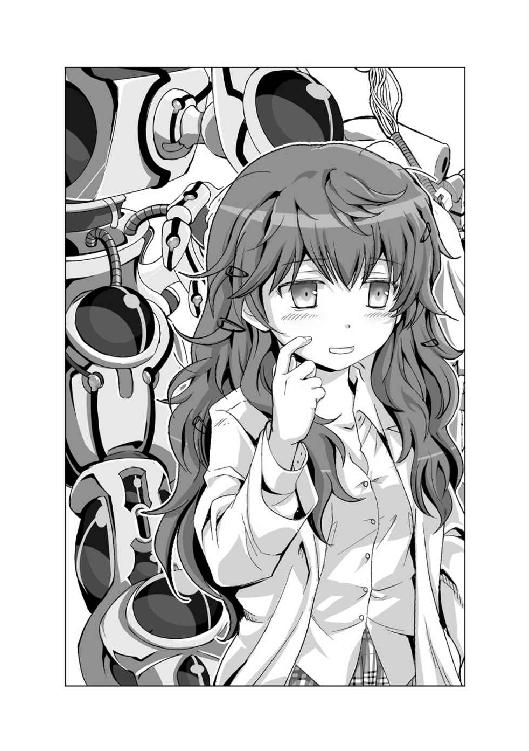
ダルクは初めてスイナの声を聞いた。小っちゃい声だけど、とても可愛らしい声だ。
「ゴーレム六号さんですか。とってもカッコいい名前ですね」
スイナは頰を赤く染めながらモジモジしている。
「あの......名前......」
「名前？」
「先輩の名前......」
「ボクは星埜ダルクといいます」
そう自己紹介するダルクに、スイナはモジモジと俯く。
「星埜先輩は......き」
「？ もう一度言ってもらっていいですか？」
「星埜先輩は、可愛いから、わたしは......好き」
たどたどしくも必死に声を振り絞るスイナは、耳まで真っ赤になっている。
「あ、ありがとうございます」
いくら自分が女子生徒の格好をしているとはいえ、女の子に突然そんなことを言われてしまい、ちょっと恥ずかしいダルク。ただし可愛いという評価に関しては複雑な気分である。
スイナさんは言葉数が少ない分、意外とストレートにものを言う子なのかもしれないな。
そんな印象を持ったダルクの前で、スイナはどこからともなく取り出したゴーグルを装着すると、ゴーレム六号から伸びるコードに繋がっている四角い機械を両手で持つ。色々なボタンやレバーのついているそれは、どうやらロボットを操作するためのコントローラーのようだ。
「六号、起動」
スイナが、コントローラーのスイッチを入れた瞬間、カタカタとゴーレム六号は動き出す。
六本の足をカシャカシャと動かし歩き回る姿は、どこか蜘蛛を連想させる。だがその六本の足のおかげで、ゴーレム六号は、バランスを崩すこともなく、実にスムーズに動き回る。
「うわーっ、凄いです！」
ダルクの前までやってきたゴーレム六号は、ダルクに向かってペコリと頭を下げ、太い三本の指がついている右手を差し出してきた。
どうやら握手を求められているようだ。
恐る恐るその手を摑むと、軽く上下に揺れ動き、握手のジェスチャーをしてくれた。
他にも近くに置かれたボールを摑み上げて投げたり、壁に立てかけてあった箒を持って、床の掃き掃除を始めたりと、素晴らしい動きを見せる。
「スイナさんはとっても凄いんですね」
微笑むダルクにそう言われ、リモコンを握るスイナは耳まで真っ赤にして俯く。そんなスイナの気持ちを代弁するように、ゴーレム六号がポリポリと頭を掻いている。「いやー、そんなことないですよ」と言っているように見えるから面白い。
思わずクスクスと笑うダルク。
「あれ？」
だがそこで、ダルクは妙なことに気が付いた。
ゴーレム六号の左脇に何か変な印があるのだ。
「これって......」
それはとても奇妙な刻印だ。なぜならそこに刻まれた数字が刻一刻と変化しているからだ。それはまるで何かのカウントダウンをしているかのように、数字は減り続けている。
思わずポケットから紙を取り出したダルクは、それと見比べ、呆然とする。
「一緒だ」
ガシャガシャと動くゴーレム六号の身体に、《刻印の呪い》が刻まれていた。
３
「ロボットに《刻印の呪い》が刻まれていただと？」
ダルクの報告に、天災は眉を顰める。
「うん、間違いなかったよ」
「人間ではなくロボットに呪いをかけるとは、あの悪魔はいったい何を考えているんだ？ それで残り時間は？」
「えっと、ボクが見たときは、およそ八〇時間だったよ」
「となると、タイムリミットは三日後の夕方から夜にかけてくらい、ということか」
放課後になるのを見計らい、天災とダルクは、校内を歩き回りバアルを捜し回る。
ほどなくして、窓際に立ち、どこか遠い瞳をして黄昏れている悪魔を発見。ちなみにその視線の先には女子陸上部の姿があったが、もういちいち突っ込むつもりもない。
「おい、悪魔。さっそく《惨劇の未来》へと連れて行け」
人気のない教室に移動すると、バアルはすぐに胸ポケットから手のひらサイズの手帳を取り出した。その手帳を軽く振ると、まるでマジックのように一冊の分厚い黒革の本へと変わる。
それこそが災厄の七々々コレクション《イゾルデの封印書》。
「それでは行きましょうか」
バアルは白紙ばかりの本を開き机に置くと、ページの上に手を載せた。
途端、天災たちの周りの景色は変貌する。
赤い空と灰色の荒野が広がる《惨劇の未来》。そこは《刻印の呪い》によって捻じ曲げられた、ありえない死が存在する未来の世界。
現実世界で天災たちが《刻印の呪い》の感染者を見つけることで、この世界に未来の殺人現場が出現する。
ちなみにこの《惨劇の未来》では、天災たちの姿も変貌する。
天災は、普段のこぢんまりした体型から、長身でモデルのようなナイスバディに。
ダルクもまた、可愛い男の娘から本物の女の子（胸はＥカップ）へと姿を変える。
テッテ、テーン
と、いきなりそんな間の抜けた音が鳴り響いた。
何事かと辺りを見回す天災とダルクに、悪魔バアルがにっこりと微笑む。
「スペシャルゲェーム！」
高らかに声を上げたバアルが「イエーィ」と右腕を掲げる。
「さあ、この音が鳴ったということは皆さんご存じスペシャルゲームの時間です！ 今回のスペシャルゲームは、《ザ・阻止》。犯人を倒し、被害者殺害を阻止すれば、天災ちゃんたちの勝利となりますので、是非是非頑張ってください」
まったくご存じではなかった天災が、悪魔に詰め寄る。
「おい、どういうことだ、悪魔？」
「文字通りの意味ですよ。今回はこれまでのように殺人後の犯人捜しではなく、殺人前の犯行の阻止。それが今回、我輩が提示するクリア条件です」
「これまでとは随分と勝手が違うではないか」
「だって、毎回毎回天災ちゃんが殺人犯の犯行を暴くだけの推理だけでは味気ないじゃないですか。というか我輩、いちギャラリーとしては物足りないというかぁ。名探偵を名乗る天災ちゃんの、もっと違う一面も見たいというかぁ」
「ふん、何が違う一面だ」
くだらないとばかりに鼻を鳴らす、天災。
そんな天災を見て、バアルがくすりと笑う。
「それとも自信がありませんか？」
「なんだと？」
「歴史上、名探偵と呼ばれる方々は数多存在しますが、彼ら彼女らの中には優れた頭脳を持つだけではなく、様々な技能を持った方たちも多く存在します。そんな名探偵たちは、自らが持つそれらを巧みに使い、犯人の犯行を暴くだけではなく、その凶行を防ぎ、犯人を捕まえてきました。だから我輩は思ったのです。推理をする以外の天災ちゃんも見てみたいと」
確かにバアルの言う通り、卓越した頭脳と推理力を兼ね備えているなど、名探偵としての最低限の条件でしかない。だが歴代の名探偵たちは、それぞれ、それに勝る個性や特徴を持っていた。
名探偵とは推理だけに非ず。
思わぬ正論に口を噤む天災に向かって、バアルがニヤリと口角を上げる。
「ですがどうやら天災ちゃんには推理以外は些か荷が重かったようですな」
まるで嘲笑うかのような挑発に、天災はギロリと目の前の悪魔を睨みつける。
「そこまで言うのなら見せてやろうではないか、私の華麗な逮捕劇を！ それで？ 阻止ということは、今回はこれまでとは違い、犯行が行われる前の状況なのだな？」
「その通り、これから天災ちゃんたちが学校に入ったと同時に、犯人が行動を開始します。天災ちゃんたちには文字通り、それを阻止していただきます。最終的に、犯人が犯行を行えないようにすれば、天災ちゃんたちの勝利。今回の《刻印の呪い》は回避されます」
「いいだろう」
「ちなみに今回のチャンスは三回までとさせていただきます」
「三回？」
「今までは何度でも現実世界と《惨劇の未来》の行き来が可能でしたし、タイムリミットまでに事件を解決すればよかったですが、今回はスペシャルゲームですので、三回しか《惨劇の未来》を訪れることができません」
「つまり、もしここで三回失敗してしまえば......」
「その時点で《刻印の呪い》の発症は確定です」
ニヤリと笑うバアルを、天災は鼻で笑う。
「むしろ三回もいいのか、悪魔？」
「はい、我輩からの細やかな愛情表現です」
「何が愛情表現だ。舐めるのも大概にしろ。......ふん、まあいいだろう、その条件で受けてやる」
何もない荒野の広がる《惨劇の未来》、そこにぽつんと建っているのは、天災たちが通う第三高等部。どうやら今回の殺人現場も前回と同様、この場所であるらしい。
正門までやってきたところでバアルが足を止める。
「それでは、我輩はここで待機していますので、がんばってきてください。正門をくぐったら勝負開始です」
「いくぞ、ダルク」
天災はさっそく正門をくぐり学校の敷地内へ足を踏み入れた。
「スタートです」
背後でバアルの宣言が響く。
「今回は何にも教えてくれないみたいだね」
いつもだったら殺害現場や被害者の名前、殺害状況などの説明があるのだが、それもないらしい。
「ふん、自分たちで捜せということなのだろう」
とりあえず校舎へと向かう、天災とダルク。
第三高等部には三つの校舎がある。学級校舎、特別校舎、部室校舎。
まずは学級校舎にある昇降口から学校内へと入る。
「ねえ、天災。今回の犯人って誰なのかな？」
「なんだ、急に？」
「だって、今回の《刻印の呪い》が刻まれていたのは、スイナさんの作ったゴーレム六号だったんだよ？ まさかゴーレム六号が犯人じゃないだろうし」
「おそらく製作者の柊スイナだろう。その犯行に使われたのがゴーレム六号ということではないのか？」
「なるほど」
「なんにしても、そのゴーレム六号とやらがいる《柊技術研究所》に向かうぞ」
学級校舎の廊下を進み、隣の部室校舎に行くために連絡路へと向かう二人。
しかし、いざ連絡路に差しかかったところで、天災たちは足を止めた。
部室校舎の方から誰かが走ってくるのが見えたからだ。
「おい、ダルク。私の気のせいでなければ、前からダルクが走ってきているように見えるのだが？」
「間違いないと思うよ、天災。ボクにも前からボクが走ってくるように見えるから」
二人の言う通り、こちらに向かって走ってくるのは白黒のダルク。その色彩こそがシャドーであることを示している。
シャドーとは、悪魔バアルによってこの《惨劇の未来》の中に生み出された存在。現実にいる本物とまったく同じ存在である偽物で、色が白黒なのが特徴である。
向こうから走ってきた白黒ダルク（男の娘）は、天災たちに気づいたらしく、走りながら叫ぶ。
「ふ、二人とも逃げてください！」
そう叫びながら、白黒ダルクは、二人の横をすり抜け逃げていった。
ウィーン、ガシャン、ウィーン、ガシャン
逃げていく白黒ダルクの背中を見送っていた天災とダルクは、その奇妙な機械音に振り返る。
そして二人は驚きのあまり目を見開いた。
連絡路を進んでくる大きな影。その正体はゴーレム六号。《刻印の呪い》が刻まれたロボットが姿を現したのだ。
だが様子がおかしい。
「スイナさんがいない？」
こちらに「カシャカシャ」と向かってくるゴーレム六号。しかしその背後には誰の姿もない。ただコードに繋がれたコントローラーが、ズルズルと引きずられているだけ。
どう見てもゴーレム六号が勝手に動いているようにしか見えない。
「どういうことだ、これは？」
戸惑う二人の前で、ゴーレム六号は停止する。
四角い顔についた二つの目が、じっと二人を見つめている。
次の瞬間、ゴーレム六号は天災たちに襲いかかってきた。
天災が覚えているのは、ゴーレム六号が振り上げた腕が勢いよく振り下ろされるところまでだった。
天災が目を覚ますと、そこは現実。人気のない元の教室だった。
「だ、大丈夫、天災？」
すぐに寄ってきたダルクが、天災の顔をジッと見ている。
「どうしたというのだ、ダルク？」
「だって、天災。さっき思い切り殴られて、倒れちゃったんだもん」
慌てふためいているダルク。
「では私が気絶した後、どうなった？」
「えっと......ボクも殴られちゃったみたいで、それからよく覚えてないんだ」
どうやら天災に続き、ダルクも気絶してしまったらしい。
だがこうして現実に戻ってきたということは......
「被害者が殺されてしまいましたので、一回失敗でーす」
案の定、ニタリと笑う悪魔バアルが失敗を告げる。
「くっ。私たちが倒れている間に白黒ダルクが殺されてしまったということか」
そんな悔しがる天災を見ていた、バアルがクスクス笑う。
「どうやら色々と勘違いしているみたいですね、天災ちゃん」
「？ どういう意味だ？」
「まあ一つだけお教えするとしたら、先ほど《惨劇の未来》の中で天災ちゃんたちは殴られて気絶したくらいにしか思っていないみたいですけど、気絶どころか、あの一撃で天災ちゃんたちは頭蓋骨が陥没していましたから確実に即死でしたよ」
「し、死んじゃっていたんですか、ボクたち！」
「ああ、でも安心してください。《惨劇の未来》は不確定な未来ですから、仮に向こうでどうこうなってしまっても、現実にはなんら影響はありません。肉体も健康そのものです。まあもっとも、精神的にはどうか分かりませんけど」
ニタリと笑うバアルの視線の先で、ダルクが殺されかけたという恐怖で顔を青くして震えている。
しかしその一方で、天災はただただ悔しそうに唇を嚙み締めているだけ。むしろその顔は不甲斐ない結果を招いた自らに対する怒りで真っ赤になっている。
その様子を楽しそうに見つめるバアルが二人に告げる。
「これでチャンスはあと二回です、それではお二人とも頑張ってください」
それだけ言い残し、悪魔バアルは、楽しそうに教室を出て行った。
「ど、どうしよう、天災」
「......これは作戦を立てる必要があるな」
４
「最初は犯人、次は第一容疑者、今度は被害者か。ふむ、三冠達成だな、ダルク」
「そんなのちっとも嬉しくないもん！」
次の日の昼休み、天災とダルクは二人きりで作戦会議を開いていた。二人が話し合いをしているのは伏見研の部室。いつも通り勝手に鍵を開けて中へと入り（ピッキングによる不法侵入ともいう）、こうして色々と意見を出し合いながら対策を練っているところだ。
「えっと、つまり今回の犯人は、誰かに操られたゴーレム六号ってわけじゃなくて、暴走したゴーレム六号ってことなのかな？」
「おそらくそうだろう」
「ボクのシャドー以外にも誰かいたのかな？」
「確認していないから断定はできないな。そもそもなぜ白黒ダルクがいたのかもよく分からん。こうなると、何も情報を得られずにヤラれてしまった一回目の失敗が悔やまれるな」
前回の反省をしつつ、天災たちはテーブルに広げた第三高等部の見取り図を見下ろす。
第三高等部は特徴的な形をしている。三つの校舎がそれぞれ正三角形の頂点の位置にあり、真ん中にある噴水付きの中庭を囲むように連絡路で繋がっている。
「それで、どうやってゴーレム六号を止めるつもりなの、天災？」
「正面からぶつかっても勝つのは難しいだろう。だが、手はいくらでもある。なに、突然のルール変更で不覚を取ったが、次は必ず倒してやる」
ガチャリと扉が開いたのはその時だった。部屋に入ってきたのは、この部屋の主である伏見妃凜。
「随分と面白い話をしているな、名探偵とその助手よ」
開口一番、妃凜がそんなことを言いだした。
そして、妃凜の耳元を見て、天災が「ふん」と鼻を鳴らす。
「盗聴とは不作法だな、妃凜殿」
「では妃凜の城で相談事はしないことだ」
右耳についたイヤホンを外した妃凜が、悪びれた様子もなく言う。なんの目的で部室に盗聴器を設置しているのかということはあえて触れないでおく。
「というわけで、名探偵とその助手よ。詳しい話を妃凜に聞かせてはくれまいか。現在の妃凜の興味は、名探偵とその助手の企みにある」
顔を見合わせる天災とダルク。
「いいだろう」
「えっ、いいの、天災？」
「遅いか早いかの違いだ。妃凜殿ならどうせ黙っていても私たちを嗅ぎまわるだろう」
「確かに......」
「その時、全てを隠し通せる自信はあるのか、ダルク？」
「......ないです」
先日の天体観測の後にこっそりと行われた、伏見妃凜の木戸隆観測の一部始終を思い出したダルクが素直に頷いた。
そんな物分かりの良い二人に、妃凜は少し残念そうな表情を浮かべる。
「素直なのはいいことだが、あっさりと答えが分かってしまうのも些か物足りない気がするな」
自称探究者は、実に面倒な性格をしていると、二人は改めて思った。
「しかしまさか村上教師が悪魔とはな」
天災たちからこれまでの話を聞き、妃凜は興味深そうに頷いている。
「妃凜殿は信じるのか？」
「もちろんだ。これぞ、超常現象と言わずなんであろう」
にやりと笑う妃凜はどこか楽しそうだ。
そんな妃凜は二人に提案する。
「どうだろう、名探偵。その勝負に妃凜も一枚嚙ませてもらえないだろうか？ その悪魔との勝負とやらに、妃凜はとても興味が湧いてきた」
「もちろんオッケーです！」
答えたのは、天災でもダルクでもなく、いきなり扉を開けて入ってきた悪魔バアルだった。
「どこから湧いて出た悪魔？」
「この扉から湧いて出ました天災ちゃん。いやーっ、それにしても妃凜ちゃんが参戦とはこれは中々の強敵になりそうですなぁ」
「ふん、その割には随分と嬉しそうではないか」
「気のせいですよ、天災ちゃん♪」
そうは言うが、バアルのテンションは明らかに高い。
「村上教師、いや悪魔バアル。ぜひ妃凜を楽しませてくれ」
「もちろんです、妃凜ちゃん。大人の男である我輩がしっかりとエスコートして差し上げますのでお楽しみに、ぐふぐふぐふ」
そんな不気味というか気持ちの悪い笑みを残し、バアルはさっさと部屋を出て行った。
「......あいつはいったい何をしに来たんだ」
兎にも角にも伏見妃凜の参戦が決まってしまった。今更異を唱えようにも、悪魔はさっさといなくなってしまったし、当の妃凜はやる気十分である。
「して、名探偵。どうするつもりだ？」
楽しそうに机の上に広げられた見取り図に目を落とす妃凜に、天災はため息を吐く。
「では作戦を説明しよう」
放課後になり、天災たちは伏見研に集合した。ほどなくして声をかけておいたバアルもやってくる。
「それでは行きましょうか」
胸ポケットから取り出した手帳サイズの《イゾルデの封印書》を元の大きさに戻したバアルは、さっそく白紙のページを開き、そこに手を置く。
途端、天災たちは赤い空と灰色の荒野が広がる世界の中へと誘われる。
「名探偵、これはどういうことなのだろうか？」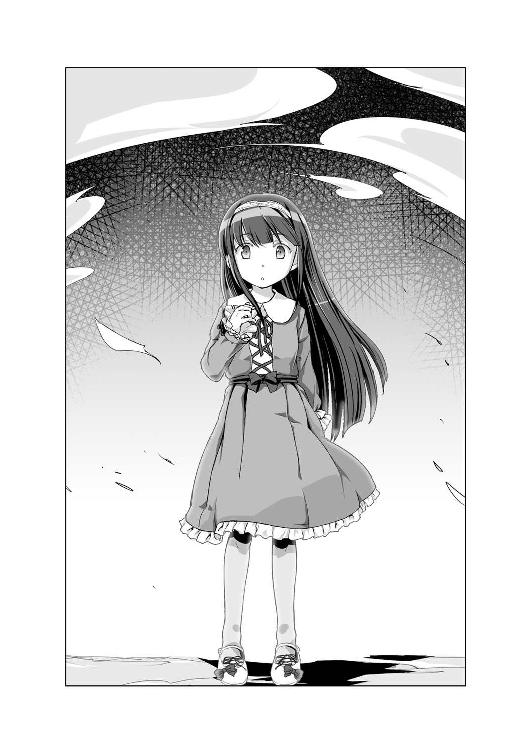
「んな！」
《惨劇の未来》にやってきた天災は、自らの身体を見回す妃凜の姿に唖然とする。
なぜならそこにいたのは小さい女の子だったからだ。
おそらく七、八歳くらいの女の子。ドレスのようなワンピースを着た姿はまるでアンティークの西洋人形のようだ。
「おい、悪魔。なぜ妃凜殿が幼女になっている！」
「我輩の趣味です」
眩しいくらいに笑顔を浮かべるバアル。
「......なるほど、貴様が妃凜殿の参戦を喜んだのはこういう訳か」
「現実の妃凜ちゃんは、完璧な美女ですからね。小さいころはさぞ美少女だっただろうと思っておりましたが、まさかここまでとは思いませんでした」
「ふむ、確かに」
バアルの評価通り、幼少時の姿となった伏見妃凜の可愛らしさと愛らしさは半端ない。天災が思わずギュッと抱きしめたいと思ってしまうほどに。
「という訳で、可愛いお嬢さん、我輩と楽しいことしませんか？」
そんな絶世の幼女の前にしゃがみ、「はあはあ」と息を荒くする悪魔。
そして次の瞬間、その手首に「カシャリ」と手錠が掛けられた。
「へっ？」
突然のことに素っ頓狂な声を上げたバアルが顔を上げると、そこにはシャドー葉奈ちゃんが立っていた。
シャドー葉奈ちゃんは、現実で刑事をしている不動明葉奈のシャドーであり、いつもは殺人事件についての警察の情報を、天災たちに教えてくれる。
そんな現実と変わらぬ正義感溢れる瞳を持つ、シャドー葉奈ちゃんがバアルに言う。
「バアル様、幼女誘拐の現行犯で逮捕します」
「た、逮捕ですと！ どういうことですか、シャドー葉奈くん！ これは謀反では！」
「私はシャドーである前に、警察官です。目の前の犯罪者を野放しにすることはできません」
「ま、待つのです、シャドー葉奈くん！ 我輩はまだ何もしていません！」
「邪な気持ち全開で小さい子に迫っている時点で不審者です！」
きっぱりと言い放ったシャドー葉奈ちゃんは「連れて行きなさい」と声を上げる。するとどこからともなく現れた白黒警官たちが、手錠を掛けられたバアルの両脇に腕を通す。
「我輩は無実である！ これは冤罪だ！ 弁護士を呼びたまえ！」
幼女誘拐容疑で逮捕された悪魔バアル容疑者（年齢不詳）は、自らの身の潔白を叫びながらも、シャドー葉奈ちゃん率いる警官たちにズルズルと引きずられ、灰色の荒野の向こうへと連行されたのであった。
やがてその姿も見えなくなり、その場に取り残された三人。
「......まあ、あの悪魔のことは放っておくとして、まさか妃凜殿がこんな姿にさせられるとはな」
「どうする、名探偵？ 妃凜がこれでは、些か作戦を変更する必要があるかもしれんな」
「いや変更はない。妃凜殿にはできる範囲で作戦通り動いてもらう」
「いいだろう、では及ばずながら頑張って罠を張るとしよう」
前回と同じく学級校舎から中へと入った三人は、予定通りに動き出す。
「では準備を頼んだぞ、二人とも」
「うん、任せて」
「そちらも抜かるなよ、名探偵」
ダルクと妃凜が階段を上がってゆき、天災はひとり、連絡路へと向かう。
ほどなくして、天災は向こうから逃げてくる白黒ダルクを発見した。
「てい」
走ってきた白黒ダルクに足を引っ掻けて転ばした天災は、床に鼻を打ちつけて蹲る白黒ダルクの肩をポンと叩く。
「安心するがいい、白黒ダルクよ。貴様が殺されないように私がしっかりと護ってやる」
「だったら、転ばさないでください！」
ウィーン、ガシャン、ウィーン、ガシャン
聞き覚えのある機械音と共に、今回の犯人であるゴーレム六号が登場。
「よし、逃げるぞ」
「えっ、逃げるんですか！ って、待ってください！」
さっさと走り出す天災。白黒ダルクも慌てて後を追う。もちろん、ゴーレム六号も追ってくる。
天災は、白黒ダルクを引きつれ、予定通りに目的の階段から二階へと上がる。それを追い掛けてきたゴーレム六号も階段に足を掛ける。そのまま六本の足を器用に使い、段差をものともせず階段を上がってくる。
「なるほど、確かにこれは凄いロボットだな」
先行して階段を上がる天災は、その姿に素直に感心する。しかし二階に上がりきったところで振り返り、ニヤリと笑いながらゴーレム六号を見下ろす。
「だが、それもここまでだ」
ゴーレム六号の六本の足が、一階と二階の間にある踊り場でピタリと止まる。
見上げるように顔を上げるゴーレム六号の視線の先にあるのは、高々と積み上げられた机たち。天災と別行動を取っていたダルクと妃凜が近くの教室からここまで運び積み上げていったものだ。
「くらえ」
それを天災は階段下にいるゴーレム六号に向かって一気に突き落とす。
いくつもの机が大きな音を立てて雪崩のように階段を転げ落ち、ゴーレム六号に命中。
「やった......ではなさそうだな」
机の直撃を受け、よろけたゴーレム六号であったが、倒れることもなく、じっとこちらを見上げている。
「やはり一度では無理か」
天災は、再び白黒ダルクと共に逃走。先回りするダルクと妃凜が罠を仕掛けているポイントに向かって走り出す。
机を掻き分け階段を上がってきたゴーレム六号は、隣の校舎へと向かうために廊下を走る天災たちを再び追い掛け始める。
そこからは、予想以上に長い戦いが始まった。
白黒ダルクと共にゴーレム六号の気を引きながら決められたルートを逃走する天災。その先では、先回りしたダルクと妃凜が学校中から使えそうなモノを掻き集めて、せっせと罠の準備に勤しむ。
机、椅子、ロッカー、消火器などなど。
それらを階段の高低差を利用してどんどんぶつけてゆく。
第三高等部は、中心にある中庭を囲むように三つの校舎がぐるりと並んでいる。つまり逃走ルートを上手く設定すれば追い詰められることはないし、理論上はいくらでも逃げることはできる。
しかし理論ではどうにもならないことがある。
その一つが疲労だ。
「ふう。どうやら体は幼くなってしまったが、身体能力には変わりがないようだな」
重たい物を運ぶ重労働だが、身体の小さくなってしまった妃凜は、それでもきびきびと動き回る。
だがその一方で、白黒ダルクの手を引いて逃げるだけのナイスバディな天災は「ぜーぇ、ぜーぇ」と肩で息をしながら、壁に手をついている。
「普段からもっと体を動かすことだ、名探偵」
「わ、私は頭脳派なのだ！」
普段の運動不足が祟っている天災が、半泣きで叫ぶ。
さらには同じルートをグルグルと逃げているせいで、罠の場所は必然的に同じになる。そうなると前回の罠で使った机などが道を塞ぎ、逃げにくくなる。罠に使う机も、近くの教室になくなれば遠くの教室から運ぶ必要がある。結果、罠がどんどん間に合わなくなっていく。
「くっ、手こずらせてくれる」
結果、少しずつ計画に無理が生じ始める。
その中で、一番天災たちを辟易させたのが、ゴーレム六号の様子である。階段上から落とされるロッカーや机などは確実に命中してはいるのだが、それが効いているように見えないのだ。
よくよく見ればボディにキズや凹みが見えないでもないが、それだけ。一向に動きが鈍る様子がない。
「はぁはぁはぁ、いつまで続ければいいのだ」
フラフラになりながら白黒ダルクの手を引き逃げる天災は、思わず中庭にある時計に目を向ける。
かれこれ四〇分近く逃走を続けている。
そして、その時はやってきた。
二階と三階の間にある踊り場から、二階から階段を上がろうとしていたゴーレム六号に向かって大量の机を突き落した天災たちは、さらに机やら消火器を投げつける。
その質量に、よろけたゴーレム六号の足の一本がボキリと折れ、ついにゴーレム六号がひっくり返る。
思わず喜びの笑顔を浮かべる三人。そのまま最後の気力を振り絞り、手当たり次第に物を投げつけようとした。
――――その時だった。
「君たち、こんな時間にいったい何をしているんだ！」
突然の怒鳴り声に、三人はギョッとし、思わず目を疑った。
今まで天災たちしかいなかったはずの校舎に、見知らぬ男のシャドーが現れたからだ。
「大友教師」
妃凜が驚きの声を上げる。どうやら学校の先生であるらしい。
しかし、現れた位置が悪い。
天災たちが投げた机に埋まったゴーレム六号のすぐ後ろ。二階部分からキツイ目で天災たちを見上げている。
そして天災の不安は的中する。
机の中から飛び出したゴーレム六号が、近くにいた大友に襲いかかったのだ。
「馬鹿な......」
まさかの出来事だった。
机の一つを軽々と片手で持ちあげたゴーレム六号が、唖然とするシャドー大友にそれを振り下ろしたのだ。
ぐしゃり
嫌な音がした。
天災は咄嗟に中庭の時計に目を向ける。
そして首から上が潰れた大友が膝から床に崩れ落ちた。
その瞬間、ゴーレム六号は動きを止める。そしてずぶずぶと音を立ててドロドロに溶け始めるゴーレム。
それだけではない、周りの校舎の壁も、投げた机も、全てのモノがずぶずぶと溶け始めた。
慌てて逃げ出す、天災たち。
なんとか崩れゆく第三高等部から脱出したところで、「ピーポーピーポー」というサイレンを鳴り響かせながら一台のパトカーが近づいてきた。パトカーは天災たちの前で、停車。後部座席の窓が開いてゆく。
「残念でしたね、天災ちゃん。またまた今回の被害者である大友先生が殺されてしまいましたよ」
手錠を掛けられ両サイドを警官に挟まれて座る悪魔バアルがニヤニヤと笑っている。
そしてパトカーはそのまま「ピーポーピーポー」と走り去っていった。
気がつくと、そこは現実の伏見研の部室。
まさかの失敗に立ち尽くす天災たちに、バアルがニヤリと笑う。
「では、最後の一回に挑戦する時に、また声をかけてください」
そう言って、バアルは嬉々として伏見研から出て行った。
「くそっ、やられた！ まさか被害者が白黒ダルクではないとは！」
そこで天災は最初の失敗の際にバアルが言っていたことを思い出した。
『どうやら色々と勘違いしているみたいですね、天災ちゃん』
まさにその通り、天災たちは完全に勘違いをしていた。
今回の《惨劇の未来》において、最初に出会ったゴーレム六号から逃げる白黒ダルク。
天災たちは、白黒ダルクが被害者であると勝手に決めつけていた。それ以外の選択肢を端から考えてもいなかった。これまでの悪魔バアルとの勝負通り、被害者が誰なのかを断定されていなかったにもかかわらず、勝手にそう思い込んでしまっていた。
拳を握り締めて本気で悔しがる天災。
「殺されたのは大友勝教師。現国教師で我が超常現象調査部の元顧問だ」
淡々と語る妃凜。
「つまり今回我々が護るべき対象だったのは、白黒ダルクなどではなく大友勝だったというわけか。まったく、なんて迷惑なダルクだ！」
「ボ、ボク関係ないもん！」
「しかしそうなると、なぜ白黒助手があそこにいたのかが妃凜はとても気になる。あれは村上教師の悪質な罠だった、というのか？」
「個人的にはそう思いたいが、そうとも言い切れんな。あそこに白黒ダルクがいたのは何かしら必然性があってのことだろう」
「これであとチャンスは一回だったな、名探偵。さて、どうする？」
口元に手を当て、考える天災。
「とりあえず、今回分かったことを検証してみようと思う。まず被害者についてだが、大友勝で間違いないだろう」
頷く、ダルク。
「バアルさんも、大友先生が被害者だって言っていたものね」
「となると、我々の第一目的は大友勝の身柄の保護だ。大友勝が死なない限り負けではない。そのためには、あのはた迷惑な白黒ダルクは見殺しにすることも厭わん」
「ううっ、複雑な気分」
「問題なのは、大友勝が現れたタイミングだ。今回、大友勝が死亡した時間は、八時五六分だった」
「えっ、そうなの、天災？」
「中庭の時計を確認したから間違いない」
「妃凜たちが行動を開始してからおよそ一時間、というところか。しかし分からない。なぜ一時間経ってから大友教師は現れた？ それまで職員室や他の場所にいたということだろうか？ だがそれならば、もっと前に物音に気づいて出てこなければおかしい。なにせ妃凜たちは学校の中であれだけ長い間大騒ぎをしていたのだから」
「確かに妃凜殿の言うとおりだな。それにこうなってくると、白黒ダルクや大友勝以外にも誰か残っている可能性があるな」
腕を組み思考する天災。
「ゴーレム六号についても問題だぞ、名探偵。あれだけの時間と労力を使って、足一本折るので限界、というのでは話にならない」
「そうだよ、天災。やっぱりゴーレム六号は強すぎるよ」
二人の意見に、天災は腕を組む。
「ふむ、ではまずゴーレム六号を弱くするために行動してみるか」
５
二回目の失敗直後、天災はダルクと妃凜を連れて《柊技術研究所》へと向かった。
「それで、ゴーレム六号を弱くするとはどういうことだ、名探偵？」
廊下を歩きながら妃凜が尋ねる。
「現実と《惨劇の未来》は、過去と未来の関係だ。つまりこの二つは繋がっている。では未来において強力な力を持つロボット・ゴーレム六号を過去において弱体化したらどうなるだろう」
「未来においてもゴーレム六号は弱くなる。なるほど、面白い発想だな。それをスイナに頼みに行くということか」
「そういうことだ」
「でも、そんなに上手くいくのかな？」
ダルクがぽつりと呟く。
「イヤ」
それが、柊スイナの回答だった。
「まあそうなるよね」とダルクは呟く。
訪ねてきて、天災に開口一番、「ゴーレム六号を弱くしろ」と言われて、「はい、そうします」と言うわけがない。
「必要だから、そうしろと言っている」
それでも、上から目線で睨みつける天災に、ダルクの後ろに隠れるスイナはフルフルと首を横に振る。
「天災、そんな言い方してもダメだよ。ちゃんと事情を説明しなきゃ」
そんな物事を頼むのが下手な名探偵に替わり、ダルクと妃凜が、スイナにこれまでの経緯を語る。
「星埜先輩と、妃凜先輩の、言葉でも、信じられ、ない」
至極当然の反応を示すスイナ。呪いだの未来に行ってそれを回避するなどということを即座に信じるような人間は、よっぽどの変わり者でない限り、そうはいない。
スイナの回答に、ゴーレム六号を見上げる天災がぽつりと呟く。
「ふむ、仕方がない。とりあえず、今のうちに腕の一本や二本、へし折っておくか」
「いやーっ」
そんなことを言いだした天災に襲いかかるスイナは、ポカポカと駄々っ子のように天災を叩く。
「くっ、何をする」
「そんなこと、しちゃ、ダメ、なの」
「そうだよ、天災。冗談でもそんなこと言っちゃいけないよ」
「妃凜もそう思う。さすがにスイナの許しもなしにそういうことをするのには賛同できない」
ダルクに宥められ、その胸の中で「ひっく、ひっく」と泣いているスイナも「この小っちゃい先輩、イヤ」とご機嫌斜めだ。
そんな非難の目に「ふん、冗談の通じない連中だ」と改めてゴーレム六号を睨みつける。
「柊スイナよ。なぜゴーレム六号はこのような姿をしている？ ロボットと言っても色々あるだろう」
天災の言うとおり、ゴーレム六号の姿は少し異様である。
「わたしは......強いロボットが......作りたい」
「ほう、なぜだ？」
「強いロボットなら、困っている人たちを、弱い人たちを守って、くれるから」
「守る？」
「ゴーレム六号は、正義のロボット。弱い人たちの味方」
「ふん、つまりは自分を守らせるというわけか」
天災に真っ直ぐな視線を向けられ、目を逸らせ言い淀む、スイナ。
「......否定はしない。わたしも、よく、イジメられる。お喋り、とか、上手くないし。男の子は苦手、怖い女の子も苦手......痛いのはヤダ」
「ふむ、良い手だな」
天災の肯定に、スイナは驚く。
「そんなのダメ、って、否定、しないの？」
「なぜ否定する必要がある？」
「普通は......こういうことを言うと、ズルイって、言われる」
「ふん、どこがズルだ。ゴーレム六号は柊スイナが生み出した力だ。それが柊スイナのモノでなくてなんだというのだ。それをズルなどという連中は、それこそ何も分かっていない。力とは暴力が全てではない、知恵も技術も等しく力だ。誰がどの力を磨くかは本人次第。それをどう生かし、どう使うかもな」
「小っちゃい先輩......」
「人のことを小っちゃい言うな。まあ正直、私も貴様の気持ちは分かる。私もあまり体を動かすのが得手ではない。だからここを使う。それが私の力だ」
トントンとこめかみを叩く天災。
「......そう、なんだ」
そう何かを考えるように俯くスイナに、ダルクは言う。
「あの、なんとかお願いできませんか、スイナさん？ 信じてもらえないのは重々承知です。でも、ボクたちが《惨劇の未来》で、ゴーレム六号を倒さないと、ゴーレム六号が誰かを殺しちゃうんです」
「ゴーレム六号が、人を殺しちゃうのは、ダメ」
「はい、ボクたちもそんなことをさせたくありません。だからお願いします」
頭を下げるダルクに、スイナはブンブンと首を横に振る。
「頭を下げないで、ください。星埜先輩は、わたしを助けてくれた......恩人」
そう一瞬、頰を赤くさせたスイナは、三人を見回し、改めて言った。
「でも、ごめん、なさい。ゴーレム六号は、弱くできない。でもそれは、先輩たちを、信じないからじゃ、なくて、わたしのプライドが、許さないから」
オドオドしていたスイナが、そこだけは胸を張り、自らの意思を告げる。
「ふん、技術者の意地というヤツか」
天災の瞳を見つめ返しながら、コクリと頷く、スイナ。
「でも、先輩たちを、強くすることなら、できる」
そこで妃凜がポンと手を叩く。
「なるほどつまりスイナは妃凜たちを改造するというのだな」
いきなりとんでもないことを言いだした妃凜に、驚く三人。そんな三人を差し置いて、妃凜はツラツラと続ける。
「サイボーグ化か、それには妃凜も些か興味がある。これでいよいよ妃凜も近未来な香り漂う女になるな。なら妃凜はロケットパンチと目からビームを所望したい」
冗談にも聞こえるが、妃凜の場合本気なのだろう、というのがその場にいた三人の共通の見解であった。
「えっと、妃凜先輩。人体改造は、できません」
「そうか、それは残念だ」
本当に残念そうにため息を吐く妃凜。
「だけど、武器なら、ある」
そういって、スイナは棚から段ボール箱を取り出した。
中には色々なモノが入っている。
「なんだ、これは？」
その中から天災が取り出したのはサイコロくらいの小型の機械。
「使い捨てのスタンガン。持ち運びに便利だけど使用は一度が限界。相当強烈。結構自信作」
いきなりツラツラと語りだしたスイナに、ちょっと驚く三人。
「では、このシャーペンくらいの大きさの筒はなんだ？」
「超小型ロケット。筒を相手に向けてオシリのスイッチを押すとミサイルが飛び出す」
その筒先を向けられていた妃凜が、さっと逃げる。
「大丈夫、妃凜先輩。今ミサイルは入っていない。でもそれも軽量化を求めた結果、筒の強度が弱いから一発が限界。あと発射時の衝撃がちょっと強い」
今までの小さな声の舌足らずなのが噓のように、ペラペラと解説するスイナ。どうやら自分の発明に関しては、雄弁に語れるらしい。
「なぜこんなに武器があるのだ？」
「護身用に、どうにか、ならないかって、色々と、考えた。でも、使ったこと、はない」
元の歯切れの悪い言葉使いに戻ってしまったスイナ。
「なぜだ？」
「だって、当たったら、痛い、から」
「ふん、護身のための武器で、相手を気遣っているようでは本末転倒だな」
「でも、痛いのは、みんな、イヤ」
俯くスイナに、ダルクが微笑む。
「スイナさんは優しいんですね」
ダルクに褒められ、どこか嬉しそうなスイナ。
「ふん、そんなのは、私からすれば意気地なしなだけだ」
「て、天災、そんな言い方しなくても」
「自分を、ひいては誰かを護りたいのなら誰かを傷つけるしかない」
「そ、そんなことないよ！」
必死に反論する、ダルク。
「妃凜も名探偵と同じ意見だ」
「伏見先輩まで」
「そうだろう、助手。妃凜は先日、助手とスイナを護るために、あの男子たちを傷つけたぞ」
「......」
「助手よ。名探偵は、誰彼かまわず襲いかかれと言っているのではない。友好の手を差し伸べてきた者には友好をもって応えるべきだ。しかし、こちらを傷つけようとする者たちを説き伏せることなど不可能だ。暴力には暴力で応えるしかない」
「で、でも、話し合えば、きっと......」
「ナンセンスだ。話し合いをする気があるなら最初から暴力など振るってこない。それは最初から暴力でこちらを屈服させるつもり以外のナニモノでもない。結果、傷つくのは自分だけだ。......いや、自分やその周りの人間もだな」
「でも、でも......」
納得できないダルクの頭に天災は手を載せ、くしゃりとその頭を撫でる。
「ダルク、お前はそれでいい」
「天災......」
「この話はこれで終わりだ」
そして天災は、スイナの頭もくしゃりと撫でる。
突然のことに「？」といった表情で戸惑う、スイナ。
「さて、話を戻そう」
天災は懐から一丁の拳銃を取り出した。
「私の使っているモノだが、弄れるか？」
受け取った拳銃を丁寧に調べるスイナ。
「小っちゃい先輩。これ、どこで、手に入れたの？」
「前に知人から譲ってもらった物だ。それ以来使っている」
「とっても精巧にできている、モデルガン。威力もとてもありそう。でも、もっと手入れをしなきゃダメ」
「気を付けよう。それで、これはゴーレム六号に効きそうか？」
そう尋ねる天災の前で、机にあったゴーグルを装着したスイナは、ゴーレム六号に銃口を向けた。
バキューン
いきなりの発砲に、思わず体を低くする三人。顔を上げるとスイナは引っくり返っていた。
しかしすぐに起き上がり、テコテコとゴーレム六号に近づいてゆく。
「......ここ、当たったけど、大丈夫、だった」
ゴーレム六号のボディを指さしながらちょっと自慢気なスイナ。
「撃つなら撃つと先に言え！」
「論より、証拠」
「ははっ、スイナさんは結構過激なんですね」
自分のロボットの強度を自慢するスイナは、自分のオモチャを自慢する子供のような明るくてあどけない笑顔を浮かべていた。
６
いよいよ三回目、最後のチャンスに挑む、天災たち。
「今回はまた、随分と色々持って行かれるんですね」
リュックやカバンを持って現れた天災たちを見て、驚いているバアル。
「まさか、今更持ち込みは不可能だ、などと言うつもりはないだろうな、悪魔」
「ご安心を。当カラオケ店......もとい、当《惨劇の未来》にはなんでも持ち込み可ですから。それでは行きましょうか」
悪魔バアルは、三度ポケットから手帳を取り出し、天災たちを《惨劇の未来》へと誘った。
「こちら、天災。聞こえるか、妃凜殿」
『ばっちりだ、名探偵』
インカムの感度は良好。
さっそく持ってきた物を装備した天災たちは、《惨劇の未来》の中の第三高等部に潜入。今現在は、二手に分かれ行動している。
早々に白黒ダルクを確保して、近くの教室に隠れている天災とダルク。そして単身、特別校舎に偵察に向かった妃凜。
「それで、そちらの様子はどうだ、妃凜殿？」
『職員室にも警備室にも当直室にも大友教師の姿はない』
「ふむ、そうなると、仮説三《時間になると何らかの理由で夜の学校に来る》というところか」
『そのようだ。それと一つ報告だ、名探偵』
「なんだ、妃凜殿？」
『警備室を調べた際に、警備員を発見したのだが、なぜか気絶して倒れている。さらに学校の防犯システムがオフになっていた』
「ほう、それは興味深いな」
『とにかく妃凜は予定通り、職員玄関から入ってくるであろう大友教師を待ち伏せし、気絶させた後、安全な場所まで拉致する』
「頼んだぞ、妃凜殿。何かあったら連絡をくれ」
そこで通信は終了。
「い、いいのかな、大友先生を気絶させて連れ去るなんて？」
廊下の様子を確認していたダルクがぽつりと呟く。
「大友勝が殺されたら終わりなのだ。だったら多少荒っぽく保護しても問題はあるまい」
「物は言いようだね」
「さて、これで時間制限はなくなった。いくらでもゴーレム六号と戦うことができる」
「でも、誰が警備員さんを気絶させたのかな？」
「そんなのは、この白黒ダルクに決まっている」
天災の隣で膝を抱えていた白黒ダルクがビクリとする。
「えっ、どういうこと、天災！」
思わず声を上げた女の子ダルクに天災は語り出す。
「この《惨劇の未来》の舞台は夜の学校だ。仮に誰かいるとしても警備員か教師、あるいはこっそりと部室校舎に残っている生徒だけだろう。だがこれまでの二回の挑戦では、被害者である大友勝を除けば、私たちは白黒ダルク以外、誰とも遭遇していない。ではなぜ白黒ダルクだけが夜の学校にいたのか？ 考えられるのは、今回の《惨劇の未来》での一連の出来事のきっかけを作ったのがこの白黒ダルクであるからだ」
「......」
「白黒ダルク、夜の学校に忍び込み、ゴーレム六号を暴走させたのは貴様だな」
天災にそう尋ねられ、やがて白黒ダルクはコクリと頷いた。
「なんでそんなことしたんですか！」
認めた白黒ダルクに女の子ダルクが詰め寄る。
「それは......」
「みなまで言うな。どうせ消える未来だ」
全てを悟っている天災はそう言うが、さっぱり分からない女の子ダルクは、白黒ダルクを睨みつけたままだ。
「ボク、どうにかしたかったんです」
「それじゃ分かりません！ ちゃんと説明してください！」
ムスッと怒った女の子ダルクに、俯く白黒ダルクが語り出す。
「......ボクたちは、この《惨劇の未来》で、大友先生を助けるのに失敗してしまったんです」
「失敗って、そんな......」
「でもどうしても諦めきれなくて、だからゴーレム六号さえどうにかすれば、なんとかなるんじゃないかと思って、夜の学校に侵入したんです。だけど校舎に近付いてすぐに警備員さんに見つかってしまって、慌てて持ってきていたバットで叩いて気絶させてしまいました。とりあえず気絶した警備員さんを警備室に運んで、目についた防犯装置のスイッチを念のためにと思って解除して、それから《柊技術研究所》に向かいました。それでゴーレム六号のコントローラーを色々と弄っていたら、勝手にゴーレム六号が動き出して......」
瞳に涙を浮かべながら、全てを語る白黒ダルクに、女の子ダルクは呆然。
「つまり、この《惨劇の未来》は、私たちの失敗により成立する未来ということだ」
今回の悪魔バアルとの勝負に敗れ、それでも諦められずに足掻いたダルクが行動した結果、起こった未来。それこそが、今こうして天災たちが挑んでいる《惨劇の未来》。
『なるほど、面白いな』
突然インカムから聞こえてきた声に、天災とダルクがビクリとする。
「き、妃凜殿。いきなり声を出すな！ というか、なぜ私がスイッチを入れていないのに、こちらの話が聞こえている！」
『これは妃凜の用意したインカムだ。妃凜が聞きたいと思えばこっそりと話を盗み聞きできる仕様になっている。ちなみに、改造してくれたのはスイナだ』
妃凜の犯罪領域まっしぐらの興味本位思考に、さすがの天災もぐうの音も出ない。
『さて、名探偵。妃凜は今の白黒助手の話を聞いて名案を思いついた。もし今回失敗したとしても、妃凜たちはこの《惨劇の未来》に来たことで、殺人の起こる未来を知った。実際に何が起こるのか、ということまで明確にな。なら現実でそれを回避するために行動できるではないか？ 今、その白黒助手がしているように』
「それでは意味がないのだ、妃凜殿。タイムリミットになった瞬間、《刻印の呪い》は発症する。そうなったら最後、たとえ大友勝を助けられても、代わりに誰かが殺される」
『現実でゴーレム六号を破壊してもか？』
「ああ。そうだな、こういう可能性がある。『私たちによってゴーレム六号を破壊された柊スイナが、怒りのあまり、私たちの誰かを殺してしまう』。これもまた、ゴーレム六号の《刻印の呪い》によって引き起こされる殺人事件だ」
『そんなことが......』
「妃凜殿。間違えてはいけない。この勝負は、被害者を救うのが目的ではなく殺人犯を生み出さないための勝負なのだ」
『なるほど。それで納得した。なぜ白黒助手がいるのに、白黒名探偵がいないのかがな』
「私なら回避不可能と分かれば、事件が起こるのを待つ。そして見事に事件を解決して目立つことを選ぶ」
『ドライな判断だと、妃凜は考える』
「割り切っているだけだ。自分ができることとできないことをな」
『では聞くが名探偵。この妃凜たちが失敗すると決定づけられた《惨劇の未来》の中で、それでも名探偵は勝てると思っているのか？』
「ふん、愚問だな、妃凜殿。所詮この《惨劇の未来》は、あのエセ悪魔のチンケな呪いが作り出した偽りの未来でしかない。そんな都合の良い未来が起こり得ないことを、この名探偵・壱級天災が証明してやる」
天災の自信満々の言葉を聞き、インカムの向こうで、妃凜がクスクスと笑う。
『納得したぞ、名探偵。では、妃凜もできる限り協力させてもらおう』
そう言うと、妃凜は通信を切ってしまった。
天災は立ちあがり、そっと白黒ダルクの頭を撫でる。
「きっとダルクも、この白黒ダルクと同じことをするのだろうな」
校内を徘徊するゴーレム六号を見つけた天災たちは、前回同様、逃げながら罠を張っていく。
階段の落差を使い、次々と学校の備品をぶつけまくる。
そして......
「食らえ」
机に埋まって動きが止まったゴーレム六号に、小型ミサイルを発射。爆発と共に、机の残骸が飛び散り、窓ガラスにヒビが入る。
これにはさすがのゴーレム六号も、グラリとよろける。
「行くぞ」
再び逃走を開始する天災。その先では、ダルクと協力を申し出た白黒ダルクの二人が罠の準備をしている。
天災が逃げ込んだのは、一階にある調理実習室。ゴーレム六号もその後を追って、その中へ。
しかしその時、すでに天災の姿は窓の外。この時、もしゴーレム六号に人間と同じ鼻があったのなら、部屋に充満するガスに気が付いていただろう。
ゴーレム六号が部屋の真ん中に来た瞬間、天災は振り向きざまにペンシル型の筒を向ける。発射された小型ミサイルはガスが充満する調理実習室の中へ。
ドッカーン！！！
途端、大爆発が起こった。
調理実習室は火の海と化し、衝撃で粉々になった窓ガラスの破片が辺りに散らばる。
「これが現実だったら大問題だな」
ミサイル発射と同時に、中庭の草むらに伏せていた天災が顔を上げた。
そして驚愕する。
炎の中から、ゴーレム六号が姿を現したからだ。ガタガタとおかしな動作をしながらも、ゴーレム六号は、未だに動き続けている。
「まったく、なんてモノを作り出したのだ、あの一年は」
その時、突然ゴーレム六号の動きが加速した。
「！」
一気に天災との間合いを詰めると、その腕を思い切り横に振るう。
「ぐはっ」
それをもろに食らった天災は、冗談みたいに宙を舞い、その先にあった噴水に叩きつけられる。
ゴーレム六号は、そのまま天災に近づき、再び腕を振るう。なんとか転がるようにして逃げた天災。しかし天災の代わりに、噴水は破壊され、辺りは水浸しになる。
「くっ」
なんとか立ち上がり逃げようとするも、体に力が入らない。どうやら身体のどこかに重傷を負ってしまったらしい。
「ここまでだな」
片膝立ちでなんとか立ち上がりながら、天災は噴水の水を浴びながら微動だにしないゴーレム六号と対峙する。
あちらこちらがひしゃげ、片目が取れたゴーレム六号が天災をジッと見ている。
「さあ、来るがいい」
水の流れる地面を進みながらゴーレム六号が腕を振りあげる。
しかし、その動作が突然止まった。まるで何かに気が付いたかのように。
そこで天災も気が付く、中庭にやってきた人物に。
「大丈夫か、小っちゃい先輩？ ......いや、今は大きい先輩だな」
そこに颯爽と現れたのはスラリとした青年だった。どこか中性的な魅力があり、何より、その顔にはどこかで見たような面影がある。
「貴様、柊スイナか？」
「そうだ、天災先輩」
その男の子・柊スイナはコクリと頷いた。そして変わり果てたゴーレム六号を見て、とても悲しそうな目をした。
「すまないな、ゴーレム六号」
スイナはポケットからボタンが一つ付いたリモコンを取り出すと、それをゴーレム六号に向け、ボタンを押した。
バン！
その瞬間、大きな破裂音と共に、ゴーレム六号の胸と腹部分が破裂。
ゴーレム六号は、そのまま地面に崩れるように倒れ、あっさりと動かなくなった。
「......何をしたのだ、柊スイナ？」
「自爆装置だ。先輩たちが帰ったすぐ後に、ゴーレム六号の中枢回路の隣に取り付けた」
「じ、自爆装置だと？」
「わたしのプライドとしてゴーレム六号は弱くできない。だが、自爆装置を取り付けることはやってもいいと思ったのだ」
「なぜだ？」
「自爆装置は科学者のロマンだからだ」
堂々と宣言する男の子スイナ。
「それより、なぜ柊スイナがここにいる？」
「村上先生に頼んで連れてきてもらった。今日の昼休みのうちに先輩たちには内緒で話をつけたんだ。その......話しかけるのはちょっと怖かったけどな」
そちらを見るとバアルが笑顔で手を振っていた。
どうやら、また勝手なことをしたらしい。
そんな男の子スイナに、天災は「ふん」と鼻を鳴らしそっぽを向く。
「いらん手助けだったな。貴様がしゃしゃり出て来なくても、私はゴーレム六号を倒していた」
「その姿でどうするつもりだったというのだ、天災先輩？」
「これを使うつもりだった」
天災が取り出したのは、スイナが作った強力スタンガンだった。
「この水浸しの状況で、それを使うなんて自爆覚悟の特攻でしかない。確かにゴーレム六号をショートさせることはできたかもしれないが、先輩も死んでいた」
「構わん、どうせここで死んでも私は生きたまま現実世界に戻れる」
「まるでゲーム感覚だな。これが現実なら先輩は事件を解決できなかった」
「ゲームだからこの結末なのだ。これがもし現実なら、私はいくらでも別の手を行使していた」
「ふっ、なんとでも言えるな」
鼻で笑うスイナに、天災はカチンときた。
「おい、柊スイナ。貴様、男になった途端随分と口が悪くなったではないか」
「わたしは元々、思ったことは素直に言う性質だ」
そう言ってスイナは、今一度動かなくなったゴーレム六号に目を向ける。
「それに勘違いしないでくれ、天災先輩。わたしは別に先輩たちを手助けにきたわけじゃない。ただ......ただ、ゴーレム六号には誰も傷つけてほしくないと思ったからだ。それを止めるために、わたしはここに来た」
「......そうか」
「それでその......そう思えたのは、先輩の話を聞いたからだ。ゴーレム六号に護ってもらうだけではなく、わたしもゴーレム六号のために何かしてあげなければならないと思った。だから天災先輩、その......礼を言う」
「ふん、別に礼を言われることなどしていない。......むしろ私が礼を言わなければならんな。柊スイナのおかげで無駄に死なずに済んだ」
そう言ってそっぽを向く天災に、スイナが笑う。
「天災先輩は、時々可愛いな」
「だ、誰が可愛いだ！ 私はカッチョイイのだ！」
しばらくしてゴーレム六号と第三高等部は崩れ始めた。その中で、白黒ダルクも「ありがとうございました」と笑顔を浮かべながら、一緒に崩れていった。
灰色の荒野に残った四人に、悪魔バアルが満面の笑みで近づいてくる。
「いやー、お見事です、天災ちゃんたち」
「おい、悪魔。なぜ柊スイナは男なのだ？」
睨みつける天災。その後ろでは、幼女妃凜を高い高いしている男の子スイナの姿がある。
「それは語弊があります天災ちゃん。スイナちゃんは男の子になったのではありません」
「ではなんだ？」
「八割方男の子になったのです」
「なんだ、その八割というのは？」
「それはご想像にお任せします」
ぬふぬふとエロい笑顔を浮かべている悪魔。
なんにしても、それがこの変態悪魔が、スイナを《惨劇の未来》へと招き入れることを承諾した理由であるらしい。
幼女妃凜を下ろした男の子スイナに、ダルクが近づく。
「本当にありがとうございました、スイナさん」
そうあどけなく笑うダルクに、スイナの頰が急激に赤くなる。
「星埜先輩。気のせいか、なんだかいつもより......女の子っぽいです」
「えっと......まあ、そうですね」
「それになんだかとっても可愛い」
「あ、ありがとうございます」
そんな戸惑うダルクを見ていたスイナが、その両肩に手を載せる。
「星埜先輩、わたしのモノになってくれ」
「......はい？」
突然の告白に、きょとんとするダルク。「んな」と口を限界まで開けて驚く天災。そして「ドリーミー」と意味不明な言葉と共に、「ぬふぬふ」とエロい笑顔を浮かべる悪魔。
「星埜先輩は、わたしの理想の女の子だ」
「えっと？ あれ？ 何かおかしいような？」
混乱するダルクに、幼女妃凜がポンと手を叩く。
「なるほど、スイナは同性愛主義者だったのか」
妃凜の冷静な分析に、ダルクと天災は「えーっ！」と驚く。
「いや、妃凜先輩、そうじゃない。わたしは女の子好きというわけではない」
「ではスイナは、一般女子のように、普通に男が好きなのか？」
「いや、男の子は苦手だ。怖いし、生理的に嫌だ。正直、会話もしたくない」
「？ ？ ？」
「つまり星埜先輩というとても可愛い女の子が好きになってしまったのだ。という訳で、星埜先輩、わたしだけのモノになってくれ」
「えっと、あの......」
ビリビリビリ
「ぴぎゃ！」
奇声と共に感電したダルクは、引っくり返って動かなくなった。
「まったく、デレデレしおってから、この付き人は」
背後からダルクに強力スタンガンを食らわせた天災が、苛立たしそうに吐き捨てる。
「な、何をする、天災先輩！ 星埜先輩は女の子だぞ！」
「それがそもそも間違っている。ダルクは男だ」
「そ、そんな......」
気絶しているダルクのスカートを何の躊躇もなくガバッと捲る、ある意味男の子らしいスイナ。
「先輩の噓つき、何も付いていないではないか！」
「それに関しては、貴様と同じだ。ダルクはこちらでは性別が反対になっているだけで、現実にはきちんと付いているのだ」
「噓だ！」
「本当だ。そこまで言うのなら、現実に戻ったら、即攻でダルクの股に手を突っ込んでみろ」
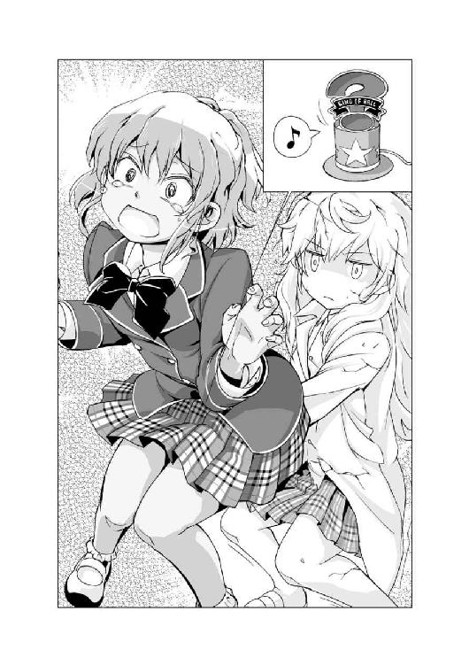
現実に戻った瞬間、元の女の子に戻ったスイナは、すかさずダルクのスカートに手を突っ込み、にぎにぎした。
本当にやりやがった、と驚愕する天災の前で、スイナの顔色がどんどん青くなる。
「本当に......男の人、なのですか、星埜先輩？」
「......はい」
観念したように俯く、ダルク。
「女子の制服、着てる、のに？」
「こ、これには、深い事情がありまして......」
もごもごと言い淀むダルク。
そんなダルクを、スイナはジッと見つめながら、そっとその手に触れた。
「......男の人、なのに......大丈夫」
戸惑うスイナはそのままトテトテと走り去ってしまった。
その後ろ姿を見送りながら、にっこり笑顔を浮かべた天災がダルクの肩を叩く。
「ふむ、よかったではないか、ダルク。どうやらあの一年生は、ダルクのことを女装変態野郎だと認識して、気持ち悪がって逃げ出したようだ」
「よ、よくないもん！」
そんな天災たちを見守っていたバアルは、開いていた白紙だらけの《イゾルデの封印書》に目を向ける。その中に、新たに二ページ分の文章が浮かび上がっていた。
７
次の日の昼休み、《柊技術研究所》の窓から出てきた天災は、ばったりバアルと鉢合わせした。
「おや、天災ちゃん。こんなところで偶然ですな」
「何が偶然だ。待ち伏せでもしていない限り、こんな場所でばったりと会うことなどないだろうが」
「なぜ窓から？」
「扉が特殊過ぎてピッキングができなかったのだ」
「なるほど」
「しかし扉がアレでも窓が普通の窓では意味がない」
それ以前に、窓からでも侵入するのはどうなのだろう、とバアルは思ったがあえて口にはしなかった。
「それで、スイナちゃんの部室で何を？」
「ゴーレム六号を見に来ただけだ。刻印は消えていたな」
「それはもちろん。昨日、天災ちゃんたちが勝ちましたから」
「これでゴーレム六号が暴走することもないな」
「はい」
「しかし、まさかＡＩも何もないただのロボットがあそこまで暴走するとはな」
「これぞ《刻印の呪い》マジックです」
「何がマジックだ」
不機嫌そうにそっぽを向く天災。
「それにしても、昨日は本当にお見事でしたな」
「ふん、どこが見事なものか。もしあれが現実なら、事件を解決するどころか私は命を失っていた」
「ですが、昨日はスペシャルゲームでした」
「ゲームだろうと現実だろうと変わりはない」
「おや、昨日とは随分と言っていることが違いますな」
「ふん、気のせいだろう」
「なるほど、昨日のスイナちゃんとのやり取りは売り言葉に買い言葉だったということですか」
「うるさい黙れ」
「ではやはり納得いかなかったと」
「当たり前だ。あれほど極めて不本意な結末はない」
心底悔しそうに見える天災は、さらにぽつりと呟く。
「これからは、悪魔との勝負にも、もっと積極的に挑むべきかもしれんな」
「おや、どういう風の吹き回しですか、天災ちゃん？ あれほど目立たないのは嫌だ、とおっしゃっていたのに？」
「名探偵として不十分なのに目立っても仕方がない」
「不十分ですか」
「あれでは名探偵でもなんでもない。私もまだまだだ」
それだけ言い残し、天災は去って行った。
一人その場に残ったバアルは「ふむ」と考える。
壱級天災は、自らを名探偵と名乗る。自らにそれだけの力があると自負しているからだ。そしてそれは間違いない。壱級天災にはそれだけの力がある。
だが一方で、自らの力が至らないと思えば、素直にそれを受け入れ、改善しようと努力する。おそらく、そういった努力の結果、今の天災があるのだろう。
天災ちゃんは、案外ひたむきな女の子なのかもしれませんな。
「それにしても、まさか今回の一件が無事に解決してしまうとは些か予想外でしたな」
天災の類いまれなる観察眼と推理力が生かせない、天災が不得手な勝負を吹っ掛けたバアルの計画では、天災はこの勝負を落とし、初めて被害者が出る予定だった。
案の定、実力行使の必要だった今回の勝負に、天災は大苦戦。
伏見妃凜の参戦には、バアルは些か驚いたが、《惨劇の未来》での幼児化によって、その力も削いだ。まあ、あの姿がバアルの趣味であることは間違いないのだが。
しかしまさか、今回の犯人であるゴーレム六号の製作者・柊スイナにまでアプローチするというのは予想外だった。
ゴーレム六号の弱体化こそできなかったが、結果的に柊スイナを引き込み、勝ちを呼び込んだ。
「ですが、追い込んだのは間違いありません。そして知らない天災ちゃんの一面も見ることができました」
名探偵として振る舞うことをモットーとする天災が、勝負のルールの穴を巧みに突き、なりふり構わず勝ちをもぎ取りにいったのは実に新鮮だった。
「まさに大友先生が殺されないための奮闘......いえ、違いますな。天災ちゃんがどうしても助けたかったのは、ゴーレム六号を作ったスイナちゃんの心ですかな」
弱い者を護るためという願いを抱いた少女が作ったロボット。
だがもしこのまま殺人事件が起これば、ゴーレム六号はスクラップにされ、その製作者である柊スイナにもなんらかの処分が下されていただろう。
そして柊スイナの想いは壊れてしまっていただろう。
「まあ正直、それも見てみたかったですけどね」
夢と希望を胸に抱く少女の心がズタズタに崩壊していく様を見ることができたのなら、さぞ心が震えたことだろう。その甘美なる快感が、悪魔は実に名残惜しく思えた。
「まあ焦ることはないでしょう。まだまだいくらでも機会はあるのですから」
悪魔は邪悪な笑みを浮かべ歩き出す。
「いやー、天災ちゃんの今後の活躍が実に楽しみですなぁ」
名探偵・壱級天災。芯があり、自らの考えと目的のために真っ直ぐ突き進む強さを持った女の子。
だが、本当に。彼女はそんなに心が強い女の子なのだろうか？
こうして事件を解決できているうちはいい。しかし、それが失敗してしまった時、彼女はどういう表情を浮かべるのだろうか。
それでも彼女は、本当に今のままでいられるのだろうか？
「それを確かめるのが今からとても楽しみだ」
そして自分と契約することができた本当の理由を知った時、壱級天災はどうなるのか？
この七重島を作った龍ヶ嬢七々々にはなかった、自称名探偵・壱級天災にはある自分と勝負する資格の正体を知った時、彼女はどんな決断を下すのか？
悪魔バアルは、その瞬間が今から楽しみで楽しみでしょうがない。
８
「それで、なぜ貴様がここにいる？」
放課後、天災とダルクが伏見研にやってくるとなぜかスイナの姿があった。
「......入部した」
「貴様には自分の部室があるだろう」
「わたしの部室に、ダルク先輩が、来てくれるならいい、けど、来てくれるか、分からないから。一応、ダルク先輩の指紋認証も登録しておいたから、ダルク先輩は、いつでもわたしの部室に来られる」
「そ、そうなんですか」
どう反応していいか分からず戸惑うダルク。
そんなダルクの手を引っ張り椅子に座らせたスイナは、黙ってその隣にちょこんと座る。
そんなスイナとダルクにお茶を出したのは、この部の正式な部員・木戸隆。
「よろしくね、柊さん」
だが、そんな木戸をスイナはガン無視。
「スイナは男嫌いだからな。それよりも木戸、彼女がいるにもかかわらず、そうやって手当たり次第に女の子に愛想を良くするのは、どうだろうかと妃凜は思うのだが？」
「か、勘弁してくださいよ、妃凜先輩」
不機嫌そうな表情を浮かべる妃凜に、焦りまくる木戸。
「おい、柊スイナ。ダルクも男だぞ」
睨みつける天災の前で、スイナはダルクの制服の裾を摑む。
「ダルク先輩は......別に、大丈夫......だから」
モジモジするスイナ。むしろぎゅっと摑んだ裾を離さない。
そんなスイナは伏見研を見回しながら言った。
「妃凜先輩も、好き。その男の先輩は、どうでもいい」
嬉しそうな妃凜と悲しそうな木戸。
「でも、ダルク先輩と、いつも一緒の、天災先輩は......ちょっとイヤ」
ダルクにくっつきながら、「べー」と舌を出すスイナの姿に、天災はワナワナと怒りに震え、大声で叫ぶ。
「私だってお前なんか大嫌いだ！」
その日の放課後の時間を《伏見研》で過ごしていたのは、部長である三年生の伏見妃凜、二年生の壱級天災と星埜ダルク、そして一年生の新入部員・柊スイナの四人であった。
妃凜は自分の机の席に腰掛け、ダルクの淹れたコーヒーを堪能しながら、窓の外に目を向け物思いにふけっている。
テーブル席ではお砂糖とミルクたっぷりのコーヒーを啜る、不機嫌そうな天災。
その向かい側では、困った表情を浮かべているダルクと、そんなダルクの隣まで椅子をずらしてきて、寄り添うようにして座っているスイナの姿があった。
「ダルク先輩、とっても、いい匂いがする」
「あ、えっと、その......」
ダルクに顔を近づけ、スンスンと鼻を鳴らすスイナに、ダルクはただただ恥ずかしそうに顔をそむけている。
「恥ずかしがっているダルク先輩、とっても可愛くて、私は好き 」
」
「ど、どうも」
「ふーっ」
「ふあっ！ 耳に息をかけるのは止めて下さい！」
バン
テーブルを思いっきり叩いて立ちあがったのは、天災だった。
「いい加減にしろ、柊スイナ！ さっきから見ていれば、ダルクにべたべたと引っつきおって！ さっさと離れろ！」
「嫌だ」
プイッとそっぽを向くスイナは、むしろダルクの腕に抱きつき、天災に向かって「あっかんベー」をした。
「き、き、き、貴様！」
思わず懐から改造モデルガンを引き抜いた天災は、銃口をスイナに向ける。
それを見て、スイナもすかさず動く。
「ゴーレム六号」
素早く首からかけていたコントローラーを操作し、背後に立たせていたゴーレム六号を起動させ、その右手に握らせていたゴーレム六号専用バズーカ砲を天災に突きつける。
自分の顔程もある、銃口を向けられ、天災は怒りでワナワナと震えだす。
「なんでわざわざそいつを連れてきたのかと思えば、こういうことか」
「天災先輩、の、行動、なんて、お見通し。ダルク先輩、すぐ独占しようとする、のは、ズルい」
「なっ！ そ、そんなことは別にしていないぞ、私は！」
「だったら、怒らなきゃ、いい」
「物事には節度があるだろうが！ ダルクはこれでも一応、貴様の先輩だぞ！」
「ダルク先輩、優しいから、怒らない、もん」
「くっ！ おい、ダルク！ さっきから黙ってないで、なんとか言え！」
「ダルク先輩、別に怒って、ない、ですよね？」
二人に詰め寄られ、オロオロするダルクは、なんとか笑顔を浮かべる。
「と、とにかく、落ち着きましょうよ、二人とも。天災もモデルガンを人に向けちゃダメだよ。スイナさんも、ゴーレム六号をそんなことに使ったらダメですよ」
「ふん、知るか。ダルク如きに指図される覚えなどない！」
真っ向から反発する天災。
その一方で、スイナはダルクに言われるがままに、ゴーレム六号を操作し、言われた通りにする。
「ごめんなさい、天災先輩」
ダルクに言われて、あっさりと引き下がるスイナが、天災は余計に面白くない。
「ふん、随分とお利口さんではないか！」
「ダルク先輩に言われた通り、やっぱり、ゴーレム六号は、やり過ぎだったかも、しれない」
「そう思うのなら、なんでわざわざ連れてきた？」
「天災先輩は、ゴーレム六号を使っても、ズルいって言わないから。その......天災先輩のそういうところは......えっと......嫌いじゃない、かも」
ほんのり頰を赤くしているスイナがもじもじと俯く。
その言葉を聞いた途端、天災の顔も赤くなる。
「ふ、ふん、勝手にしろ。別にそんなのを使われても私はどうも思わん」
改造モデルガンを懐に仕舞った天災は、椅子に座り直して、そっぽを向きながら甘いコーヒーを飲んでいる。だけど、その耳まで真っ赤になっている。
そんな二人の様子を見ていて、ダルクはとっても嬉しくなる。
こうやって仲間に囲まれている天災の姿に、ダルクはただただ微笑ましい気持ちになった。
「何をにこにこ笑っている、ダルク？」
ギロリと天災に睨まれて、ダルクは慌てて手を振る。
「き、気のせいだよ」
そんなダルクの背後に近づく影があった。
それは片手でダルクを軽々と持ち上げた。
「へっ、ちょっと、スイナさん？」
ゴーレム六号を操作し、ダルクを持ち上げたスイナがにっこり。
「天災先輩の、許しも出たから、ゴーレム六号を使って、ダルク先輩をお家に連れて帰る」
「誰がそこまで許した！」
「えっ？ でも、ゴーレム六号を、使ってもいいって......」
「それとこれとは話が別だ！」
「その前に、下ろしてください！」
ぎゃいぎゃいと文句の応酬を始める天災とスイナ、そして助けを求めるダルク。
「やかましい！」
その怒鳴り声に思わず三人はビクリとなって口を閉じた。大声を上げたのが伏見妃凜だったから。
「まったくさっきからくだらないことをギャイギャイと言い合いおって！ お前たちはこの場所をなんだと思っているのだ！ ここは自らの探究心の答えを導き出す神聖なる場所なのだぞ！ 静かにできないというのなら今すぐ妃凜の城から出て行け！」
普段のおっとりとした妃凜からは考えられない本気の怒りの声に、天災もスイナも申し訳なさそうに頭を下げる。
「す、すまなかった、妃凜殿」
「ごめんな、さいです、伏見先輩」
頭を下げる二人と、スイナの操作によってゴーレム六号から解放されたダルクも申し訳なさそうに頭を下げる。
普段、自ら興味のあることにしか動かない伏見妃凜とはいえ、さすがは三年生。上級生として間違った後輩をしっかりと指導する。まさに理想の先輩である。
そんな三人の謝罪に納得したのか、妃凜もその怒りを収めた。
「分かればいい。今後は、喧嘩などせず仲良くするのだぞ」
そう椅子に腰を下ろした妃凜は、ため息と共に再び窓の外に目を向ける。
「まったく、これではおちおちと盗聴もできんではないか」
窓の外に見える、花壇の手入れをしている木戸隆につけた盗聴器の音に集中する妃凜に向かって三人が叫んだ。
「「「お前がいい加減にしろ！」」」
壱級天災の極めて不本意な名推理１ 了
初めての皆さん、「初めまして」。そうではない皆さん、「こんにちは」。鳳乃一真でございます。
本作『壱級天災の極めて不本意な名推理』シリーズは、『龍ヶ嬢七々々の埋蔵金』シリーズのスピンオフ作品として、ファミ通文庫のホームページ・FBOnlineに不定期掲載させていただいているシリーズになります。
時間軸としては、本編（七々々シリーズ）と同時進行で起こっている出来事となり、ちょいちょい本編に出てくる登場人物が出てきたりもします（逆もまたしかり）。
こうして本にすることになり、大幅な加筆プラス描き下ろしを加えた一冊となりましたが、皆さんご満足いただけましたでしょうか？
今作・天災シリーズの誕生の裏には、ある人物の一言がありました。
「ＹＯＵ、天災を主人公にしたシリーズやっちゃいなＹＯ」
それは今からおよそ一年と二か月前、出版元であるエンターブレインの食堂での打ち合わせ中に言われた一言でした。
そう口にした方こそ、我らが敏腕編集・担当閣下でありました。
閣下の下知の元、「ヒーハー」の一言と共に作業に取りかかることになった、鳳乃。
しかし当初は、どういった話にしようかと散々悩むことになりました。
「天災が活躍するんだからやっぱり推理モノだよな」「だけど、推理小説ってヤツのルールがどうもよく分からないんだよなぁ」「それにさ、毎回毎回、事件が起こって人が死ぬのとか縁起悪くね？」「いやいやそれじゃ推理小説全否定になっちゃうし（一人ボケツッコミ）」「かと言って大がかりな事件（殺人事件とか）が起きないとイマイチ盛り上がらないしなぁ」
と、色々試行錯誤した結果、こんなお話になりました。自分はかなり気に入ってます。
続きが気になる方は、今すぐファミ通文庫の公式サイトFBOnlineをチェック♪（宣伝）
というわけで、最後に謝辞を。
赤りんご先生、お互い頑張りましょう。マジで頑張りましょう（笑）。担当閣下、いつもありがとうございます。あなたのお言葉なくして、このシリーズは誕生しませんでした。この作品を世に出すためにご尽力くださいました皆様、いつもながら本当に感謝しております。そしてこの本を手に取ってくださった読者の皆さんにもお礼を申し上げます。
『壱級天災の極めて不本意な名推理』シリーズ、本編・『龍ヶ嬢七々々の埋蔵金』シリーズ共々、頑張っていきますので、是非是非ご期待下さい。
それではまた次巻にて――
二〇一三年七月某日 鳳乃一真
電子版 ファミ通文庫
壱級天災の極めて不本意な名推理1
著者／鳳乃一真
イラスト／赤りんご
発行人 青柳昌行
発行所 株式会社KADOKAWA
〒102-8177 東京都千代田区富士見2-13-3
http://www.kadokawa.co.jp
企画・制作 エンターブレイン
デザイン 山崎 剛（AFTERGLOW）
(c)2013 Kazuma Ootorino
本電子書籍はファミ通文庫『壱級天災の極めて不本意な名推理1』（2013年9月11日発行 初刷）を元にして制作しております。
本書に関するお問い合わせ先
エンターブレイン カスタマーサポート
電話 0570-060-555
（受付時間 土日祝祭日を除く12：00～17：00）